§001 Politics：本周政治原题：Politics：本周政治 · 板块：The world this week · 栏目：本周
唐纳德·特朗普向国会发表国情咨文演讲。这场持续1小时48分钟的演讲是有史以来最长的一次。总统声称自己促成了美国的“黄金时代”，但民调数据却显示并非如此，选民对生活成本的担忧日益加深。特朗普在最高法院推翻其所谓“互惠关税”数天后发表演讲。该法院裁定，特朗普援引的紧急权力法案无法支持对加拿大、中国和墨西哥实施的关税，理由是这些国家未阻止毒品走私。法院指出，美国“并非与世界上所有国家处于战争状态”。总统称法院的裁决“令人遗憾”。■
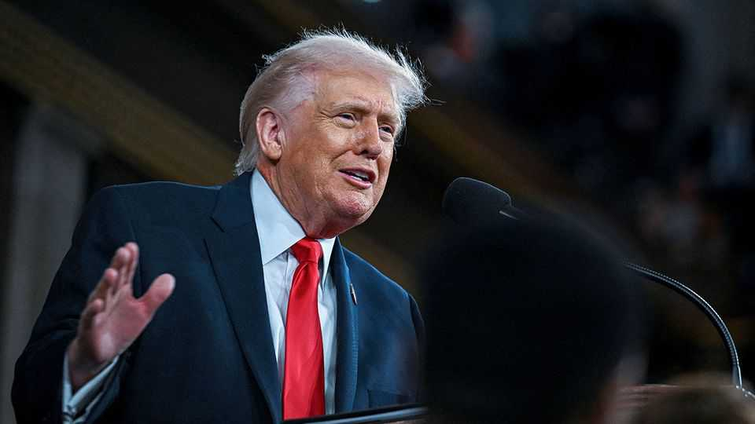
墨西哥政府动用额外2500名安全人员前往贾尔科州，以平息“埃尔门乔”（Jalisco New Generation Cartel头目）在军方突袭中身亡后引发的暴力浪潮。武装分子在道路上设卡拦截，袭击商铺并纵火烧车；前往瓜达拉哈拉和普埃布拉瓦尔塔的航班一度中断。25名国民警卫队士兵及数十名毒贩成员在混乱中丧生。总统克劳迪娅·谢因鲍姆宣布局势已恢复平静。■
玻利维亚内政部长称，该国已重新与美国缉毒局（DEA）展开合作。作为全球主要可卡因生产国，玻利维亚曾在左翼总统埃沃·莫拉莱斯（Evo Morales）执政期间于2008年驱逐DEA特工。
美国与玻利维亚的关系自新任中右翼总统罗德里戈·帕斯（Rodrigo Paz）去年11月上台后显著改善。古巴向接近其北方海岸的快艇开火，导致十人中的四人死亡，其余六人被逮捕。当局称这十人均系古巴公民，居住美国，试图实施“恐怖渗透”时被拦截。美国表示将就该事件展开独立调查，这正值美古关系再度紧张之际。美国海军在印度洋扣押另一艘运送委内瑞拉石油的油轮，此举违反制裁规定。这是美军本月第三次在该区域登船检查。“国际水域不应成为被制裁者的避风港”，五角大楼如此声明。■
美国又击沉一艘疑似贩毒的船只，导致三人死亡。包括欧盟委员会主席乌尔苏拉·冯·德·莱恩（Ursula von der Leyen）在内的欧洲领导人齐聚基辅，纪念俄罗斯入侵乌克兰四周年。北约秘书长马克·鲁特（Mark Rutte）呼吁提供更多援助以支持乌克兰的战争努力，但匈牙利目前正威胁要阻止一项900亿欧元（1060亿美元）的贷款，原因是与乌克兰就从俄罗斯输往乌克兰的石油管道产生争执。与此同时，英国对俄罗斯企业及个人实施近300项新制裁，其中包括Transneft公司——这家管道运营商负责运输超过80%的俄罗斯石油出口。俄罗斯媒体称已对全球社交网络平台Telegram展开调查，指控其协助乌克兰和西方情报工作。■
Telegram创始人帕维尔·杜罗夫（Pavel Durov）称俄罗斯已对他提起刑事诉讼，指控其协助恐怖主义。他表示官员们试图压制言论自由，“一个国家害怕自己人民的悲惨景象”。俄罗斯媒体称他为北约的工具。杜罗夫于2014年离开俄罗斯。一名自杀式炸弹袭击者在莫斯科萨维奥尔斯基火车站附近引爆自己，一名警察不幸遇难。当局称此人来自位于莫斯科以东1,100公里（680英里）的乌德穆尔特共和国。弗拉基米尔·普京称这名炸弹袭击者是通过网络招募的。罗布·杰滕在去年10月的选举后宣誓就任荷兰首相，这场选举引发了数月的组阁谈判。他的中间派D66党与基督教民主党及右翼中间派VVD共同组成了少数派政府。■
杰特腾承诺增加国防和住房支出，同时提出大幅削减福利开支。由于未获得多数席位，他的联合政府将需要左翼和右翼议员的支持。法国外长让-诺埃尔·巴罗（Jean-Noël Barrot）禁止美国驻巴黎大使查尔斯·库什纳（Charles Kushner）与法国部长有任何接触，双方因外交争端陷入僵局。争端始于美国大使馆评论称法国“暴力左翼极端主义正在上升”，该评论是在一名右翼学生被谋杀后发表的。巴罗召见库什纳要求解释该评论，但库什纳声称有其他安排未出席会谈，双方最终通过电话沟通。库什纳据称承诺不再干涉法国内政。英国前政府大臣彼得·曼德尔森（Peter Mandelson）因涉嫌滥用公职被逮捕。■
这起事件紧随安德鲁·蒙巴顿-温莎（Andrew Mountbatten-Windsor，国王查尔斯三世的弟弟）因类似原因被拘捕，其涉案背景与其担任英国贸易特使的工作有关。两起案件均与杰弗里·爱泼斯坦文件中披露的信息有关；涉案两人均与已故性侵犯有密切私人关系。去年曾担任工党政府驻美大使的曼德尔森勋爵（Lord Mandelson）否认了有关他即将逃离英国的猜测，称相关传言“毫无根据”。两名涉案人员目前已被释放，等待进一步调查。美国在中东的军事部署持续升级，全球最大战舰——美国“杰拉尔德·R·福特”号航母正驶向该地区。五角大楼泄密文件显示，防务官员对针对伊朗实施长期空袭的风险表示担忧。特朗普对伊朗未能在美国威胁下“屈服”表示惊讶。■
与此同时，伊朗多所大学爆发了新的反政府抗议活动。美国驻以色列大使馆宣布将开始为西岸以色列定居点提供护照服务。该机构在X平台发布的声明中表示，将首先为定居点埃弗拉特（Efrat）的美国公民提供服务，并将在未来几个月逐步推广至另一定居点。根据国际法，以色列定居点被视为非法。连接刚果民主共和国南基伏省乌维拉与布隆迪经济首都布琼布拉的关键边境口岸重新开放。此前，由卢旺达支持的M23叛乱组织已于1月从乌维拉撤出。联合国将苏丹内战中快速支援部队（RSF）的四位高级领导人列入制裁名单。■
制裁措施源于联合国对苏丹达尔富尔地区去年RSF武装分子行动的评估，认为其“具有种族灭绝的特征”。中国随即对日本至少20家企业的稀土等关键矿产出口实施即时限制，这些矿产可用于军事或民用领域。中日关系自日本首相高市早苗（Takaichi Sanae）暗示若中国入侵台湾将采取强硬回应，并公布强化国防计划后急剧恶化。巴基斯坦对阿富汗疑似恐怖分子据点发动空袭，此前阿富汗境内接连发生炸弹袭击事件，巴基斯坦政府称袭击由阿富汗境内武装分子策划。喀布尔塔利班政府称此次攻势造成数十人丧生，联合国则表示13名平民死亡。■
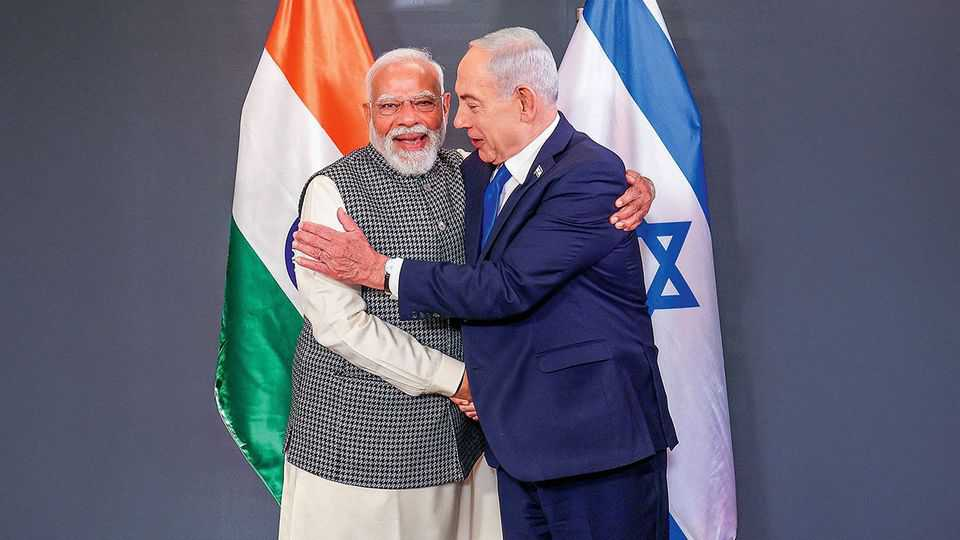
空袭过后，枪手在巴基斯坦西北部科哈特（Kohat）杀害七人，一名自杀式炸弹袭击者在旁遮普省（Punjab province）炸死两名警察官员。巴基斯坦塔利班（Pakistani Taliban）宣称对这两起袭击负责。印度总理纳伦德拉·莫迪（Narendra Modi）访问以色列，期间与以色列总理本雅明·内塔尼亚胡（Binyamin Netanyahu）会面，并在以色列议会（Knesset）发表演讲。两国领导人讨论了加强双边安全与贸易合作。访以前，内塔尼亚胡称印度是“六边形联盟”（hexagon of alliances）的一部分，该联盟“共同对抗极端轴心”，并“致力于稳定与进步”。■
§002 Business：本周商业原题：Business：本周商业 · 板块：The world this week · 栏目：本周
唐纳德·特朗普的新10%全球关税政策正式生效。总统依据1974年颁布的法律，对先前被最高法院推翻的关税政策实施了这一征税措施。在法院的裁决中，未明确说明是否应为此前被废止政策下征收的关税提供退款。这一问题将由下级法院裁定。联邦快递成为首家向政府提起全额退款诉讼的大型企业。法律程序将漫长而复杂。特朗普计划最终将全球关税提高至15%。此举已引发与美国达成贸易协议或正在谈判的国家的不满。■
欧洲议会立法者暂停了欧盟与美国协议的批准程序，尽管欧盟贸易专员强调尊重该协议“至高无上”。特朗普警告各国不要“玩弄”协议，否则可能面临更高关税。美国经济在2025年第四季度以年化1.4%的速度增长，远低于第三季度4.4%的增速。美国经济分析局估计，长期政府停摆使该季度增速下降一个百分点。2025年全年经济增长2.2%，为疫情以来最慢增速。日元兑美元大幅贬值，因日本首相岸田文雄提名两名鸽派候选人进入日本央行政策委员会。■
浅田俊郎与佐藤绫乃支持经济刺激措施和降息政策，这可能使他们与央行行长泽田康弘产生分歧，后者可能希望加息。阿斯顿·马丁决定裁员20%，因其难以产生现金流并管理巨额债务。这家英国豪华汽车制造商将部分责任归咎于关税，称其对业务造成“极其破坏性”影响。派拉蒙将对华纳兄弟探索公司的敌意收购报价从每股30美元提高至31美元。华纳兄弟承认这可能构成对已接受的Netflix交易的“更优方案”，表示将与派拉蒙磋商，但与Netflix的合并协议仍有效。巴拿马政府称，两家欧洲航运公司马士基与地中海航运公司现正运营巴拿马运河的两个港口。■
1月，该国最高法院撤销了香港综合企业 Hutchison 公司运营设施的合同。巴拿马总统称，Hutchison 公司在其数十年运营期间，在关键水道上建立了“自治领土”。该公司称此次接管“违法”。非洲首富阿利科·丹格特表示，他将在未来几个月将位于拉各斯的炼油厂在尼日利亚证券交易所上市，目前国家石油公司持有的少数股权将面临争夺。估值达200亿美元的炼油厂上市可能有助于提振该国股市。IBM 股价录得自2000年以来最大单日跌幅，因 Anthropic 宣布其AI编码工具现已能更新运行于IBM大型计算机上的旧编程语言。■
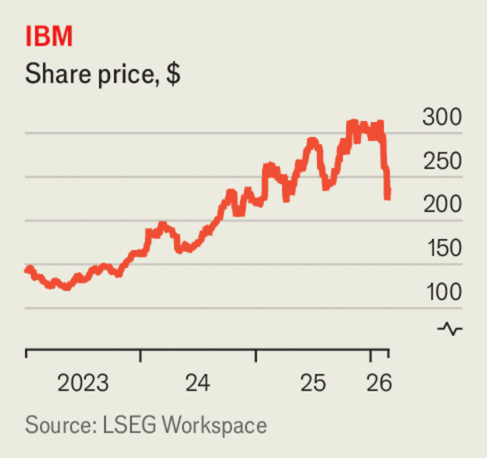
现代系统改造曾需要大量顾问耗费数年时间绘制工作流程，Anthropic曾如此自豪地宣称。“AI改变了这一切。”IBM股价并非唯一承压的股票，软件公司股票也遭遇新一轮抛售。一家名为Citrini Research的股票研究平台博客文章部分背锅。该文章设想2028年AI撕裂经济的场景，届时美国失业率将达10%。该公司强调其分析仅为情景假设而非预测。“这不是熊市色情文学或AI末日狂热小说，”文章指出。尽管如此，它仍描述了一场“经济大流行”，传统上被认为枯燥的白领岗位消失，取而代之的是“发现一切都不枯燥”的AI代理。Meta宣布AMD将为其提供图形处理单元，以助力AI基础设施。■
根据协议，Meta可能在芯片制造商英伟达（Nvidia）中持有最高10%的股份。为满足其对计算能力的巨大需求，Meta近期还与英伟达达成了芯片供应协议。Meta今年计划在人工智能领域投入最多1350亿美元。英伟达交出了一份亮眼的季度财报。其营收同比增长73%至681亿美元，净利润达到430亿美元，同比增长94%。英伟达首席执行官黄仁勋表示，人工智能领域的计算需求正在以指数级速度增长。■
§003 美国危险的稀土资源主导战略原题：America’s dangerous pursuit of critical-mineral dominance · 板块：Leaders · 栏目：领导人
1973年，一个阿拉伯产油国联盟因指责某些国家支持以色列，而停止向这些国家出口原油，迫使全球陷入困境。油价飙升，西方经济陷入困境。如今的威胁是，中国可能通过控制其他自然资源实现其目标，例如夺取台湾。去年中国已通过限制稀土金属出口展示其力量。因此，美国正在展开数十年来最大规模的商品市场干预行动。
■
争夺焦点是“关键”金属的供应，这是一组对制造军事、电气和计算基础设施至关重要的矿物——现代经济赖以安全、高技术和绿色发展的所有要素。中国供应了这些金属的大部分：例如，它开采了全球约80%的钨，提炼了99%的镓。这促使美国展开全面行动，力求多样化其60种关键金属的供应来源。美国已承诺数十亿美元资金用于国内外数十个采矿项目，提出建立价格下限和贸易集团的计划，并宣布建立大规模储备以满足数月的国家需求。如今的风险是，美国过于依赖其零散举措，而这种追求控制的行为可能破坏确保全球经济顺畅运行的灵活且富有韧性的市场激励机制。■
中国对关键矿物的控制暴露了西方多年来最严重的战略弱点。去年四月，在与美国的贸易战期间，中国限制了七种关键稀土的出口；十月又针对另外五种稀土采取了类似措施。近三分之一的五角大楼采购项目面临短缺风险，从汽车制造到可再生能源产业均受到影响。大规模中断的前景促使特朗普总统与习近平达成贸易休战协议，并放松了对部分技术出口的美国管制。然而，习近平随时可以选择再次使用这一手段。与此同时，用于双重用途应用（军事与民用之间的灰色地带）的稀土出口仍被大规模禁止，削弱了西方重新武装的努力。如果说应对中国策略的最佳防御是加大对全球市场的投入，那将是一件令人欣慰的事。■
上世纪70年代的石油危机推动了大宗商品交易的发展——在这一领域，关键原材料的价格由数百万买家和卖家通过每日4000万份衍生品合约在交易所确定。无论是战争、工业罢工还是自然灾害，市场总能比政府计划者更有效地应对冲击。然而，美国的担忧并非毫无道理。中国对关键矿产资源的主导地位意味着继续完全依赖市场这只无形之手将是天真且危险的。中国已用数十年时间构建对矿产资源的控制，既在国内资助项目，也在海外收购资产。其生产商已整合为国家可掌控的巨头企业，这些企业拥有足够的市场力量，可通过向全球市场倾销产品威慑潜在竞争对手——即使这意味着暂时承受亏损。■
因此，美国的任务是找到一个平衡点。一方面，它需要防范中国再次切断出口的风险，并通过提高进一步限制的成本来遏制其行为；另一方面，它需要培育市场。补贴和储备库存的成本高昂。国家间矿产协议容易引发寻租行为、私下交易和腐败——这在特朗普政府时期尤为明显。政府主导经济会削弱价格信号，这些信号本应鼓励节约和创新。不幸的是，美国正错误地处理这些权衡。官员们似乎认为几乎任何支出都是安全的代价。资金被浪费性地分散使用，而非集中于中国控制最严密的领域——炼油厂和冶炼厂。从特拉华州到刚果民主共和国，投机者正向政府推销虚假项目，以期获得轻松资金。■
为换取乌克兰和平（按其条件），弗拉基米尔·普京向特朗普承诺提供虚假的12万亿美元交易，包括大量能源和矿业项目。美国竞选应遵循三项原则。第一是缩小范围。并非所有被认定为关键的60种矿物都真正具有战略意义。铝、铅和锌储量丰富、可回收且可替代；中国难以垄断铜等工业金属的庞大市场。因此，美国应集中精力于某些稀土等关键性小众金属，这些金属中国更容易限制出口。优先保障国防及或许医疗等关键产业，让汽车制造商自行应对。美国应聚焦接近完成的项目。即便保持少量供应脱离中国控制，也能打破其垄断，因为习近平将清楚美国拥有替代方案。■
第二项原则是善用一切可用工具。美国的定向储备可满足危机中的即时需求，其预先约定价格的采购合同可吸引私人投资者并推动项目启动。但美国也必须关注精炼与加工环节。生产单一金属的精炼厂常将关键副产品留在废石中，因加工成本过高。有条件国家支持或可改变其成本核算。然而整体而言，美国必须努力确保价格信号能够传递——第三项原则。唯有当供应受限时买方与卖方面临高价格，经济才能持续适应与创新。相比之下，固定低价将加剧依赖。对特朗普政府而言，国家安全意味着美国优先。■
这演变为一场以他国代价争夺稀缺资源的竞赛，导致盟友担忧自己会被落下。即便一个对军事联盟效用存疑的政府，也应与其他国家合作获取自然资源。欧洲拥有工程专长；日本作为中国矿产讹诈的早期受害者，具备供应链保障经验。双方联手壮大市场。面对中国的地质条件、勤奋精神和政治体系，美国最宝贵的资产在于其与他国合作的能力。■ 仅限订阅者：欲了解我们如何设计每周封面，请订阅每周《封面故事》新闻简报。
§004 唐纳德·特朗普正面临发动无明确目标战争的风险原题：Donald Trump is at risk of launching a war without purpose · 板块：Leaders · 栏目：领导人
以发出空威胁而闻名终将付出惨痛代价。问问巴拉克·奥巴马便知。十三年前，中东某独裁者无视时任美国总统的警告，未跨越“红线”使用化学武器攻击本国人民。世界屏息等待，想知道奥巴马何时会惩罚，甚至推翻这位暴君以惩治其战争罪行。然而奥巴马却选择袖手旁观。叙利亚暴君竟在此后维持统治长达十余年，导致半数民众丧生。对许多人而言，从那一刻起，总统的公信力便彻底崩塌。 ■
如今，中东又一个暴虐政权正疯狂地屠杀自己的人民。伊朗统治者在1月可能屠杀了2万名示威者。当时，唐纳德·特朗普总统曾表示要挺身而出拯救抗议者，承诺“援助即将抵达”并敦促他们继续上街。此后，特朗普誓言要推翻伊朗政权。本周他在国情咨文演讲中发誓要阻止伊朗“邪恶的”核计划死灰复燃。特朗普是否因此在中东设下了自己的红线？你或许会认为不是。当今政界无人比他更不受自己夸张言论和矛盾的束缚。若总统只是避开伊朗，恐怕也不会有人对他那些喧嚣的承诺指手画脚。然而，当今白宫主人比任何人都更可能将奥巴马视为警示的反面教材。■
更重要的是，特朗普所做的远不止空谈。为增强其言论的可信度，他已向伊朗海岸派遣了大批军力。中东地区如今聚集着自2003年以来最大规模的美军军事力量。第二艘航母——美国福特号——刚刚抵达。战机、轰炸机及其他空中力量已集结完毕。盟友也已进入戒备状态。通过准备对阿里·哈梅内伊政权实施惩罚的手段，特朗普正将这场危机推向高潮。这既是危险时刻，也是对其信誉的考验。另一原因是，总统可能已尝到军事行动的滋味。去年六月，他下令密苏里州的轰炸机协助以色列空军展开为期12天的战争，以“彻底摧毁”伊朗的核计划。
一月，他再次孤注一掷，派遣特种部队前往加拉加斯抓捕委内瑞拉独裁者尼古拉斯·马杜罗（Nicolás Maduro）。特朗普更希望不流血便取得胜利。但伊朗统治者也拥有话语权，他们态度强硬。伊朗可能判断自己能在与美国的核谈判中拖延时间——或同意达成协议，却在细节上故意拖延。哈梅内伊（Khamenei）或许已准备让国家陷入空袭。这位86岁的领导人可能已准备好成为殉道者；更可能的是，他押注自己能活下来，即使许多人因此丧生。伊朗统治集团似乎团结一致，就连美国人中也鲜有人认为仅靠导弹就能推翻他们。该政权或许期待通过单纯生存便从冲突中变得更加强大。若这是伊朗的计算，特朗普已陷入困境。■
发动一场没有明确目标的攻击，正是他长期以来所批评的错误做法。太多小规模、短期的战争最终都会演变为大规模、长期的冲突。伊朗拥有无人机和弹道导弹，其领导人表示他们比去年更准备使用这些武器对抗美国及其盟友。如果一次袭击导致大量美军伤亡，中国或俄罗斯将乐见美国再次陷入中东泥潭。特朗普或许最终能提出一个赢得公众和国会支持的战争目标。但在那之前，他最好继续与舰队保持沟通，而非贸然开战——即使保持克制看起来像是退缩。■ The Economist的订阅者可注册我们的Opinion新闻简报，汇集了最佳的社论、专栏、特稿及读者来信。
§005 私募投资领域的巨头们正面临一个诱人的奖品从指缝中溜走的风险原题：The right response to private-market dangers · 板块：Leaders · 栏目：领导人
私募投资领域的巨头们正面临一个诱人的奖品从指缝中溜走的风险。阿波罗（Apollo）、黑石（Blackstone）和凯雷（KKR）这三大私募巨头合计管理的资产规模已从2008年的2000亿美元膨胀至3万亿美元。迄今为止，他们主要依靠少数金融机构和超级富豪提供资金。如今，他们及其竞争对手正将目光投向大众市场。他们推出了一系列基金，旨在吸引散户投资者将资金投入未上市资产，如私募股权、房地产和私募债务。然而，这场 endeavor 可能正面临威胁。■
2月18日，这家鲜为人知的公司蓝 Owl 停止了其零售基金的计划赎回。“OBDC II” 的资产规模仅为16亿美元。然而，蓝 Owl 停止赎回、转而出售资产以向所有投资者返还资本的消息，却在业内掀起轩然大波。上市的私募投资管理公司股价大幅下跌；自年初以来，数家这类公司市值合计已蒸发1000亿美元。这是因为蓝 Owl 实际上是预警信号。OBDC II 使这类公司寄予厚望的“使私人投资民主化”模式受到质疑。私募投资公司及其支持者必须立即查明问题所在。宽松监管让这类市场在过去二十年间持续繁荣。■
他们若向零售投资者出售产品却不兑现承诺，就无法指望这种状况持续。所涉及的不仅是少数资产管理公司的收入。私募市场为零售投资者提供了一种分享巨大潜在回报的途径。全球绝大多数资产未上市，包括许多最令人兴奋的企业。将零售投资者的储蓄投入私募市场，也将对整体经济产生积极影响。人工智能领域的企业极度渴求资金，而蓝 Owl 的基金是它们的重要资金来源。尤其在美国，这类企业的前景将越来越决定经济增长速度以及该国与中国竞争的能力。OBDC II 旨在解决零售投资在私募市场长期存在的问题。■
引导储蓄流向私人资产颇具难度，因为这些资产缺乏流动性。这令监管机构心存顾虑，也让那些希望随时买卖、应对突发资金需求的投资者望而却步。OBDC II采用了一种由黑石集团于2017年推出的房地产收入信托基金模型，该模型提供有限流动性。投资者每月或每季度可申请赎回，但基金承诺每季度仅处理不超过其净资产价值5%的总赎回请求。若赎回申请超过该比例，基金将上限设为5%，并按比例分配。Blue Owl未能遵守这一规则是由于自身失误，还是该模型存在根本性缺陷，目前尚不清楚。
任何涉及养老基金和大学捐赠基金等机构利益的投资者，都应为这一问题仍未得到解答而感到不安。这些机构大量持有未上市资产，因此流动性管理至关重要。如果监管机构不强制要求像OBDC II这样的基金披露更多关于其如何处理流动性错配的信息，投资者们理应自行要求。幸运的是，这种可能性更偏向于无能。一家允许每季度赎回最多相当于其资产5%的基金，这并不算夸张：最坏的情况是，它承诺在五年内出售其投资组合。这与标准私募基金的典型清算期相同。对于OBDC II这类私人信贷基金而言，提供定期流动性本应尤为容易，因为这些基金投资于支付利息的贷款，而利息收入可用于满足赎回需求。■
基于上述原因，监管机构若因过度干预而让普通投资者更难购买私人资产，将是错误的。事实上，私人投资巨头在彼此交易放缓之际却急于向大众市场扩张，这一现象令人存疑。但业余投资者具备质疑能力。例如，他们可判断是否应投资那些在2021年市场狂热中被收购、以“公允价值”出售的昔日热门企业。他们不应期待因投资失误而获得救助——如同银行破产时可能获得的救助。与此同时，投资者应善用市场力量。不应向操作不透明的经理人注资。任何承诺年化回报率在个位数百分比以上、甚至更高的基金，都不值得信赖。■
它可能持有可能违约的贷款、可能空置的房产或可能倒闭的企业。如果它同时提供流动性，却投资于非流动性资产，也可能因此陷入困境。负责任的资产管理公司应协助客户审查这些风险。若未能做到，他们把握住的黄金机遇可能就此溜走。■ 订阅《经济学人》的读者可注册我们的观点通讯（Opinion newsletter），汇集了最佳的社论、专栏文章、特稿及读者来信。
§006 美国各州应警惕过度效仿欧洲原题：America’s states should beware of copying Europe too much · 板块：Leaders · 栏目：领导人
欧洲经济学家们经常满怀羡慕地眺望大西洋彼岸的美国。尽管存在关税混乱和移民人数锐减，但根据最新数据，美国的人均GDP年增长率仍达1.8%，而欧元区仅为1%。与美国相比，欧洲缺乏统一的产品市场（尤其是服务市场），也缺乏廉价能源、低税率以及灵活的雇佣和解雇员工的机制。技术官僚们心知肚明。据我们统计，马里奥·德拉吉关于欧洲低增长的标志性报告，至少70次将欧洲与美国进行了不利的对比。
■
若美国各州能同样契合自身优势的来源，那该多好。正如本报本周所报道，其经济政策正呈现出鲜明的欧洲化趋势，即便特朗普政府在联邦层面持续放松监管。各州并非所有举措都糟糕，但须警惕跟随欧洲走向碎片化与过度干预主义的路径。各州向欧洲靠拢的一个体现，是其对待新兴技术和市场的方式。尽管国会尚未出台任何关于人工智能的综合性法律，但已有五个州的立法者通过了各自矛盾的法规，另有16个州正在制定相关法律。目前已有八个州允许自动驾驶汽车行驶，包括北达科他州和北卡罗来纳州，但不得进入其南方同名州。■
美国司法部对争议性并购案的放行——例如惠普企业与瞻博网络之间的交易，两家企业计算领域巨头——甚至反垄断法的执行也在州际间出现分化。州检察长们，尤其是加州的检察长，正在调查这笔交易。一些州正抵制消费者金融和赌博领域的放松监管。与此同时，许多州正在建设欧洲风格的福利国家，由税收资助。例如带薪产假或育儿假——欧洲人对此感到震惊，因为美国人缺乏这种福利。过去五年间发生了一件引人注目的变化。要求雇主提供带薪休假计划的州数已翻倍。
约1.14亿美国人（约占三分之一）居住在如今提供至少12周带薪育儿假的州（在许多地方，新妈妈可享受高达24周的带薪育儿假）。这些计划通常相当慷慨，几乎全额替代因育儿而放弃的收入。新泽西州和纽约州的政策大致与法国和比利时的福利水平相当。这些州的居民为此支付更高的税收：例如，纽约居民缴纳的税款几乎与英国居民相当。部分这种实验值得欢迎。州政府长期以来一直是政策试验田。美国人流动性强，会离开治理不善的地区，从而对不良经济政策形成制约。美国的一些优势，如英语语言和硅谷人才集中度，已根深蒂固。同时，美国也能从欧洲学到一些东西。■
像丹麦这样的经济体能够将欧洲式对家庭和工人的支持与充满活力的劳动力市场及高生活水平相结合（尽管以高税收为代价）。产假显然不会威胁资本主义。加利福尼亚州自2004年起便提供产假，却依然成为人工智能革命的发源地。然而在其他方面，美国正面临效仿一个长期被贴上经济落后标签的大陆模式的风险。监管领域的威胁尤为突出。企业规则和标准的分歧将削弱美国单一市场的力量。能够轻松向近3.5亿消费者销售的潜力，是推动创新的强大动力。■
监管碎片化难以根治：尽管企业如同个人一样可以用脚投票，它们仍希望能在全美范围内销售软件工具和产品。美国联邦和州级政客往往将本国优势视为理所当然。幸运的是，正如关税和移民政策的经验所示，美国的活力如此强大，以至于可以承受犯错的代价。然而，即便欧洲对自身增长充满羡慕，美国若能以怀疑的眼光回望自身，将更有利于发展。■ 订阅者可注册《经济学人》观点通讯，获取编辑部文章、专栏、读者来信等精选内容。
§007 希思罗第三条跑道正演变为又一基础设施灾难原题：Heathrow’s third runway is turning into another infrastructure fiasco · 板块：Leaders · 栏目：领导人
2025年1月，英国工党政府大力支持希思罗机场第三条跑道的建设计划。此举旨在表明其对经济增长的承诺。但宣布宏伟的基建计划容易，将其变为现实却困难重重。此后，扩建欧洲最繁忙机场的项目接连亮起红灯。引发担忧的主要原因是成本不断攀升。希思罗机场目前已成为全球仅次于奥克兰的第二大昂贵机场。
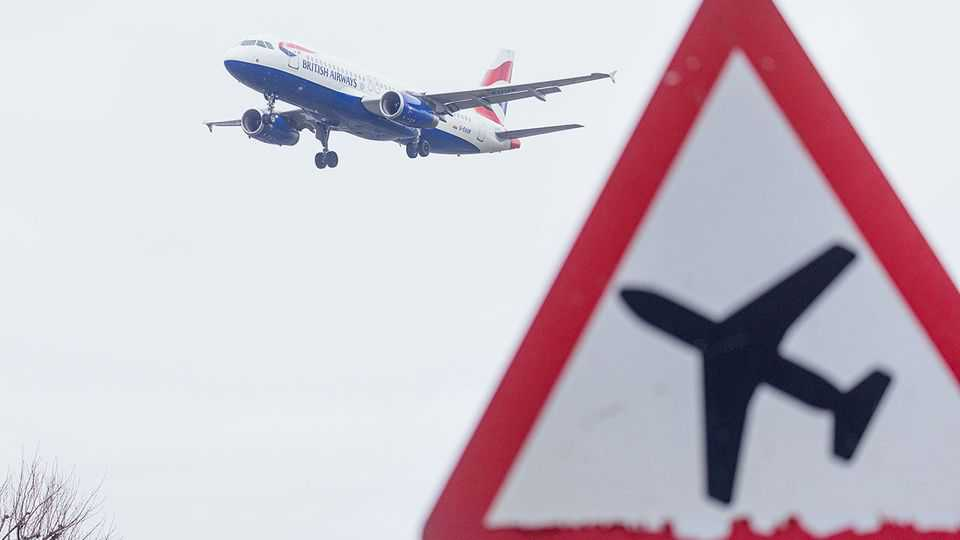
■
英国希思罗机场有限公司（HAL）作为运营方，提出了以私人资金投入490亿英镑（660亿美元）扩建和现代化机场的计划。这一成本几乎相当于迪拜计划在新枢纽建设四条跑道的近两倍费用。（《经济学人》集团主席德蒂顿男爵（Lord Deighton）此前也曾担任HAL主席。）希思罗机场的扩建计划可能导致本已高昂的起降费翻倍；乘客可能会选择飞往其他机场。此次扩建面临的阻力与英国此前备受争议的大型交通基建项目——高速2号线路（HS2）如出一辙。这条连接伦敦与伯明翰的铁路线已延期逾十年，项目规模被大幅缩减，实际成本更是翻倍。这两个项目都面临一些不可避免的挑战，例如伦敦高昂的建设成本。■
但其他障碍并非不可避免。相反，它们反映出政府过于怯懦，不愿改革规划体系，也过于天真，无法阻止私营运营商不断抬高成本。HS2项目则展示了规划过程中的错误做法。该项目在议会通过耗时超过三年，随后还需获得地方机构超过8000项进一步许可。工党对希思罗机场的规划体系进行了小幅改进，限制了法律挑战的机会。但过度的咨询和繁琐的法律程序仍将使成本飙升。仅规划文件的费用就预计将达到超过10亿英镑。HS2项目的失败也反映出目标不明确和激励机制错位。该项目原本旨在增加铁路运力，却最终将重点放在了速度上。■
政府缺乏商业头脑来控制成本，承包商也几乎没有动力去削减开支。希思罗机场的情况亦是如此。HAL的方案毫不吝啬开支：例如投入13亿英镑用于停车场建设，以及为新航站楼设计复杂的建筑方案。从HAL的角度来看，这种做法合情合理：监管机构允许其获得的回报与其投入资金的多少挂钩。但政府未能有效约束这家企业。有人可能会轻易得出该项目应被取消的结论。这将是错误的。英国迫切需要新建一条跑道，以保护并拓展其开放型岛国经济赖以生存的全球航空网络。希思罗机场目前已是欧洲最拥堵的机场之一。若不采取行动，伦敦将变得吸引力下降。政府应采取更严格的措施，首先应从规划入手。■
英国改革党（Reform UK）拟任财政大臣罗伯特·詹里克（Robert Jenrick）承诺推出紧急立法，为希思罗机场（Heathrow）提供完整的规划许可。工党应借鉴其思路，确保相关立法彻底取消其他规划许可需求，并避免陷入冗长的咨询程序。若执行得当，这将成为未来项目的典范。政府还必须剔除激励过度设计的机制，这意味着将设计主导权从HAL（Hawthorne Aviation Limited）移交给无财务利益关联的独立机构。该机构可委托HAL执行特定工作，但仅在最符合项目需求时。HAL将警告存在延误风险。政府应识破其把戏，并设立独立规划机构，如同其为国家电网（National Grid）所做的那样。建设大型基础设施不仅关乎摆脱私营部门的掣肘。■
当一家企业拥有垄断地位时，例如HAL（Hal）在希思罗机场，或国家电网在电力传输领域，政府必须成为强硬且商业敏锐的合作伙伴。缺乏这种务实态度，英国所有大型基础设施项目都可能面临延期和超预算的风险。■ Subscribers to The Economist can sign up to our Opinion newsletter , which brings together the best of our leaders, columns, guest essays and reader correspondence.
§008 美国开启国家支持矿业新时代 简报原题：America’s new era of state-sponsored mining · 板块：Briefing · 栏目：简报
过去30年中，西方企业大多选择撤离而非投资刚果民主共和国，Guy-Robert Lukama表示。这位刚果国家矿业公司（Gécamines）前主席认为，中国实体在刚果90%的项目中持有股份。但如今美国企业正“不断推进、不断推进”。12月，美国企业首次获得了非洲最富矿产资源国家的大量矿场和勘探站点的控制权。
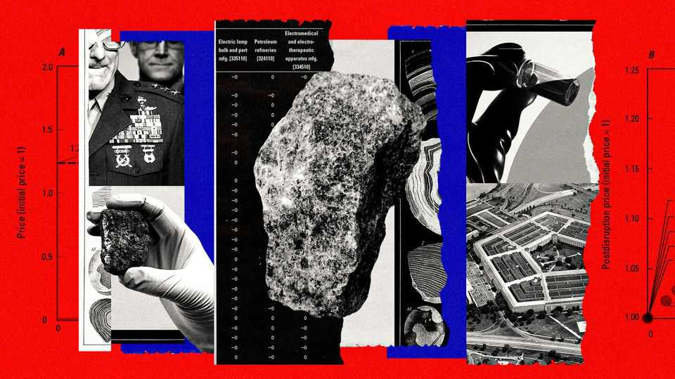
美国政府还向洛比托走廊（Lobito Corridor）投资了5.53亿美元，这条铁路连接刚果铜带与安哥拉大西洋海岸，旨在加快矿产运往美国的速度。2月，由美国政府参与的奥里昂CMC财团同意收购刚果唯一由西方控制的铜钴矿场40%的股份。美国正急切地在全球范围内寻找其认定为关键性矿产资源，试图打破中国对这些资源全球供应的垄断。特朗普政府已与从阿根廷到乌兹别克斯坦的20多个国家签署了以矿产为主题的合作伙伴协议。美国近期在乌克兰、委内瑞拉、格陵兰等地区的每项重大地缘政治举措，都在一定程度上以这些国家蕴藏的矿产资源为依据。一位矿业高管表示，他几乎每月都会在世界各地遇到总统幕僚。■
美国政府支持数十个矿业项目，承诺建立巨型储备，试图设定价格下限以保护西方矿山免受中国倾销冲击。TechMet公司高管布莱恩·门内尔（Brian Menell）表示，这标志着自冷战初期以来，政府对金属市场干预程度前所未有的新举措——一种更具侵略性、创新性和交易导向的策略。“这就像我们这一代人的太空竞赛，”Appian Capital私募基金的迈克尔·谢尔布（Michael Scherb）表示。这场竞赛的领头羊十分明确。中国是全球多数关键矿产的最大开采国和主导精炼国（见图表1）。该类矿产涵盖约30至60种金属，对计算、电气化、航空航天及国防等现代富裕经济体支柱产业至关重要。■
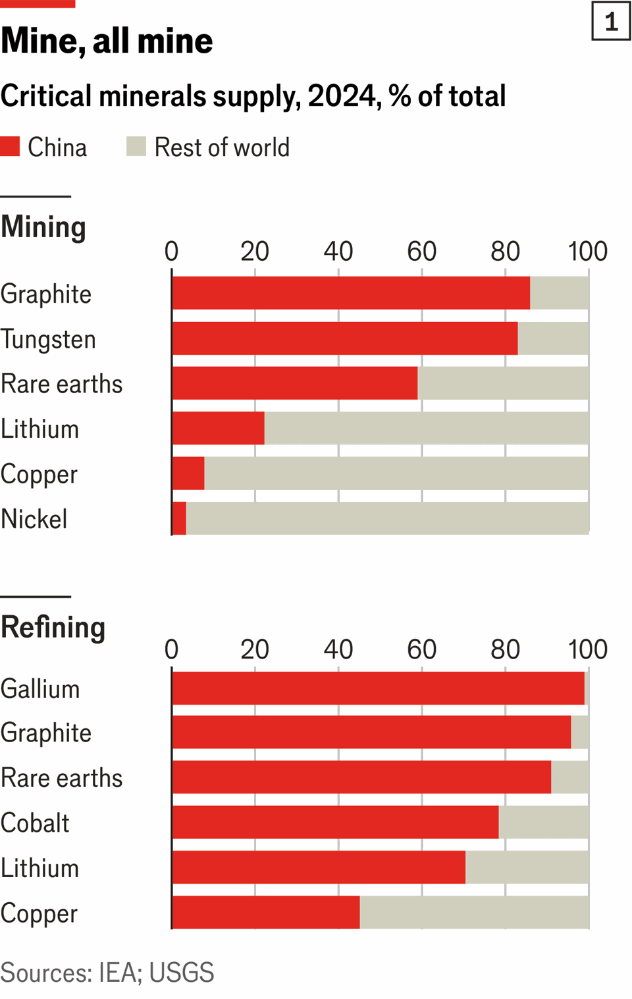
文章将铜等常见金属（2025年产量达2900万吨）与重稀土等小众资源混为一谈（部分重稀土年产量仅数十吨），后者被用于iPhone、数据中心、手术激光器和军事技术。中国对众多关键金属的控制赋予其对经济和军事对手的巨大影响力，并且中国正积极利用这种影响力。去年4月，中国限制出口七种最珍贵的稀土。随着短缺风险逼近，F-35战斗机、导弹、无人机、雷达和电动机的供应链面临断裂风险。欧洲和亚洲的汽车制造商及其他众多企业均受到冲击。打击如此迅速且剧烈，美国总统唐纳德·特朗普迅速削减了他钟爱的对华关税，以促成贸易战争的暂时停火。■
中国官员还利用新的出口许可证要求，从西方制造商处获取详细的技术专有信息。中国至今仍对从锑到钨的十几种矿物出口实施严格限制，大幅推高其成本（见图表2）。特朗普政府因这段经历而受到打击，决定效仿其认为是中国崛起的关键因素：对大宗商品市场的强力干预。要理解为何美国及许多其他国家对自由市场解决这一问题缺乏信心，首先需了解他们如何诊断问题。1987年邓小平曾宣称“中东有石油，中国有稀土”，将金属资源主导地位定义为战略资源。
自四十年前以来，中国通过向优先矿场和冶炼厂提供大量公共资金和低成本贷款，在多种金属领域建立了近垄断地位，同时将生产置于工人安全和环境安全之上。中国还利用其市场影响力打压竞争对手，通过倾销特定金属压低价格，迫使现有矿场退出市场或让新项目搁置。低成本的中国稀土曾导致美国加州山景矿（Mountain Pass）——曾是全球最大稀土矿——于2002年关闭（有毒泄漏清理和更严格的环保法规加剧了其竞争劣势）。该矿随后在新美国所有者手中重新开放，但在许多其他案例中，困境资产最终落入了中国手中。■
上世纪初，随着锂价飙升、新项目激增，中国生产商扩大生产直至价格暴跌，导致西方矿山陷入困境，而中国公司则趁机收购了部分矿山，从马里到墨西哥均有涉及。特朗普政府的强力干预涉及多个机构的混杂行动。其中最为活跃的是被重新定位的美国进出口银行（EXIM），该机构曾用于支持拜登政府的绿色项目。能源与国防部门以及美国国际开发金融公司（DFC）也在大量投入资金。前美国国家安全委员会黄金矿商大卫·科普利正协调这场行动。■
这场行动范围异常广泛，可能涵盖美国地质调查局（USGS）所标记的60种关键矿物——包括铝、铅和锌等储量丰富且广泛回收的金属。值得注意的是，该行动更侧重于从地下开采元素，而非金属冶炼领域，而中国在金属冶炼领域占据主导地位。“他们正在逐步覆盖整个元素周期表，”一位矿业高管表示。官员们倾向于支持接近投产或具备扩张潜力的项目。“时间并不站在我们这边，”一位官员说道。该行动的目标不仅是保护国防工业免受中国影响，还包括民用领域。特朗普政府正通过三项主要的中央计划手段使项目更具竞争力。第一项措施直接源自中国模式：通过贷款和直接投资补贴新矿的前期成本，同时鼓励私人贷款机构提供资金。■
自10月以来，美国国防部已向八个采矿和精炼项目注资28亿美元，重点偏向中国曾一度停止出口的金属，如镓和锗。过去一年来，美国出口管理银行（EXIM）已向关键矿产项目发放150亿美元的贷款意向书（表明其贷款意向），包括4.55亿美元用于美国稀土项目、3.5亿美元用于澳大利亚的钴和镍项目。能源部已批准70亿美元贷款用于国内石墨、锂和钾盐项目。DFC负责人本·布莱克表示，该机构已在全球最战略地区部署了股权和债务投资。DFC已为乌克兰关键矿产项目提供种子资金，并参与了奥瑞恩CMC向刚果注入18亿美元资金的三分之一。目前正考虑对哈萨克斯坦钨矿投资7亿美元。■
为确保项目储备充足，政府正签署协议，给予美国企业优先获得海外矿产投资机会。已与外国政府签署21项双边协议，并完成另外17项谈判。在某些情况下，融资附带新条件，即极少或不向中国出口产出。《经济学人》获悉，美国政府近期向海外某矿山提供的大额贷款最初曾因特朗普政府希望其停止向中国出口而被延迟。在非洲，援助与政府同意签署矿产开发协议挂钩。■
美国的第二项举措是确保从矿商处采购部分资源，通过名为Project Vault的国家矿物储备计划，以支持民用工业。（美国国防部已为军事用途储备了少量材料。）这一计划借鉴了美国50年前建立的4.15亿桶战略石油储备，将资助一批精选商品交易商采购全部60种关键矿物。该计划由EXIM提供的100亿美元贷款和20亿美元私人资本共同资助。目标是覆盖各类金属几周至数月的需求，某些金属如钇（用于喷气发动机等重要设备）的储备量可达一年。企业需预先支付费用并承诺以固定价格采购金属，危机发生时可获得储备库的使用权。■
超过十余家企业，包括通用汽车、波音、谷歌和GE Vernova，已表示愿意加入。第三项措施是维持价格下限，以确保若中国向市场倾销某种矿产，矿商不会因此破产。特朗普政府于去年七月启动了其首个（截至目前唯一）此类计划，作为与MP Materials的公私合作项目，后者在德克萨斯州运营着一家稀土冶炼厂。该计划设定钕镨氧化物（NdPr）的十年期价格下限：若MP以每公斤低于110美元的价格出售，五角大楼将补足差额。（五角大楼还承诺，在该工厂运营的前十年内，将采购MP新计划工厂生产的全部稀土磁体。）此后，美国已向盟友提出实施价格下限的方案。
2月，美国国务院在华盛顿举办了“矿物部长级会议”，54个国家（中国未受邀参加）出席。美国提议成立一个“矿物俱乐部”，称此举将“重塑全球市场”。对于某些矿产，集团内部的生产国在向俱乐部内企业销售时将获得价格下限保障。当交易价格低于该下限时，由成员国资助的基金将向生产者补足差额。来自俱乐部外的进口（即中国）将面临关税，使最终消费成本达到该下限。美国已要求大约30个国家在3月前提交承诺函。与此同时，美国正与欧盟、日本和墨西哥就矿物合作展开磋商，可能涉及价格下限机制。西方盟友与美国目标相似，但推进力度不那么积极。■
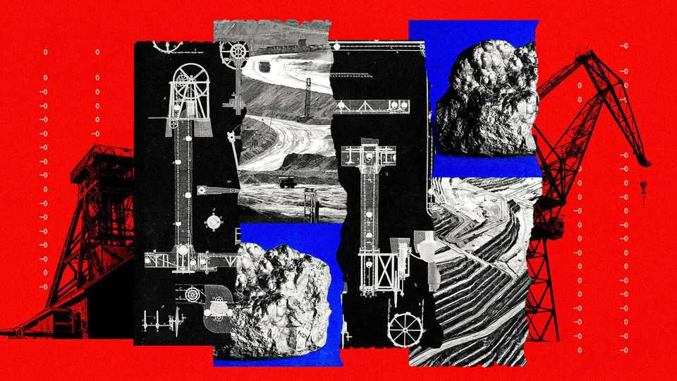
欧盟设定了减少中国进口、加快新矿开采许可审批的目标，并与智利、纳米比亚等国签署了合作协定。但欧盟投入的资金却寥寥无几——仅在34种矿物领域投入了30亿欧元（约合35亿美元）——而它接触的国家表示，欧盟要求确保供应，却几乎未提供相应回报。澳大利亚和加拿大在相关领域的投入略高于欧洲，但主要集中在本国。日本则是最为积极的国家，早在2010年就曾因与中国在岛屿争端中发生冲突，遭遇中国对稀土出口的非正式禁令。当时日本通过在海外矿山中收购少数股权换取稳定的供应（同时大幅扩充了关键金属储备）。日本资源安全保障机构JOGMEC的高管表示，目前日本正“积极”增加投资，并“承担更多风险”。■
但他们对价格下限并不热衷，认为“自由市场”才是“长期成功”的“必要条件”。一些矿商也对价格下限及其他干预措施感到不安。“我们不喜欢干预市场，”一位高管表示。前必和必拓集团（BHP）首席经济学家霍华·麦凯（Huw McKay）指出，那些在没有政府支持的情况下壮大起来的既有企业，对新进入者挤占市场感到不满。大多数全球矿业公司近年来选择收缩业务，而非在遥远国家进行高风险投资。曾是刚果最大私人投资者的弗里波特-麦肯纳公司（Freeport-McMoRan）于2020年将其在刚果的最后一个项目出售给中国公司。最明显的受益者很可能是那些规模较小、否则难以融资的矿业公司。■
Guardian金属资源公司（Guardian Metal Resources）计划开采钨——一种美国自2015年以来未实现商业性生产的金属——于7月获得美国国防部资助。公司总裁奥利弗·弗赖森（Oliver Friesen）表示，这笔资助帮助其吸引私人资本，从而加速工程研究。目前该公司已在内华达州矿区部署了四台钻探设备。美国能否确保所需矿产供应？多位专家担忧政府采取的是分散式策略，而非聚焦于最关键矿产（参见图表3）。另一问题是，尽管总体资金规模庞大，但对单个项目的投入却微不足道：EXIM的支票金额通常为数百万或数千万美元——对于开发成本高达数十亿美元的矿场而言，这不过是杯水车薪。更大的风险是投入大量资金却收效甚微。全球并不缺乏关键矿产项目，但其中绝大多数恐怕难以盈利。■
腐败机会泛滥，一个以裙带资本主义著称的政府正向以吸引投机者和骗子闻名的行业大肆发放利益。一位国务院官员指出，特拉华州注册的非美国公司数量上升，该州对披露要求极少，这些公司正积极推销采矿项目。刚果一些人对Virtus Minerals公司表示质疑，该公司由前士兵和情报官员领导，于2月同意收购一家陷入困境的刚果矿场，但对其运营能力存疑。1月政府宣布计划为得克萨斯州的Round Top稀土项目提供16亿美元资金支持，其赞助商USA Rare Earth的股价随之飙升。该矿场自1980年代起便被多次宣传开发，但始终未能成功。美国唯一的价格下限试验显然存在明显风险。■
MP Materials几乎没有动力为NdPr（钕镨）争取更好的价格，因为美国政府必须将任何获得的价格补足至每公斤110美元。公司季度财报显示，在9月前三个月（价格下限实施前）其平均售价为每公斤59美元。同期离开中国的NdPr每公斤售价为78美元。美国的价格下限机制也会面临类似问题。美国贸易代表Jamieson Greer向《经济学人》坚称仍值得推进该计划。“我宁愿从与我战略上不一致的国家获得高效生产，也不愿从一般与我立场一致的市场经济体获得低效生产。”但中国还存在该机制未考虑的另一问题：多数原材料必须运往中国进行精炼，因此无法摆脱中国的影响。■
此外，中国还可能将精炼金属转售给其他买家，从而挫败该组织的初衷。建立民用储备同样充满挑战。石油储备之所以可行，是因为其涉及单一商品，且可在本国提炼。囤积金属则更为复杂。储存矿石需要大量空间，且在没有国内冶炼厂加工的情况下几乎毫无意义。精炼金属体积更小，但也不易流通。铜应以粉末、线材还是条状储存？美国许多针对矿业的干预措施恐怕将被弱化、搁置或彻底流产。市场对此持怀疑态度：美国的表态并未引发金属价格明显波动。“没人知道接下来会发生什么，”Argus媒体公司（Argus Media）的埃莉·萨克拉特瓦拉（Ellie Saklatvala）表示。■
中国矿业公司似乎毫不在意，仍在继续收购海外资产。即便特朗普政府的诸多举措中许多能取得成效，其政策对中国的控制力在炼油领域仍显得力不从心。政府对大宗商品市场的干预可能给纳税人带来高昂成本，同时扭曲价格信号，可能抑制创新企业的进入。许多生产商除担心中国的报复外，还将担忧政治风向的转变，这种转变可能在今年国会或2028年白宫大选中发生。美国在中央计划矿业领域的实验最大风险在于，其成败取决于中央规划者——总统的个人意志。■
§009 支持允许16岁以下未成年人继续使用社交媒体 书信原题：In favour of allowing under-16s to continue using social media · 板块：Letters · 栏目：读者来信
）。您承认社交媒体对部分儿童造成伤害的证据日益增长，同时指出相关证据尚存争议。
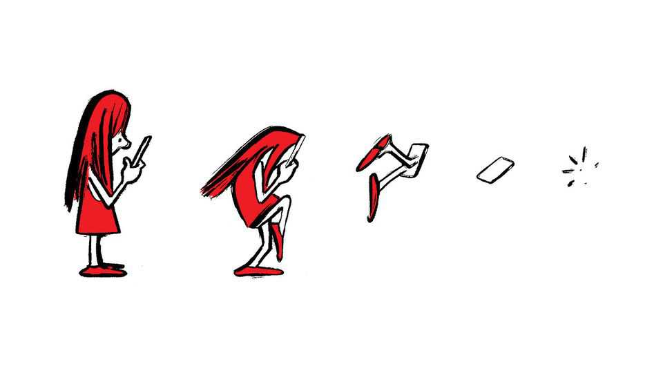
然而你暗示，在缺乏普遍损害的充分证据时，政策制定者应避免行动。这并非审慎社会管理儿童风险的方式。公共政策通常基于对有意义少数群体的可信伤害证据，尤其在潜在伤害暴露范围接近普遍的情况下。我们不会等待普遍证明才设定饮酒、驾驶或赌博的年龄限制。也不会因执行不完美而放弃监管。此类措施传递规范、支持家长并塑造行为。你指出禁令难以定义和执行。困难并非不作为的理由。政策制定者在金融、制药等领域常应对复杂性。当广泛使用的消费品对儿童构成可信风险时，监管机构不会等待完美证据，而是限制或撤回产品直至安全可证明。■
限制未成年人接触社交媒体仅能“延后”其必然接触的论点同样缺乏说服力。年龄限制的存在是因为成熟度至关重要。12岁与16岁的孩子在冲动控制和抵御社交压力方面存在差异。延后给予访问权限可使风险与更强的管理能力相匹配。问题不在于社交媒体是否有好处；很少有技术是完全有害的。关键在于，专为激发发育中心智参与度而设计的产品，是否应比玩具、药品或酒精拥有更少的监管措施。当前平台应在证明其设计安全之前，从年轻用户手中撤出。Daisy Greenwell（戴西·格林威尔）Alexa Varah Andy Cockburn（亚历克萨·瓦拉、安迪·考克伯恩）Smartphone Free Childhood（智能手机自由童年）伦敦 你低估了对16岁以下群体实施社交媒体禁令的反效果。■
发育中的大脑并非被动接收信息，而是主动寻求社会复杂性以校准自身。青少年被这些平台吸引并非因为他们容易被骗，而是因为他们正在做青春期认知本应完成的事：搜寻不可预测的社会信号，从而构建对世界的运作模型。禁止青少年使用社交媒体无法遏制这种本能，只会将这种驱动力转移到监管更弱的领域，更糟的是，这会制造断崖效应。16岁青少年首次接触算法推荐的冲击，如同21岁成年人首次接触酒精一般。这种延迟且剧烈的暴露本身就是问题所在。允许青少年在文化框架内学习饮酒的国家，酗酒危机更少。同样的逻辑也适用于屏幕。这并不意味着平台毫无责任。
无限滚动、自动播放和最大化用户参与度的推荐算法，旨在利用青少年强烈的好奇心和探索欲。解决之道并非将青少年拒之门外，而是重新调整这些功能设计——减缓信息流速、赋予用户更多对内容的控制权、在关键环节设置阻力——让年轻的大脑得以从数字复杂性中学习，而非被其淹没。更深层的讽刺在于，那些呼吁禁令的成年人，恰恰在孩子身上看到了他们自己所恐惧的：对未知环境的僵化焦虑反应，而非耐心重塑环境的持续努力。皮耶路易吉·萨科，生物行为经济学教授，意大利乌迪内大学（Università G. d’Annunzio）切蒂尔分校
澳大利亚禁止未成年人使用社交媒体的禁令之所以有其合理性，一个重要论点在于，如同酒精和烟草一样，设立明确界限能建立一个具有全国统一标准的制度，即使执行不力也能产生实际效果。这种国家标准划出了界线，赋予家长更多话语权，也开启了亟需的全国性讨论。诚然，制度中难免存在漏洞，也难以做到完美，但正如对未成年人的酒精和烟草管控一样，这种制度至少能对多数青少年产生实质性影响。你提到的VPN绕过手段使用率低迷、社交网络规模缩小等现象，都是积极信号。在青少年心理健康状况持续恶化、焦虑情绪日益上升的背景下，澳大利亚的社交媒体禁令及其引发的更广泛变革动力，或许将成为影响下一代儿童的最重要立法举措。■
澳大利亚珀斯的A.J. Uchanski
我对于学术界在杰弗里·爱泼斯坦（Jeffrey Epstein）电子邮件往来中占据突出位置感到意外（“Inside Epstein’s Network”，2月14日）。我们辩称，您分析中存在两个样本选择偏差的因素。首先，学者们相较于电话和短信更倾向于使用电子邮件。其次，学术界可能与唐纳德·特朗普（Donald Trump）、埃胡德·巴拉克（Ehud Barak）、彼得·曼德尔森（Peter Mandelson）等人之间存在更多中间环节，因此我们的邮件更不容易被归类为“机密”。詹姆斯·劳奇（James Rauch）加州大学圣地亚哥分校经济学教授
在安图林·查恩维拉库尔（Anutin Charnvirakul）意外赢得泰国大选后，您正确指出了其民粹主义基础与所任命的技术官僚之间在经济政策上的张力（“Thailand’s conservatives win a shock big victory”，2月14日）。
正如你与日本的论点一致，那些在右翼民族主义浪潮中胜出的领导人最终若要实现可持续成果，必须从中间路线施政。安图林（Anutin）同样面临这一必然性。初步迹象显示，情况谨慎乐观。泰国2025年第四季度国内生产总值（GDP）同比增长2.5%，远超市场预期。其中很大程度归功于埃克尼提·尼提塔纳普拉萨斯（Dr Ekniti Nitithanprapas）担任财政部长期间的政策；其财政纪律已促使政府债券收益率出现适度下降。公共投资在当季激增13.3%，财政年度前三个季度的拨款进度达到18.7%，显著高于前一年的13%。然而结构性挑战依然存在。■
8.7%的出口增长掩盖了令人担忧的分化：计算机出口价值激增91%，但实际产量仅增长17%，引发对真正工业深化的担忧。轻工业和原材料持续收缩，受中国竞争挤压。安图林总理面临的真正考验是，他能否利用当前稀缺的政治资本——保守派多数席位、修宪授权以及专业经济团队——推进泰国长期搁置的结构性议程：财政紧缩、贸易自由化以及推动经济向价值链高端攀升。■
曼萨森博士，创新投资证券（泰国）首席经济研究分析师
我关注了您关于中国现场音乐产业复苏的文章（“享受繁荣时期”，2月14日）。
超过133,000名游客因粉丝在西施音乐节上“为独立乐队摇滚”而在诸暨市过夜。该音乐节确实吸引了大量游客，但同期在诸暨举办的王力宏系列演唱会也是吸引人群的重要因素。这一现象并未削弱您关于演唱会经济蓬勃发展的结论，反而进一步印证了这一趋势。演唱会经济的繁荣不仅源于独立音乐场景的扩张，更得益于主流流行偶像的庞大号召力。这两种力量共同推动了本地旅游业的复苏。Steven ZhouHangzhou, China 您准确描述了美国总统预算对科学可能产生的影响，以及国会为避免灾难性后果所采取的行动（“无脊椎动物的进化”，2月7日）。■
一个关键问题是，英国议会是否能够采取行动，避免类似英国科学领域的灾难重演。英国研究与创新署（UK Research and Innovation）首席执行官伊恩·查普曼爵士在一封公开信中指出，国家设施的运营成本及新设施的建设压力，可能使科学与技术设施委员会（STFC）的预算变得不可持续。因此，STFC需要在全部项目中大幅削减开支。由于STFC还资助粒子物理、天文学和核物理等领域的研究，其项目面临被严重削减的风险，以支付STFC代表整个英国研究与创新署（UKRI）社区运营的国家设施所存在的问题。■
英国的大学物理系以及可能因英国在大型强子对撞机、引力波探测、地基和太空望远镜等项目的世界领先研究而受到启发的数代学生，正依赖于政策方向的转变。希望科学、创新和技术特别委员会在2月3日对伊恩·斯通爵士的访谈能像美国国会一样有效。
——特威克姆大学物理系教授蒂姆·格什恩
我一直对公众对英国的看法如何影响投资者对经济的判断感到着迷（“人为制造的恐慌”，1月31日）。也许如果英国人更加乐观，世界也会以同样方式看待我们。一个良好的开端或许是乔治·奥威尔，他在1945年撰写了《为英国烹饪辩护》。
■
硬推的销售方式，你或许会这么想，但文章内容却致力于反驳关于英国美食声誉的不实之词。为何要关注那些乏味的湿漉漉食物，当真相其实藏在一份健康的英式烤肉、周末煎饼早餐、西国苹果酒、苏格兰威士忌，以及峰区任何烘焙食品中。正如奥威尔所说：“并非自然法则规定英格兰每家餐厅都必须是外国的或糟糕的，而英国公众自身更少忍耐的态度，将是改善的第一步。”阿比·欣斯-莱利（Abbie Hines-Lloyd）伦敦 “单收入家庭购房者衰退”（2月14日）一文中提到，多数美国人认为《辛普森一家》中呈现的单收入家庭购房模式不现实，鉴于生活成本高昂。该剧早在1997年的一集中已触及这一话题。
弗兰克·格里姆斯（Frank Grimes）是核电站的新员工，他造访辛普森一家的住所，惊叹于他们仅凭一份工资就能过上“宫殿”般的生活，而他作为单身汉却不得不在锻造厂打第二份夜班工，住在保龄球馆上方的单间。当被问及如何负担得起时，霍默回答：“我不知道，别问我经济是怎么运作的。” 明尼苏达州布卢明顿市
§010 现代化进程正使东南亚地区日益伊斯兰化原题：Modernisation is making South-East Asia more Islamic · 板块：Asia · 栏目：亚洲
东南亚各国政府曾担忧伊斯兰极端主义崛起，并采取果断措施成功遏制了其发展。如今，这一地区的两大穆斯林多数国家——马来西亚和印尼——正经历着不同的转变。伊斯兰教正通过政治、法律、消费文化和社交压力等和平方式彰显自身影响力。上月，印尼正式实施了一项新刑法，该法禁止婚前性行为，并扩大了亵渎和叛教罪的适用范围。■
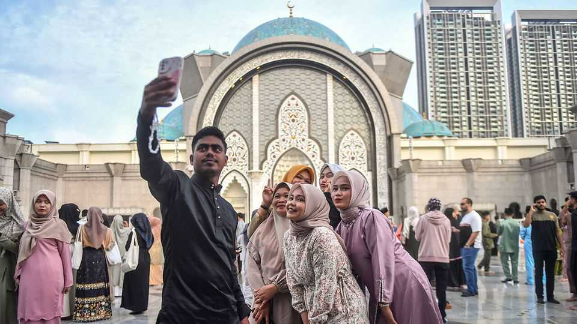
该代码也承认“任何现行法律”；这可能允许地方官员执行伊斯兰法（伊斯兰教法）中针对女性和少数群体的歧视性规定。数月前，8月，马来西亚登嘉楼州开始实施一项伊斯兰法条款，对未参加周五祈祷的穆斯林男性处以最高3000林吉特（约合770美元）罚款和最高两年监禁。就连伊朗或沙特阿拉伯也不惩罚逃避祈祷的人。两国都质疑现代化必然导致世俗化的假设。尽管经济取得进展，宗教信仰却在增强而非减弱。这与东亚和欧洲普遍观察到的经济发展与宗教信仰减弱相悖。一些自由派人士认为，教育、自由化和互联网普及必然推动社会向世俗价值观靠拢。■
东南亚穆斯林占多数的国家另有说法。伦敦国王学院的艾丽丝·埃文斯（Alice Evans）写道：“关键不在于个人受教育年限，而在于社区认为什么有声望。”虔诚如今被视为一种声望。这两个国家对伊斯兰教的实践方式截然不同。马来西亚将伊斯兰教视为国教，赋予各州对宗教事务的管辖权。各州维持不同的伊斯兰教法（sharia），由联邦伊斯兰发展部（JAKIM）统一协调。2026财年预算中，用于“伊斯兰发展”的资金达到创纪录的26亿林吉特（约合64.2亿美元）——是维持所有非穆斯林宗教场所的5000万林吉特的50倍。印尼则缺乏类似的中央机构。■
印尼的国教思想"潘查希拉"（Pancasila）禁止无神论，但保障伊斯兰教、基督教新教、天主教、佛教、印度教和儒家这六种官方认可宗教的信仰自由。以拥有逾10亿信徒的穆斯林组织"纳哈德拉图尔·乌勒马"（Nahdlatul Ulama）为代表的团体，倡导一种包容性的伊斯兰教，与当地传统相融合。这些组织在世界第三大民主国家运营学校、医院和大学，同时推广伊斯兰价值观与民主相辅相成的理念。印尼伊斯兰教吸收了数百年的印度教-佛教实践、万物有灵信仰及多元本土文化。这种包容性至今仍可见。2月17日至19日，数百万印尼人庆祝斋月、四旬斋或农历新年。然而在两国，虔诚度均呈上升趋势。分歧在于这种虔诚如何被引导。■
伊斯兰教推动马来西亚政治竞争。执政党与反对党争相争取马来族选民，后者占选民总数的60%，根据宪法，他们至少名义上须为穆斯林。“双方都在试图比对方更伊斯兰化”，马来西亚理科大学的阿兹米尔·泰伊布（Azmil Tayeb）表示。这种动态使马来西亚“变得更加保守和伊斯兰化”。到2023年，强硬派伊斯兰政党伊斯兰教法党（PAS）已掌控四个州，并成为联邦议会最大单一政党，尽管仍处于反对党地位。马来西亚的双轨法律体系名义上将民事法庭与伊斯兰教法法庭（处理穆斯林个人及宗教事务）分开。但新加坡南洋理工大学南洋研究院的诺尔沙赫里尔·萨特（Norshahril Saat）指出，宗教当局实际上正越来越多地介入民事领域。■
紧张局势在穆斯林与非穆斯林生活交汇的领域尤为明显，例如监护权纠纷和宗教皈依等。5月，马来西亚上诉法院驳回了一名男子的上诉，该男子曾从基督教转信伊斯兰教以与穆斯林结婚。离婚后他试图恢复基督教信仰，但法院裁定伊斯兰教法法官拥有管辖权。“这类案件在马来西亚各地都在发生，”阿兹米先生表示。社交媒体塑造着人们理解与实践伊斯兰教的方式。马来亚大学的阿旺·阿zman指出，TikTok、Instagram和YouTube已成为宗教传教、辩论与评判的平台。TikTok帮助伊斯兰行动阵线（PAS）在上次选举中扩大了选票。其他趋势包括名人传教士和“微传教”——即短小精悍的宗教视频。■
尽管印尼也经历了类似的宗教复兴，但其并未走上马来西亚通过国家强制推行宗教统一的道路。印尼女性佩戴头巾的比例从1990年代末的约5%飙升至如今的约75%，但这一转变主要源于社会压力和自愿行为，而非法律强制。虔诚的穆斯林意见领袖拥有庞大的网络受众，常向数百万民众推广保守的宗教解释。然而在新刑法之外，最常被提及的所谓宗教不容忍案例仍是2017年雅加达前市长阿霍克（Basuki Tjahaja Purnama，昵称Ahok）因亵渎罪被判两年监禁——这一判决普遍被视为政治与族群竞争的结果，而非单纯的宗教敌意。除了传播思想，社交媒体还具备推动当局采取行动的力量。■
在马来西亚，日常选择一旦被网络放大，便可能演变为国家层面的关注。1月16日，一名尊巴教练因佩戴头巾并穿着未遮盖膝盖的服装跳起舞蹈而引发网络热议。她事后道歉，但马来西亚雪兰莪州的伊斯兰部门却展开调查，质疑她是否“损害了伊斯兰形象”。年初早些时候，一家支持同性权益的非政府组织因全国范围内的网络声讨，取消了一场私人野奢露营活动。在马来西亚，同性恋行为属于犯罪，可处鞭刑及最高20年监禁。2024年，一家杂货连锁店KK Super Mart的老板因三间门店出现印有“Allah”字样的袜子，被指控意图伤害穆斯林感情。尽管“Allah”在阿拉伯语和马来语中仅指“神”，但马来西亚内政部2013年已声明该词应专属于穆斯林。■
社交媒体上的愤怒用户将这些袜子视为冒犯。对伊斯兰主义政客而言，这种愤怒情绪是宝贵的燃料。马来西亚未来或将看到更多类似现象。印尼政界迄今尚未将宗教作为工具，但维护宗教多元主义需要持续保持警惕。■
§011 印度粉红之城斋普尔的求救信号 亚洲原题：SOS for India’s Pink City · 板块：Asia · 栏目：亚洲
步入斋普尔老城区，你能在一条巷子听见老式印刷机的哒哒声，下一条巷子则传来凿子敲击大理石神像的叮当声。这座围城的每条巷子都有独特的声景，由传统贸易种姓群体划分。但那声巨响呢？大概率是某座传统宅邸（haveli）正在被夷为平地。联合国教科文组织（UNESCO）于2019年将斋普尔古城——以其暗粉色外墙和精致阳台闻名——列为世界文化遗产。如今该机构要求地方当局在年底前证明其正在采取足够措施保护这一遗产。■
否则它将加入德累斯顿、利物浦和阿曼羚羊保护区的行列——这三地是唯一曾获世界遗产称号后又失去的地点。1991年时，这里约有1200座哈维利（haveli），如今只剩约800座。其余建筑或被拆除，或因腐败、冷漠和资金匮乏的三重打击被翻修得面目全非。色彩标识也已失效。斋浦尔粉（Jaipur pink）自1876年起便笼罩着这座城市，当时拉贾（Maharaja）拉姆辛格（Ram Singh）为迎接英国皇室访问，将全城涂上特制的赭石色。其他颜色被禁止使用。但污染和杂乱无章的涂色已将斋浦尔的视觉和谐破坏成一堆历史不准确的色调，其中一些甚至接近危险的橙色。这不仅仅是颜色的问题。
超过60万人挤过腐烂垃圾堆，钻过垂挂的电线丛林，吸入敞开排水沟的废气。这座老城原本只为容纳十分之一的人口而建，如今却已人满为患。文化遗产保护似乎总显得颇为精英主义，而UNESCO的标签虽带来名声却未带来资金。然而，UNESCO的最后通牒或许反而成为这座城墙之城最好的转机。被列入“濒危遗产”临时名单，或将最终加速急需的联合国资金到位。而正式失去世界遗产标签的前景，也可能促使当局严格执行文化遗产法规，并与haveli（传统住宅）主人坦诚沟通，讨论如何保护这些资产——例如将其改造成文化遗产酒店。政客们或许并不在意监管粉墙的正确粉红色调。■
但他们无疑渴望随之而来的地位。 ■ 及时掌握我们的印度报道，请订阅我们的免费周报Essential India。
§012 亚洲原题：Piles pressure on Japan after Takaichi Sanae’s triumph · 板块：Asia · 栏目：亚洲
中国与日本有着长期的摩擦历史。2010年一名醉酒的中国渔船船长被逮捕导致关系恶化，到2014年才开始和解进程。两国如今陷入另一场僵局，且迹象显示短期内难以结束：2月24日中国宣布对至少20家日本企业实施稀土出口限制，进一步向新任首相田中真纪子施压（见图）。这场最新争端始于田中真纪子10月上任后。
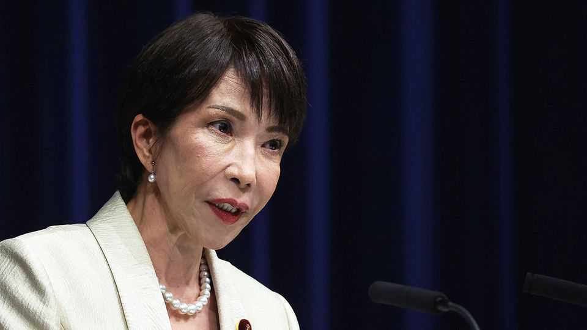
中国从一开始就表现出不满：习近平甚至未发送一封敷衍的贺信，打破了外交惯例。次月议会期间，麻生太郎（Takaichi）超越日本政府一贯模糊的涉台立场，暗示日本将在潜在危机中发挥作用。大阪中国总领事则反唇相讥，称日本领导人“肮脏的脖子”应被“砍断”。中国随即对旅游和贸易实施限制。对麻生太郎而言，外交紧张局势反而成为国内政治的助力。她拒绝屈服于中国压力，强化了其作为能在危险世界中捍卫日本的领导人的形象，助力其执政的自由民主党（LDP）在2月8日的众议院选举中取得历史性胜利。■
麻生太郎希望利用新获得的绝对多数席位，加速日本加强军力的进程，这主要是为了应对中国日益增长的军事实力。本周，自民党最终通过一项提案，解除长期存在的致命武器出口禁令，旨在重启国防产业。中国同样不会退让。她与台湾的关联引发的不满远比她在国会的言论更为深远。日本首相与台湾亲民进党（DPP）关系密切；上任后，台湾总统赖清德（Lai Ching-te）——北京眼中的麻烦人物——曾发祝贺消息称其为“台湾的坚定朋友”。
中国试图将高市早苗描绘成危险的民族主义者：例如，本月在慕尼黑安全会议上的讲话中，中国外长王毅警告称日本仍被“军国主义幽灵”所困扰。然而这些说法并未说服许多中国以外的观察者。经济胁迫的威力将更为显著。中国占日本总贸易额的20%，占其外国游客的20%。中国政府呼吁本国国民停止前往日本旅游；今年春节假期期间，中日之间的航班流量同比减少了一半。即便经过多年的努力分散供应来源，日本仍需从中国进口约70%的稀土。长期供应中断将波及日本整个工业体系。■
日本贸易协会负责人称，中国对日本的出口限制“是对全球供应链的挑战”。迄今为止，中国的贸易限制措施仍较为克制。中国政府未鼓励对日本商品的广泛抵制。（2010年代初关系紧张时期，中国抗议者曾纵火烧毁日本汽车经销商门店。）最新一轮稀土禁令仅针对20家日本企业，主要涉及国防领域；另有20家企业，包括汽车制造商，被列入观察名单。双方迄今均试图控制局势升级的风险。本月日本扣留了一名拒绝接受检查的中国渔船船长，次日该船长被释放。然而中国海警船去年在争议的尖阁诸岛（中国称钓鱼岛）附近巡逻的天数创下纪录，达356天。■
本周，日本宣布计划首次在冲绳岛（Yonaguni）部署导弹。紧张局势持续的时间越长，爆发冲突的风险就越高。■
§013 谷歌地图再推韩国数据升级方案原题：Google Maps makes another pitch for better South Korean data · 板块：Asia · 栏目：亚洲
谷歌地图希望填补其导航应用中的数据空白。在这家科技巨头的导航应用中，韩国是最大的缺口。距离该服务推出近二十年后，即便基本的步行或驾车路线指引仍无法获取。韩国政府长期以来拒绝谷歌获取详细地图数据的请求，理由是国家安全担忧。这种立场帮助本土科技企业，如韩国最常用的搜索引擎Naver，保持了韩国数字地图服务的主导地位。本月谷歌再次提交了获取更高精度地图数据的申请。这次韩国政府需要应对更复杂的局面。 ■
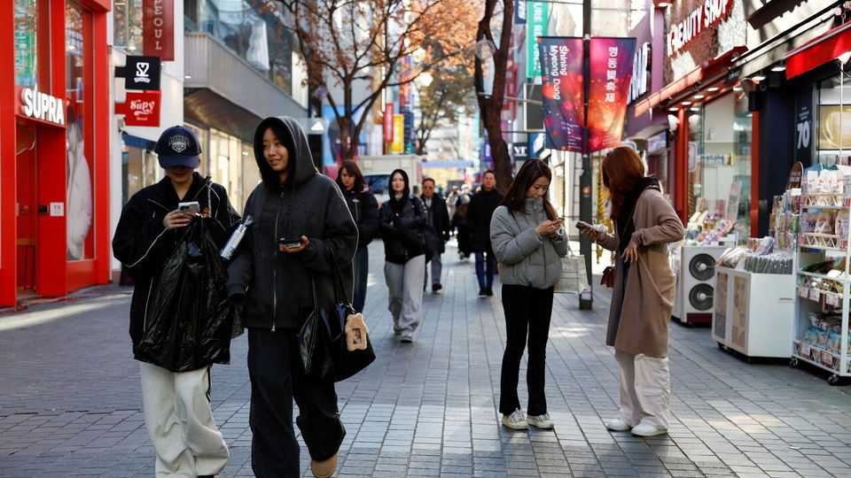
作为去年与美国达成的投资协议的一部分，韩国承诺协助美国企业实现“跨境数据传输，包括位置、再保险和个人数据”——这明显指向与谷歌及其他科技公司持续的纠纷。唐纳德·特朗普已威胁要因韩国未能迅速批准协议而重新加征关税。谷歌希望获得1:5,000比例尺的地图。韩国测绘局拥有此类地图，但将其出口至海外服务器需经政府批准。鉴于北方核武装邻国的不可预测性，韩国对公开军事设施等敏感地点的坐标及高分辨率卫星图像持保留态度。这迫使谷歌不得不以高昂费用从本地导航服务TMap Mobility获取基础地图数据。■
本地合作伙伴提供的地图已按所需比例绘制，但已删除敏感位置信息；然而，科技巨头希望借助多个数据中心处理地图数据。若地图仅存于韩国境内的服务器，远距离用户将面临浏览延迟，谷歌表示。公司坚持保持其服务的全球性。本地企业担心向谷歌开放数据访问权限。据韩国空间信息协会调查，90%的受访企业反对这一举措。反对意见包括担忧韩国成为先进技术试验场，以及谷歌等科技巨头在该国企业税率偏低。真正的问题在于保护主义情绪，担心本土企业将失去竞争优势。■
谷歌对API的收费也高于本地竞争对手，使用谷歌地图数据的小型企业可能面临高昂费用，延世大学的莫炯훈认为。截至目前，纳维仍保持竞争力。去年谷歌仅占韩国搜索流量的约30%，而全球占比达90%。尽管仅支持四种语言（相比之下谷歌支持80多种），纳维的地图包含一项受欢迎的功能，能提供比谷歌更准确的韩国大部分场所的众包信息。至于如何前往这些地点，两家公司或许将展开激烈竞争。■
§014 印度的VIP文化失控了原题：India’s VIP culture is out of control · 板块：Asia · 栏目：亚洲
在权力的光环下，政客们很容易忘记自己是公仆。但纳伦德拉·莫迪（Narendra Modi）并非如此。印度总理始终强调政府存在的目的是为人民服务。2014年他步入全国政坛时，曾宣称自己不是国家总理，而是“总务长官”。此后，内政部长最近表示，“莫迪政府自成立以来，始终代表服务而非权力”，他补充道，“总务长官为民众日夜操劳，全年无休”。为彰显承诺，政府将莫迪居住的街道名称从“赛马场路”改为“公益之路”■
去年，该国将各邦州长的官方居所名称从拉贾巴万（Government House）改为洛克巴万（People's House）。2月13日，莫迪总理 inaugurated 了一处新的总理办公室，命名为“Seva Tirth”（神圣服务之地）。建筑外墙悬挂着一行铭文，意为“公民如同神明”。然而，印度公民或许在仅仅三天后便感到远非神明——当天下午，莫迪总理亲临德里举行人工智能影响峰会（AI Impact Summit），这是一场为期五天的会议。为迎接他的到来，会议中心部分区域提前关闭，数千名与会者被驱逐出场，数小时后才被允许重返会场。人工智能竞赛普遍被视为美中两国之间的双雄对决，两国拥有最强大且最受欢迎的模型。■
印度是积极的采用者，但并非以创新者著称。峰会旨在通过向世界展示该国的现代面貌来改变这一印象。然而，数万名与会者看到的却是印度陈旧的“VIP文化”大肆展示。以活动的安排为例，普通访客不得不面对荒谬的限制清单，禁止携带从背包、笔记本电脑到洗手液和水瓶的一切物品。VIP则被直接放行。离场同样困难。在峰会某晚，通往会场的道路仅限VIP通行，普通民众被迫步行一英里寻找出租车和公共交通。德里市区中未受会场影响范围覆盖的居民也未能幸免，大片区域被封闭或限制，以方便VIP通行。
溢出效应让通勤者整周陷入交通瘫痪。德里机场航班出现延误。没有哪项公共基础设施的重要性能超越为VIP（重要人物）让路而被中断。印度本就拥堵的城市中，关键道路经常被封锁以保障公务人员通行。2024年大选期间莫迪总理访问孟买竞选时，当局曾关闭地铁线路及公交服务。去年德里发生爆炸事件后，遇难者家属投诉称他们被阻止进入医院探视亲人，而VIP却得以优先进入。这些行为有时带来的代价远超不便。去年印度北部一场大型宗教集会踩踏事件致至少37人死亡，目击者抱怨称他们被推入拥挤的区域，因为大量空间被预留给了VIP。
数月后，另一场宗教活动再次发生踩踏事件，朝圣者再次报告称，出口被VIP封锁，仅剩一个进出通道，至少可以说，再次导致了死亡人数的增加。在分裂的国家中，确保领导人的安全是一项严肃的工作，该国已因暗杀失去两位总理（一位在职，一位在竞选复职期间）。一些领导人，如莫迪总理，因其引发的狂热追随而需要防范粉丝的威胁。但这种特权根深蒂固且铺张浪费，横跨地理、政党及政府分支。只要拥有任何权力，就等于成为VIP。一些州长的车队堪比美国总统的车队，甚至普通部长也会获得警察护送，闯红灯并逼迫其他司机让路。VIP文化是地位的象征。
它遵循印度高度分层社会的一个古老原则：仆人与主人绝不能共用同一个杯子、同坐一张桌子、同经一扇门，或以任何方式显得平等。几个世纪以来，主人始终高高在上。印度公共“仆人”的天才之处在于逆转了这种等级制度。■ 订阅者可注册我们的“意见电报”，汇集了最佳的评论、专栏、客座文章和读者来信。
§015 如何在中国现代经济中致富原题：How to get rich in modern ChinaChina · 板块：China · 栏目：中国
龙年（2026年）始于2月17日，但对许多中国人而言，这一年并未如预期般蓬勃发展。房地产泡沫破裂与长期通缩已侵蚀民众的资产、收入与前景。作为中国人主要财富储存地的住宅房产，自2021年以来平均价值已缩水五分之一。工资增长乏力，青年失业率徘徊在17%左右。一些毕业生被迫在零工经济中从事不稳定工作，另一些人则选择主动躺平，而非寻找辛苦的正式工作。但在众人亏损的背景下，有一群人却实现了盈利。
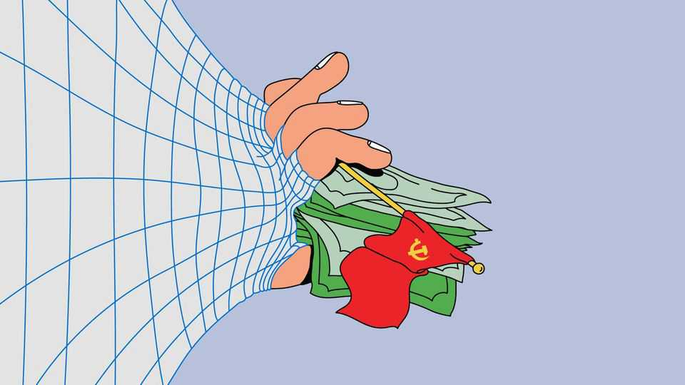
■
他们就是习近平主席所说的“弄潮儿”（nongchaoer），这是一个中文术语，指那些“乘风破浪”的人。如今这股浪潮正流向主导中国五年计划的战略技术领域，如人工智能和机器人技术（下一份五年计划将于三月发布，涵盖至2030年的时期）。这些弄潮儿聪明、年轻，有时出身普通家庭，他们不炫耀日益增长的财富（况且他们更倾向于选择国产电动车而非保时捷）。他们也不将官员视为需要规避的监管者，而是视其为最大的支持者。习近平主席在春节前夕公开会见了一群弄潮儿。这些乘风破浪者与过去的成功者有诸多不同，教育是其中之一。■
近几十年来，中国经济的崛起为有才华或幸运的人创造了多个机遇浪潮：从2000年代初的低端制造业，到2010年代电子商务的兴起，以及持续至2021年的房地产繁荣期。每个阶段都催生了各自领域的百万富翁和亿万富翁。在繁荣时期，甚至偏远小学院的毕业证书也能带来巨大机遇。2017年的一项调查显示，中国2000位最富有的企业家中，有一半人并无学位。但如今的新富阶层已属于精英群体。他们通常拥有理工科学位，来自中国40余所顶尖高校——俗称“985”高校——这些高校每年仅培养46万名毕业生（包括硕士和博士生），占全国1200万毕业生的不足4%。■
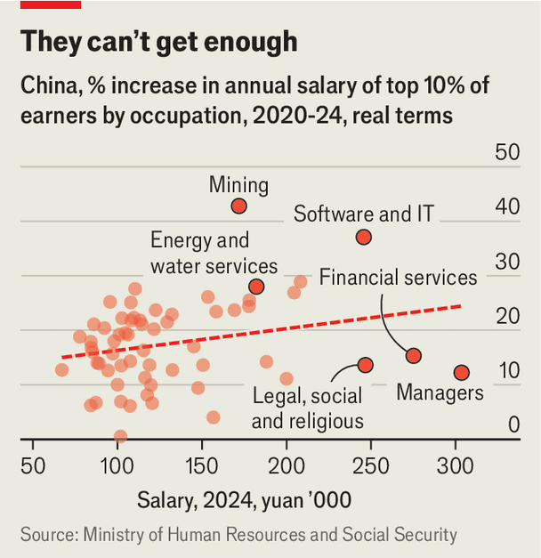
例如，习近平会见的年轻群体中包括张林峰，他共同创立了一家将人工智能应用于科学的公司；陈建宇，一家机器人公司的创始人；以及王赫，另一位专注于具身智能的机器人专家。他们都出生于1990年代，并毕业于“985”高校。中国过去经济机会曾分布在诸多领域，从关系网络到土地资源。如今机会主要流向能掌握技术的人，浙江大学（也是“985”高校）毕业生、3D打印机公司创始人李景元表示。政府数据显示，高薪职业正日益集中在科技领域的顶尖领域。尽管金融行业仍属高薪厚待，但过去几年因对银行家奖金的限制措施，薪资增长却十分缓慢（见图表）。律师行业则更不景气。■
但收入最高的十分之一软件工程师自2020年以来，实际薪资年均增长8%。在科技巨头企业间的人才争夺战中，最顶尖的工程师们获得了薪资上涨。一位北京某科技公司的人工智能研究员坦言，自己拥有的钱多到不知道如何支配（他大部分时间都在工作，而他的爱好——徒步旅行——很难花钱去享受）。中国AI明星企业DeepSeek提供的年薪超过140万元（约合20万美元），是普通白领的十倍。这些科技从业者多集中于少数几个地区：北京的亦庄科技园区、深圳这个南方电子制造中心，以及东部杭州这座运河纵横的城市。表面上看，他们的办公室模仿硅谷风格，配备豆袋、桌球和漫游机器人等设施。■
但差异在于政府的强势存在。墙上挂着来访中共党员干部的合影，以及地方政府颁发的表彰“模范企业”的奖状。中国科技行业不久前还曾遭受官方打压。2020年，阿里巴巴创始人马云曾公开批评监管机构以“过时的监管”扼杀创新，随后他淡出公众视野数月，官员们也叫停了其公司的一项首次公开募股计划。此后，中国对科技行业持续施压，监管机构将矛头指向从加密货币交易所到游戏开发者的各个领域。官员们更倾向于将最优秀的人才安排在国家需要以抗衡美国的战略性产业中。习近平主席曾呼吁科技工作者“培养为国效力的忠诚情怀”。■
非政府组织（nongchaoer）热衷于强调官员如何帮助而非阻碍他们。政策可能带来“不确定性”，但也创造了大量“确定性”，杭州一家人工智能智能眼镜及脑机接口公司创始人易浩翔（35岁）表示。该公司开发的脑机接口旨在治疗抑郁症（这两项技术均被政府列为国家战略重点）。地方官员补贴其研发成本、办公租金及赴海外会议的差旅费用。■
易中天称赞官员们通过抑制大学新专利竞标战来防止过度竞争。"政府是国家最稳定的势力，离政府越近，越能获得稳定"，32岁的傅德说道。他的公司每年向杭州政府销售约1000万元人民币的人工智能监控软件，用于实时监测道路和环境状况。这种国家主导的创新模式也存在诸多问题。中央政府官员根据自身判断设定技术优先级，地方官员则不惜烧钱扶持本地薄弱企业。而获得补贴的产业一旦失去支持，可能瞬间从繁荣跌入深渊。■
但对精明的创业者而言，只要顺势而为，资金便能不断从地方财政、国有公司和国家风险投资基金中涌出。仅在12月，中国中央政府就宣布设立一项1000亿元人民币的基金，用于投资初创企业。很难否认，这些国家主导的产业投资成果令人印象深刻。中国科技企业已在电动汽车、可再生能源、电信和人工智能等领域具备全球竞争力。然而，中国共产党对高科技产业的大胆押注，未必能惠及大多数中国工人。据高盛集团经济学家指出，自2014年以来，大型工业企业已裁减2300万个岗位。他们认为，自动化是主要原因。■
尽管如此，习近平似乎确信自己对中国发展的路径是正确的。“科技自立是将中国建设成为社会主义现代化强国的关键”，他向农工民主党（Nongchaoer Group）成员表示。一位成员后来对官方媒体称，“习近平与我们的‘亲切交流’进一步增强了我们的决心和使命感”。■ 订阅者可注册我们的新周刊《鼓楼》（Drum Tower），了解世界如何看待中国，以及中国如何看待世界。
§016 Anthropic称中国AI巨头是模仿者 中国 请重复原题：Anthropic says China’s AI tigers are copycats · 板块：China · 栏目：中国
美国顶尖人工智能实验室指责其中国竞争对手是无情的模仿者。本月，Anthropic和OpenAI各自披露了证据，显示领先的中国AI实验室非法使用美国模型进行训练。这两家公司指控中国研究人员积极“提炼”美国聊天机器人——通过输入提示来学习并模仿其回应。美国外交关系委员会的克里斯·麦奎尔表示：“中国实际上是在窃取我们最佳AI模型的参数，这些是地球上最宝贵的资产之一。”此类指控并非首次出现。 ■
OpenAI去年早些时候指责DeepSeek存在类似行为，当时这家中国实验室以发布R1模型震惊硅谷。此后，中国企业陆续推出在某些指标上可与美国聊天机器人相媲美的模型，仅需数周时间便能完成，且训练和运行成本更低。安泰洛（Anthropic）于2月23日披露，三家领先的中国公司曾秘密尝试模仿其聊天机器人，这解释了他们如何保持竞争力。美国实验室称，中国竞争对手利用“蒸馏攻击”以极低成本接近模型开发的前沿。近几个月来，AI实验室密切关注着竞争对手在自身产品上进行训练的动向。安泰洛的披露恰逢行业等待DeepSeek最新模型发布，该模型最快下周便可能面世。■
据路透社报道，特朗普政府认为DeepSeek在内蒙古的一家设施中使用英伟达的先进Blackwell芯片训练了该系统，这违反了出口管制规定。据称，DeepSeek正计划隐瞒其使用这些芯片的情况，可能将该系统的发布包装成中国推动人工智能供应链本土化的胜利。然而美国政府认为，该模型的先进能力很可能依赖于蒸馏技术。美国企业常用这种技术以低成本训练非前沿模型，尤其是免费的“开源权重”系统。但Anthropic称，使用其产品训练竞争对手模型，正如其指控的三家中国公司——DeepSeek、Moonshot和MiniMax——所做的那样，违反了其服务条款。Anthropic指控这三家公司累计创建了24,000个虚假账户，这些账户与该公司的模型互动超过16m次。■
相关企业尚未公开回应。谷歌旗下DeepMind表示，本月早些时候的一份报告中观察到其系统遭遇了“知识产权盗窃”，但未明确指认攻击来源。两家实验室均表示，过去一年内针对模型蒸馏的尝试愈发频繁。原因之一是蒸馏技术本身已变得更加强大。此前，AI实验室通过向聊天机器人输入海量网络爬取的文本数据来提升其性能，模型读取的文本越多，其表现越出色。但技术前沿已发生转变。如今，最先进的模型通过试错学习，反复尝试任务并仅强化有效方法。这消耗了中国芯片资源受限企业的有限算力。蒸馏技术能缓解这一问题。通过利用他人的计算资源生成此类“合成数据”，实验室可确保自身芯片专用于训练。
问题在于，美国实验室为创造数据本身就要耗费数十亿美元。他们雇佣人类专家——例如数学家——撰写分步解决方案以解决复杂问题，并为模型提供可学习的实例。与通过网络获得的分散知识不同，完成特定任务（如数学题或预订航班）所需的技能具有明确性和可提取性。模仿者可直接向模型提出任务并获取其解决方案，而无需经历大量试错过程。美国实验室在高失败率的训练技术上押下昂贵赌注。单次训练运行成本可达数十亿美元，而据摩根大通银行统计，企业计划在2030年前投入5万亿美元用于数据中心建设。这种巨额投入正面临竞争对手的挑战，这些对手实力接近却成本低廉。■
自DeepSeek发布R1版本以来，中国在开源模型市场的全球份额迅速增长，已超越美国，据麻省理工学院（MIT）波士顿分校研究人员称。美国实验室警告称，检测并阻止知识蒸馏技术在技术上存在难度，而中国方面日益复杂的手段更让这一工作雪上加霜。这些手段包括通过迂回路径引导在线流量以掩盖其来源，或分散任务至数千个账户。一位美国官员在接受《经济学人》采访时表示，“中国已出现小型企业组成的‘小作坊式产业’，专门提供协调的知识蒸馏活动，同时隐藏客户身份。”该官员称：“如果我们不解决这一问题，美国将无法实现开源领域的领导地位。” ■
一些中国AI研究者在线指出，那些利用他人知识产权训练模型的实验室指责他人是虚伪的。不过，Anthropic、OpenAI和Google DeepMind仍希望采取行动。美国政府或许可要求中国领导层在唐纳德·特朗普即将访华期间对这种行为进行整顿。但习近平政府采取行动的可能性微乎其微。麦奎尔（Mr McGuire）认为，美国可惩罚从事模型蒸馏的中国公司，例如将其从美国云服务商中剔除或收紧芯片管制。然而，特朗普似乎不愿采取任何可能破坏当前缓和局势的行动。目前，前沿实验室可能得习惯AI企业复制其研究成果。■ 订阅者可注册我们的新周报Drum Tower，了解世界如何看待中国，以及中国如何看待世界。
§017 中国原题：Mapping China’s holiday rush · 板块：China · 栏目：中国
每年春节的返乡潮，即“春运”，是中国文化中一个独特的时刻。许多人试图捕捉这种喧嚣的氛围。2010年上映的喜剧《旅途迷途》中，一位傲慢的商人李成恭（Li Chenggong）试图赶在春节前回到长沙老家。恶劣天气迫使他从原本预订的飞机头等舱改乘绿皮慢车。他被农民工挤得喘不过气，婴儿啼哭、乘客进食、行李翻倒的喧闹声此起彼伏。最终他遇到了一位随和的奶业工人，两人不情愿地开启了一段冒险旅程。
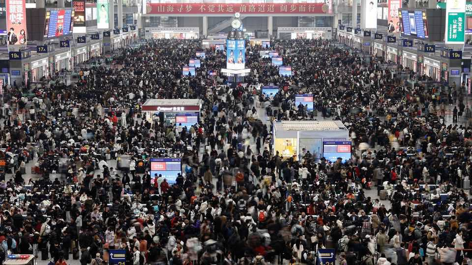
此类场景曾是数百万民众返乡团聚的生动写照。但近年来春运的变化则折射出中国社会的新趋势。今年春节假期延长至2月15日至23日，比往常多一天，经济学人观察到人们往返度假目的地的盛况。我们的数据测算基于目前可获取的信息，未来几周将陆续公布更多数据。尽管中国人口持续减少，但出游高峰却不断攀升。官员们监测假期前后40天内的出行情况，预计今年将有95亿人次出行，较2024年的84亿人次再创新高。出游人数增长的一个原因是，中国人不仅如往常般返乡探亲（尽管大多数仍会这么做），还开始挤出时间进行短途旅游。■
高盛银行表示，在当前的经济环境下，度假者的人均消费低于疫情前水平，但整体旅游收入仍同比增长5.7%（调整了假期延长的因素）。节俭的观光客和精明的购物者更为常见。据另一家银行摩根大通的研究，福建和湖北两省的免税商品销售额出现显著增长。海南这个亚热带岛屿省份也表现亮眼，似乎吸引了大量寻求冬日阳光的游客。社交媒体上还流行起“反向春运”——老人前往大城市探望子女，而非子女返乡探亲。交通方式也在发生变化。官员估计，四分之三的民众选择私人交通工具（包括汽车和厢式货车），而火车出行正变得越来越受欢迎。■
十年前，使用商业交通工具的行程中，有11%涉及火车；去年这一比例已升至28%。此次比例预计将进一步上升，因为中国高铁网络仍在持续扩展。2010年时高铁线路总长为2,000公里，到2025年底将达50,000公里。然而许多民众仍无力负担最快的高铁车次。今年有视频声称显示更便宜的老旧绿皮火车挤满乘客。（相关视频已被中国互联网删除，官方谴责其为人工智能生成的虚假信息。）高铁大幅缩短了全国旅行时间，或许也是春运现象看似被压缩的原因之一。■
《经济学人》从百度迁徙（Baidu Migration）下载了数据，该平台由中国的最大搜索引擎百度运营，通过其地图应用及相关服务的用户位置数据，分析特定时间点有多少人正在流动。数据显示，春节前最繁忙的出行日正逐渐接近实际日期：2019年提前四天，2023年提前三天，今年仅提前两天（见图表）。也有可能是员工希望在春节假期前加班更长时间，以赚取更多收入。但根据百度数据的计算（未考虑交通工具类型），人们出行的距离正在缩短（见图表）。
省内的出行占比达到62%，较2020年的54%有所上升。这一切表明，中国正在形成区域经济集群，人口流动主要集中在这些区域内——这与政府的城市规划方向一致。最受欢迎的出行路线连接着大型经济中心与其人口众多但鲜为人知的卫星城市。最繁忙的路线是从西安（Xi’an）到咸阳（Xianyang），后者是人口达400万、距离仅24公里的邻近城市。春运期间的出行模式将持续演变。中国正逐步允许电动垂直起降飞行器投入商业运营，作为其发展“低空经济”（low-altitude economy）的一部分。一家总部位于上海的公司今年已开始提供至周边城市的航班服务，使富裕阶层能够短途空中出行。这对虚构的李先生而言将是一大福音。■
《迷失在旅程中的续集》或许终将不再描绘绿皮火车在地面缓缓行驶，而是飞行汽车在空中疾驰。■ 订阅者可注册我们的新周刊《Drum Tower》，以了解世界如何看待中国——以及中国如何看待世界。
§018 中国房地产泡沫的烂尾之痛原题：The rotten tail of China’s property bust · 板块：China · 栏目：中国
十年前，中国正处于房地产繁荣期。在位于中国中部平原的快速城市化城市周口，一家房地产开发商启动了一个住宅项目，承诺打造“经典中式生活”，绿意盎然且邻近优质学校。如今，该项目的多数高楼和别墅仅剩混凝土骨架。开发商河南中高广场已破产，其老板被关押在监狱。少数几栋建筑内有少量坚韧的居民已入住，但周边公寓大多空置；部分房屋甚至缺失窗户。
欢迎来到烂尾楼，或称“烂尾楼”，这个名称恰如其分地描绘了充满希望的开端却以惨败告终的场景。查干（Chaguan）最近探访了中高项目，沿着昏暗的楼梯向上攀登，观察中国房地产崩盘的现状——特别是那些曾购买房产、享受过美好生活却最终被抛在身后的人们。"当然我们当时充满信心，以为这里会很热闹，"居民郭先生，一位中年男子说道。"我这个人喜欢安静，但这里太安静了，"他的妻子李女士笑道。由于小区异常冷清，率先回家的人往往会打电话通知另一方自己已安全返回。至少他们还能入住。李女士感慨道，有些年长购房者在拿到钥匙前已离世。类似的命运在中国各地接连上演。■
开发商过去常通过预售尚未完工的房屋来筹措资金。但五年前房地产市场暴跌后，这种融资方式陷入停滞。据野村证券（Nomura）统计，截至2023年，中国仍有约2000万套预售但未完工的房产。Chaguan基于平均价格的粗略估算显示，这些闲置项目中冻结的居民财富高达17万亿元人民币（约合2.5万亿美元），相当于GDP的10%以上。这对经济构成巨大拖累。但官员们似乎对引导烂尾楼完工充满信心。其隐含计划是尽可能广泛分摊成本，并彻底消除任何潜在的不满情绪。选择居住在烂尾楼极为罕见。在极端情况下，绝望的购房者甚至在水电未接入前就已入住。■
中高开发项目中的基础设施已接入，但居民偶尔拒绝支付维护费用。物业公司则采取反击措施。“前几天他们直接停用了电梯，”李女士说。最终，这对夫妇希望搬离这里，寻找更好的住所。但他们知道，自己可能会长期困在中高。“连衡量我们房产价值的方法都没有，没人会想买它，”郭先生说。政府正逐步解决这一问题。2022年，政府推出了“保交楼”（guaranteed delivery）计划，官员们建立了预售未完工项目的白名单，并通过激励措施与压力手段，促使银行为完成建设提供信贷支持。
中国银行已批准超过7万亿元人民币的贷款用于白名单房产（尽管多数资金用于债务展期而非新增融资）。在中高（Zhongao），希望的曙光初现。曾经的展示厅如今变身债务重组办公室。前开发商代表坐在烧木柴的壁炉旁取暖，他的工作重点是整理购房记录，明确每套公寓的买家信息。其团队正与政府合作引入新投资者。“几乎所有工作都已完成，我们可能在今年晚些时候重启施工，”他说道。许多人将感激终于获得等待已久的住房。通常他们持续支付房贷——违约是另一种选择。少数人曾公开抗议，但官员迅速镇压了这些行动。■
然而，对部分购房者而言，项目完工的前景却暗藏苦涩。他们最终交付的房屋价值可能远低于购房价格——在某些案例中甚至低达50%。若建筑永远无法完工，他们至少还有机会退出房贷。在距离周口约200公里的郑州，一对夫妇曾因预售房纠纷短暂走红网络。张一良与董丽君曾提起诉讼追回投资，但法院判定该项目已接近完工，驳回了他们的诉求。查关实地探访了现场，确实接近交付状态，且外观尚可，只是位于远郊。2月8日，张一良与董丽君通过备用社交媒体账号发布了一段视频（其主要账号已被封禁），表示他们不再想要这套公寓。■
他们想要拿回自己的钱。“还我们平静的生活吧，”张先生（Mr Zhang）恳求道，“我们不应再为你们的烂摊子收拾残局。”如果这对夫妇胜诉，他们将拿回首付，摆脱负资产抵押，还能以远低于原房产的价格购置新房。但想象一下这对政府造成的连锁反应。会有成千上万的购房者与他们处境相同。政府要补偿所有人的成本将极高，这将确保大量烂尾楼永远无法完工。从政府的角度看，唯一可行的选择是继续推进“保证交付”计划。在中高（Zhongao）项目办公室，负责推动该项目复工的经理对此总结得最为透彻：“普通民众承担这些成本，这是唯一可行的办法。”他说。开发商和购房者都不会得到政府的救助。■
官员们希望将损失分摊至整个经济体系中。房地产行业繁荣时期，似乎所有人都从中受益。但眼下却是一场集体清算。■ 《经济学人》订阅者可注册我们的Opinion通讯，汇集了我们的社论、专栏、特稿及读者来信等精华内容。
§019 中国原题：The stunning rise of China’s most audacious miner · 板块：China · 栏目：中国
1993年，福建省上杭县的官员聘请地质学家陈景河（Chen Jinghe）领导开发当地金矿的项目，紫金矿业由此诞生。陈景河先生（今年退休）将他领导的公司打造为全球巨头。如今估值约1500亿美元，紫金矿业是全球第四大矿业公司。金价和铜价的飙升（其为全球第六大金矿生产商，第五大铜矿生产商）推动其市值在过去一年内飙升了150%。
紫金矿业的大部分增长发生在过去十年间，当时公司采取了雄心勃勃的全球扩张战略。其矿业业务已覆盖全球18个国家（见地图）。2015年至2025年间，公司投入260亿美元用于资本支出，并完成150亿美元的并购（见图表）。今年1月，公司宣布了迄今为止最大一笔交易，以40亿美元收购加拿大矿业公司艾利联合黄金。紫金矿业设定了到2028年跻身全球铜矿和金矿前三大生产商的目标（铜矿占其净资产价值的三分之二，金矿占四分之一）。为此，公司于2月发布了生产计划，旨在未来三年内将这两种矿产的产量提升一半，并将锂矿产量扩大十倍以上。公司过往在实现此类目标方面有良好记录。■
曾与紫金矿业合作的高管表示，其运营效率令人印象深刻。随着西方政策制定者寻求缓解中国对多种矿产资源的控制，紫金矿业的成功案例凸显了他们任务的艰巨性。伍德·马克肯齐咨询公司（Wood Mackenzie）的詹姆斯·怀特赛德（James Whiteside）称，紫金矿业“敢于涉足他人不愿涉足的领域”。即便在2016年，全球金融危机以来铜价最低、大宗商品市场低迷之际，该公司仍在刚果（金）收购铜矿股权，而其他公司却在抛售这些资产。在收购矿山的同时，紫金矿业往往将产量提升数倍。目前，其铜和金的开采业务有一半以上在海外进行。这得益于其海外矿山的矿石品质通常高于国内。此外，该公司还拓展了业务范围，不再局限于开采矿石。
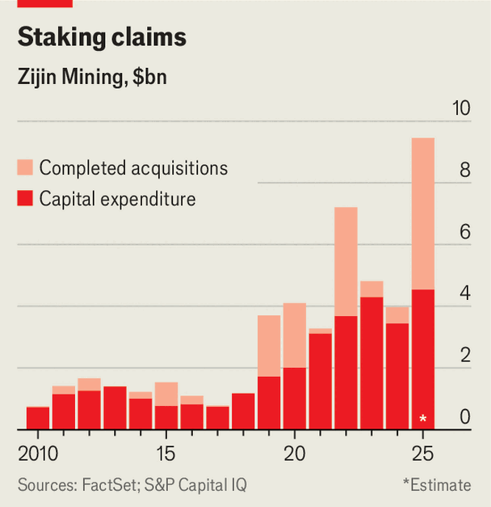
它已建立起庞大的冶炼和精炼业务，该业务贡献了约四分之一的运营利润。许多西方矿业公司却对这类业务望而却步。矿产加工过程肮脏复杂，通常利润不高。即便矿产价格下跌，运营商仍需支付费用维持加工设施运转，因为频繁启停设备成本极高。然而对紫金矿业而言，垂直整合战略成效显著。由于加工利润与所用矿石品质密切相关，其全球收购优质矿产资源使冶炼精炼业务比同行更具盈利空间。通过在多个海外矿山建设初期加工设施，该公司还能将半成品矿石运回中国进一步处理，从而节省运输成本。■
紫金矿业还加工其他矿企提供的铜和金，从而实现更大的规模经济。许多最终产品——通常为铜阴极和金条——随后由紫金矿业的贸易部门出售。打造如此庞大的业务并非易事。为支持扩张，紫金矿业不得不大量借贷。2010年其负债与资产比率为21%；2025年上半年该比例升至38%，远高于大型西方矿业公司的水平。为支持进一步投资，公司于9月将旗下国际金矿整合至子公司，并在香港上市该子公司的约15%股权，融资250亿港元（32亿美元）。另一大挑战是管理其环境影响。2010年，福建省某矿山废水池发生有毒泄漏，污染附近汀江，损害了紫金矿业的本地声誉。■
最近，塞尔维亚博尔镇的村民抱怨称，Zijin在当地矿场造成的环境损害（该公司已否认相关指控）。此类批评最终可能促使海外政界人士开始抵制该公司的扩张。此外，Zijin近期陷入地缘政治的漩涡。中国政府并未在Zijin中持有多数股权，如其在该国其他大型矿业公司中的情况，但上杭县仍持有相当大的股份，引发对其独立性的质疑。去年，该公司因涉嫌从中国新疆地区强迫劳动中获利而被美国政府列入“实体清单”（该公司已否认相关指控）。这使得与美国企业开展业务变得困难。因此，陈先生的继任者将面临诸多挑战。■
欲追踪塑造商业、工业与科技趋势的动态，请订阅我们的周报《The Bottom Line》（仅限订阅者阅览）。■
§020 《中国共产党如何在1949年夺取政权》文化版 红色暴力与血腥原题：How China’s Communist Party seized power in 1949 · 板块：China · 栏目：中国
弗兰克·迪科特（Frank Dikötter）在其新书《》中指出：“共产主义在中国从未受欢迎，这在芬兰或美国也一样。”他称共产主义是“用枪口强加给民众的”。枪口背后是苏联的手，没有苏联的介入，胜利将无从谈起。第二次世界大战后，苏联的介入使中国共产党从一支被打垮、边缘化的游击部队转变为装备精良的军事力量。阅读由党批准的历史资料，会得出截然不同的画面。■
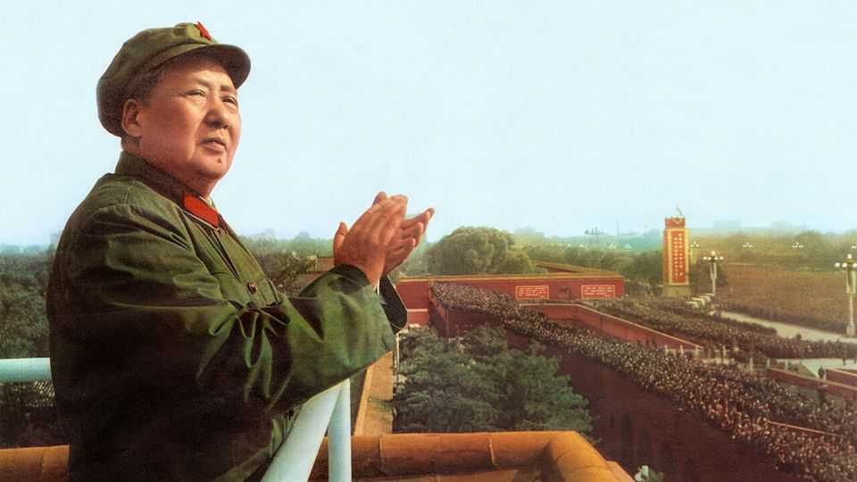
1921年该党成立时，它借助民众对国内军阀混战和外国势力占领领土的广泛不满，迅速崛起。在国民党试图镇压该党的多次行动中幸存下来，后者于1920年代末名义上掌控了政权。1930年代中期，该党发动了著名的“长征”，最终在延安建立根据地。1945年，该党在抗日战争中发挥了关键作用；四年后，又在国共内战结束时推翻了腐败残暴的国民党政权。荷兰裔中国现代史学家迪克特（Dikötter）感叹，学术著作和通俗读物中，该党对历史的叙述被过度呈现。他或许夸大了该党崛起叙事中“童话式叙事”的影响程度。■
如朱正（Jung Chang）所著《野天鹅》（1991）及后续与乔恩·霍利迪（Jon Halliday）合著的《毛：被遗忘的故事》（2005）等作品，均对中共夺取政权前的残暴与欺骗行为进行了深刻批判。此类学术著作亦不乏其例，如两位驻美学者亚历山大·潘托夫（Alexander Pantsov）与史蒂文·莱文（Steven Levine）合著的《毛：真实的故事》（2012），他们与迪科特（Mr Dikötter）一样，广泛引用了苏联档案。但迪科特的叙述并非如《野天鹅》般以家族史为视角，也非个人传记，而是对中共建党初期的系统性剖析。他主张，1949年中共取得胜利并非“共产主义释放并驾驭社会力量的胜利”，而是源于“对权力的传统追求”和“不道德的军事战略运用”。■
共产党势力依靠“掠夺与赎金”生存，招募土匪、贩卖鸦片，并在内战中将大量非武装平民用作人盾。为寻找证据，迪克特（Mr Dikötter）查阅了1980年代党档案馆出版的300多卷资料。这些资料涵盖1949年前的档案，仅限“内部”使用，普通公众无法查阅。然而这些卷宗却流传至海外，迪克特指出，国外历史学家对它们的使用仅属“零星”。他推测，原因之一在于这些资料揭示了中国历史中，该党在第二次世界大战结束前始终处于边缘地位，直到苏联开始介入才改变这一局面。■
迪克特先生指出，在1940年前，中国共产党党员占人口比例与美国共产党成员规模相当，可能被高估。二战结束前，苏联对中共的支持常常显得不够热情。苏联领导人视国民党（KMT）为遏制日本的重要力量，敦促双方合作抵抗日本入侵。迪克特先生称，毛泽东（见图）更倾向于让部队远离危险，以便日后对抗国民党。1945年日本战败前景明朗后，苏联的计算发生了变化。随着日本对满洲（中国东北）的占领逐渐瓦解，斯大林向工业区派遣了近100万军队。■
他们控制了主要城市和港口，开始剥离该地区有价值的工业资产。苏联军队阻止了国民党进入满洲，中国领导人蒋介石（蒋中正）“已无暇与斯大林争执”，迪科特先生（Mr Dikötter）指出。1946年苏军撤出时，允许毛泽东的游击队（已渗透至满洲）填补真空，夺取大量废弃的日本武器。即便在此阶段，共产党击败国民党的胜算仍不明确。然而，美国却给共产党提供了另一重助力。总统哈里·杜鲁门（Harry Truman）派去调停中国内战的将军乔治·马歇尔（General George Marshall）认为，共产党“不过是农村改革者，能帮助塑造民主中国的未来”，迪科特先生指出。马歇尔敦促蒋介石暂缓军队行动，安排停战协议。
这场为期四个月的停火协议为共产党赢得了关键时间，借助苏联援助扩充军队。军事力量对比彻底改变。若对此段关于党崛起历程的叙述存在薄弱之处，便是过度依赖官方资料。党的档案提供了其成员所犯暴行的有力证据——例如1930年代初，他们承认对毛泽东的疑似反对者进行审讯时“完全依赖酷刑”。但此类零散信息无法构成完整图景，而当时动荡危险的环境下，外国记者开展调查极为困难。迪克特先生基于现有资料对事件进行了大量澄清，但许多迷雾仍未消散。■ 更多关于最新书籍、电影、电视剧、专辑及争议事件，请订阅我们的周度专属简讯Plot Twist
§021 美国中西部的惊人复苏原题：The Midwest’s remarkable turnaround · 板块：United States · 栏目：美国
在伊利诺伊州洛克福德市（约15万人）的所有建筑中，市政厅无疑是最具美感的建筑之一。这座建筑最初是家银行，大萧条时期破产后被改建为市政厅，如今高耸于城市主商业街之上八层。一楼设有宏伟的拱形中庭。然而，市长办公室的视野却并不那么赏心悦目——停车场太多，废弃工厂也比比皆是。从市政厅的办公室向外望去，很容易让人误以为洛克福德只是另一座正在衰落的中西部工业城市，努力维持过去的辉煌。然而，若再靠近观察，洛克福德的状况却出人意料地良好。
■
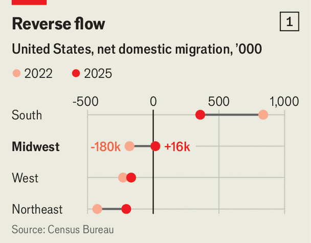
罗克福德市如今拥有一座免费艺术博物馆，馆内陈列着罗伊·利希滕斯坦（Roy Lichtenstein）的画作；一座长期荒废的工厂最近重新开张，转型为智能酒店；城市内还有一座精致的日本庭院。制造业集群围绕机场布局，而机场目前有约8700人在此工作，比十年前增加了数千人。罗克福德市长汤姆·麦克纳马拉（Tom McNamara）自豪地表示：“目前飞越美国的每一架飞机，其零部件都来自罗克福德。” 最大的变化是，越来越少的人选择离开这座城市。根据美国人口普查局（Census Bureau）基于税务申报数据的统计，2024年有141人离开罗克福德前往美国其他地区，而迁入人数则少于迁出人数。在2010年至2020年的十年间，每年净流出人口在2000至3000人之间。■
尽管完整数据尚未公布，但到2025年，这座城市可能自2007-09年全球金融危机前以来，首次实现净人口增长。虽然城市配套设施有助于吸引人口，但罗克福德的复苏也反映了更广泛的趋势。去年，从北达科他州到俄亥俄州的中西部人口普查区，净迁入人口首次超过净迁出人口。2022年，约18万人迁出，而去年迁入人数仅为1.6万人（详见图表1）。弗吉尼亚大学人口学家哈密尔顿·伦巴德表示，这种显著的逆转尤其值得关注，因为美国整体人口增长速度已降至历史最低水平。
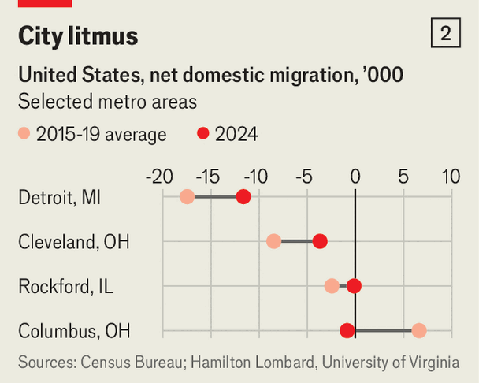
目前的数据尚不足以确定，但伦博德先生猜测，上一次更多人迁往美国中西部而非离开该地区，是在20世纪50年代，当时非裔美国人前往北方寻找工厂工作，远离吉姆·克劳法的压迫。到了20世纪70年代，若非更早，去工业化已逆转了人口流动方向，形成了某种意义上的“逆向大迁徙”。伊利诺伊州或许最能体现这种变化。2022年，这片“林肯之地”向其他州流失近15万人。一些位于州内的小县自林肯总统在世时起便持续流失人口。这给财政带来巨大压力，因养老金支出不断增长而税收收入却停滞不前。事实上，芝加哥预算中约40%用于养老金和债务。不过，这种压力可能很快会缓解。去年仅有4万人离开伊利诺伊州，比三年前减少了约73%。■
除上述地区外，其他地区的复苏迹象相对不那么明显且分布不均，但仍可察觉。许多曾经以工业为主的老城市状况明显改善。去年人口普查局估计，底特律市人口首次在近70年中实现增长，部分原因是本地居民外流减少。俄亥俄州克利夫兰市的都会区，作为另一座锈带城市，人口流失也有所减少。相比之下，哥伦布市虽同属该州，却呈现出阳光地带的氛围却缺乏阳光，该市出现了大规模人口流入转为小幅外流（见图表2）。这种整体趋势背后的原因是什么？与任何州或地方官员交谈，他们当然会归功于自身。昆汀·梅瑟（Quentin Messer）——州经济发展机构负责人表示，人们发现“密歇根州是一个极具全球性和多元文化氛围的地方”。■
他表示，自己的新家是“美国最美丽的州”，而该州蓬勃发展的体育队伍也是吸引人们迁居的原因之一。伦巴德先生却给出了更具说服力的解释——生活成本。他将凤凰城这个快速发展的城市与芝加哥进行对比。这位亚利桑那州的都市居民表示：“凤凰城过去相对而言比较实惠，但现在几乎完全不便宜了。”他指出，芝加哥的租金每月大约便宜150美元。此外，人们还可以无需汽车便能生活，并在剧院欣赏到不错的演出。“你只需20万美元就能买到一栋带院子和车库的漂亮房子，”洛克福德市市长麦克纳马拉说道。近几十年来，芝加哥最大的人口流失群体是中产阶级、往往为非裔的家族。■
在2020年前的十年间，库克县（Cook County）——该市所在县——失去了10万黑人居民，部分迁往邻州，更多则流向亚特兰大和休斯顿等城市。如今南方已不再那么便宜，其薪资也不再显著更高。中西部制造业岗位的长期流失趋势已放缓，而该领域薪资近来迅速上涨。尚无法判断这场人口大迁徙的逆转是否可持续。严冬依旧寒冷，南方的阳光仍是诱惑。制造业就业状况再度陷入困境，部分归因于唐纳德·特朗普（Donald Trump）的关税政策。但更严峻的问题在于，即便较少人离开中西部前往美国其他地区，特朗普政府已切断了最大规模的新移民来源：国际移民。■
1月，美国国会预算办公室将未来十年美国人口增长的预测从1500万下调至800万，原因是移民和出生率下降。过去几十年来，移民人口可能首次出现下降，抵消了国内小幅增长。随着总人口趋于平稳，若某一地区增长，其他地区就必须减少。■ 保持对美国政治的敏锐洞察，订阅《The US in brief》，获取每日精选政治新闻分析；关注《Checks and Balance》，深入探讨美国民主现状及选民关切议题。
§022 特朗普的法院原题：The Trump court? Not quite · 板块：United States · 栏目：美国
总统最持久的印记是其任命的最高法院大法官。但正如唐纳德·特朗普在2月20日再度发现的那样，当两位他任命的大法官投票推翻其去年春季实施的广泛关税时，总统对已确认的提名者已无控制力。特朗普对艾米·康妮·巴雷特（Amy Coney Barrett）和尼尔·戈萨奇（Neil Gorsuch）两位大法官口出恶言，他们分别于2020年和2017年被他任命，因在“Learning Resources诉特朗普案”中投票反对特朗普而遭到批评。特朗普称他们的判决“令他们的家庭蒙羞”。但特朗普2018年任命的布雷特·卡瓦诺（Brett Kavanaugh）大法官，因投票支持保留关税而获得总统的赞誉，称其“展现出天才”。
■
特朗普或许将最高法院划分为队友与对手，但大法官们的关注点却另有其事。他们正围绕高深的法律解释问题展开内部斗争，这些分歧超越了意识形态与当前政治局势。首席大法官约翰·罗伯茨（John Roberts）撰写的多数意见认为，国际紧急经济权力法（International Emergency Economic Powers Act）并未赋予总统加征关税的权力，该意见仅21页。但五份额外意见（两份反对意见、三份附议意见）使判决书膨胀至170页，导致从口头辩论到最终裁决的等待时间长达107天。Learning Resources的案例与传统观点形成鲜明对比，传统观点认为当今最高法院是特朗普的可靠盟友。当然，保守派超级多数支持了特朗普重返白宫，并认可其议程的诸多方面。■
2024年，特朗普诉安德森案挫败了对其竞选资格的挑战，特朗普诉美国案则赋予他刑事追诉的豁免权。2025年，大法官们在他身上取得近20项临时性胜利——允许他肢解教育部、禁止变性军人服役，并取消近100万移民的保护措施。然而法院在去年四月予以反击，当时政府将疑似帮派成员秘密送往萨尔瓦多，未经过正当程序；十二月又在政府试图动用国民警卫队进驻芝加哥后再次出手。在涉及特朗普第二任期政策的首起全面审理的实质案件“学习资源案”中，法院明确的挫败表明其已划出红线。特朗普试图罢免联邦储备委员会主席丽莎·库克，以及削弱宪法规定的出生公民权保障，这两场斗争他大概率会输掉。■
学习资源案的争议焦点并非特朗普总统报复性关税的智慧，而是“重大问题原则”——一项限制行政部门在未获得国会明确授权的情况下实施重大举措的法律原则。六名保守派大法官在拜登总统任内利用这一工具遏制了取消学生债务、清理电厂和保护租户免遭驱逐的计划。对于保守派超级多数的一半——首席大法官罗伯茨与巴雷特、戈萨奇大法官而言，这一原则同样否定了特朗普的关税措施。金斯伯格大法官、卡根大法官和索托马约尔大法官长期批评该原则偏离普通文本主义，但她们未援引卡根大法官曾称的“免于文本约束的豁免权”便达成了相同结论。■
卡瓦诺大法官、萨缪尔·阿利托大法官和克拉伦斯·托马斯大法官投票支持维持关税政策，尽管他们对“重大问题原则”怀有好感，但认为当总统参与外交事务时，该原则的适用性会减弱。更精细的区分体现在巴雷特大法官和戈萨奇大法官对“重大问题原则”的诠释（他们在相互对立的附议意见中对此进行了探讨）。随着大法官们不断磨合国会与行政部门权力平衡的司法方法——这是美国宪法设计的核心要素之一——他们或许在关注现任白宫主人，但其视野远不止于某一位总统。法院正致力于构建一条“适用于时代的规则”，正如戈萨奇大法官所言，即便大法官们对规则的具体内容存在分歧。■
掌握美国政治动态，敬请订阅《经济学人》每日简报《美国简报》（The US in brief），获取对最重要政治新闻的快速分析，以及每周专栏《制衡》（Checks and Balance），深入探讨美国民主现状及选民关切议题。■
§023 翻转得州的较量原题：The battle to flip Texas · 板块：United States · 栏目：美国
美国
唐纳德·特朗普（Donald Trump）未出现在中期选举选票上，但他仍如幽灵般笼罩每场竞选。他的声望低落为民主党在11月赢得众议院提供了绝佳机会。一些民主党人甚至梦想夺取参议院。得州的激烈角逐展示了这种可能性。3月3日，共和党与民主党将分别举行初选，两党选民都面临相似选择：激进派候选人，能激发基层热情，或是更可能获胜的务实人选。共和党似乎更倾向于前者。
如果民主党避免重蹈覆辙，他们或许能在德克萨斯州赢得自1994年以来的首次州级选举。共和党初选中，四届连任的约翰·科恩对阵民粹派肯·帕克斯顿。约翰·科恩银发素衣，宛如漫画家笔下的参议员形象。这位前法官自称是“工作马”而非“花瓶”。在参议院他推动通过多项法案，有时甚至敢于与民主党合作。按常规标准，他属于保守派：曾试图废除奥巴马医改，至今仍反对同性婚姻。像许多精明的共和党人一样，他压抑着对总统的厌恶。十年前他称特朗普为“海燕”，如今却勤勉地为他的议程盖章。但MAGA铁杆支持者正围绕帕克斯顿聚集，他们认为帕克斯顿更符合特朗普的真面目。■
在担任德克萨斯州总检察长的十年间，他起诉了谷歌和脸书“窥探德克萨斯人”，起诉辉瑞“合谋审查”其疫苗所谓缺陷信息，还起诉摇摆州“分发假选票”。他甚至声称曾起诉乔·拜登107次。与特朗普一样，帕克森（Paxton）也时常陷入麻烦。他被指控证券欺诈（最终以支付30万美元和解）。德克萨斯州众议院党内曾弹劾他腐败，参议院未将其定罪。其妻去年以“圣经理由”提出离婚。支持科内恩的广告称帕克森不仅“腐败”，还“古怪”。帕克森坚称所有指控都是由与试图弹劾和起诉特朗普相同的黑暗势力策划的阴谋。民调显示两人势均力敌。■
由于第三位候选人——一位来自休斯顿的不那么知名的众议员——加入共和党初选，共和党初选将进入决选阶段。决选通常吸引的选民数量较少，但更坚定，政治顾问比尔·米勒预测帕克森先生将获胜。两位领先候选人正拼命争取特朗普的支持。但特朗普尚未支持任何一人，或许是为了避免支持最终落败者。民主党人的选择在非裔众议员贾辛·克罗克特和白人州议员詹姆斯·塔拉里科之间。两人都是进步派，但风格截然不同。克罗克特女士通过在线上对对手的侮辱性言论激怒民主党人，称特朗普是“普京的狗”，称德克萨斯州轮椅上的州长格雷格·阿博特是“热轮州长”。■
共和党人普遍被称作"混蛋"，而支持他们的拉美裔选民则被指责有"奴隶心态"。民调专家吉姆·亨森表示，党内基层希望看到"能够表达他们潜意识欲望的人"。当被问及自己党派对抗她的前景时，众议院共和党领袖迈克·约翰逊咯咯笑着，手指敲击如德雷克·埃文斯（Dr Evil）。相比之下，塔拉里科先生更为沉稳，或许更具选举竞争力。这位36岁的前教师言辞犀利且虔诚信仰，曾用圣经内容羞辱那些投票要求学校张贴十诫的共和党人。在竞选活动中，他指出真正的敌人并非右翼，而是剥削普通民众的亿万富翁。他在自由派播客中大受欢迎，但也曾登上乔·罗根的节目，该节目吸引保守派听众。在早期投票的第一周，他接受了全国电视主持人史蒂芬·科尔伯特的采访。■
美国哥伦比亚广播公司（CBS）拒绝播出该段采访，担心特朗普政府会利用中立规则对其施压。该采访仅在互联网上播出——并迅速引发病毒式传播。塔拉里科得意地宣称：“唐纳德·特朗普担心我们即将在得克萨斯州翻盘。”博彩市场预测帕克森将在11月与塔拉里科对决。若如此，全国民主党总部将向该选区投入资金，这已是史上最昂贵的选举之一。要赢得参议院席位，民主党需再夺四个席位。这意味着必须赢得所有摇摆州，并至少拿下两个倾向共和党的州，如得克萨斯州。得克萨斯州保守程度足以让即便道德上有瑕疵的帕克森也难以击败。但若特朗普激化民主党浪潮，如部分预测，得克萨斯州或将成为翻转参议院的关键州——并制约其在任最后两年的施政。■
关注美国政治动态，订阅《美国简报》（The US in brief），我们的每日简报提供对最重要政治新闻的快速分析，以及《Checks and Balance》（每周简报），深入探讨美国民主现状及选民关切的核心议题。■
§024 美国原题：Each year tens of thousands of Americans accidentally kill · 板块：United States · 栏目：美国
美国紫罗兰兄弟会
每年数以万计的美国人意外致死他人。这种心理创伤巨大且大多不为人知。
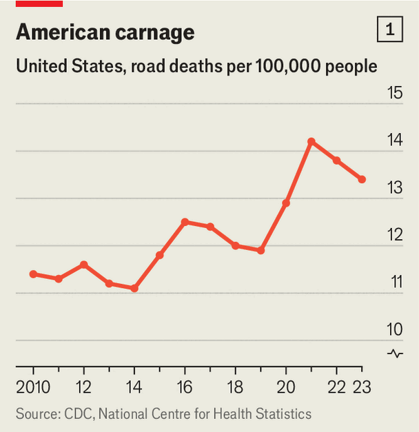
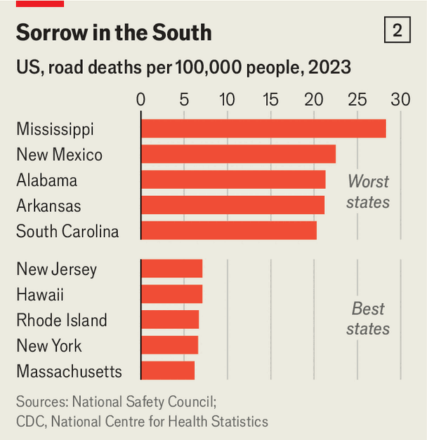
在希腊神话中，阿波罗曾用铁饼误杀斯巴达王子海亚辛修斯。神明为悼念爱人，海亚辛修斯的鲜血中绽放出一朵紫罗兰。这个"伤害后希望"的故事启发了美国一个无人愿加入的组织：紫罗兰兄弟会。该组织为意外致死他人的幸存者提供支持。"我们故事中的主角并非英雄，"一名成员如此说道。她16岁时夜间驾车打滑，撞死副驾驶座上的好友——镇上的舞会女王。
美国每18分钟就有一人因意外死亡。大多数死于车祸，但也有部分人因医疗失误、枪支意外走火或离奇事故而丧生。与其它富裕国家相比，这些统计数据显得格外突出。2024年，美国有39,000人死于道路事故；相对于人口规模，这一死亡率是法国的两倍，是英国的四倍。除了最贫穷的地区，仅有少数国家——哈萨克斯坦、格鲁吉亚、吉尔吉斯斯坦和亚美尼亚——的汽车死亡率更高。过去十年间，美国的汽车死亡率持续上升（见图表1）。尽管受害者受到应有的关注，但对那些无意中夺去他人生命后挣扎求生的数以万计的人，却关注远远不够。致命事故频发的原因并不难理解。■
美国拥有全球最庞大的道路网络，美国人驾驶里程更长，且更多行驶在高速混合道路（stroads）上，这类道路是街道与公路的混合体，行人与车辆共享。2024年，78%的美国上班族选择驾车通勤，相比之下，英国这一比例仅为55%。汽车体积更大，导致撞击时更易造成致命伤害。多数事故发生在夜间，且许多司机处于醉酒状态。但致命风险在美国各地分布不均。阳光带州（Sunbelt states）的危险性远高于其他地区（见图表2）。这些州的街道多由州政府所有，而公路工程师往往更注重效率而非安全。结果是大量美国人正默默承受创伤。■
《经济学人》采访了八位意外杀人后加入Hyacinth Fellowship的人，发现他们常被家人朋友劝不要谈论此事。有些人压抑多年，甚至数十年。人们普遍担心某种因果报应。一名男子表示，他觉得自己自事故后只活了“半生”，认为“上帝的惩罚终将降临”。杀人事件的纪念日比生日更重要。对部分人而言，内疚难以承受。一名25岁左右的男子在一年半前因船只事故致死一名女孩，四周后自杀。临终前他试图变卖所有财物以支付女孩的葬礼费用。人际关系因此变得紧张。幸存者向亲友寻求“我不是怪物”的确认，但听到“这不是你的错”也难以获得安慰。■
心理治疗能起到很大作用，但多数治疗师并未接受过指导这类人群的训练。许多意外杀人者描述自己情绪麻木，难以完成学业或工作。有位男子多年来反复做噩梦，梦到自己撞人，醒来却发现双腿抽搐，仿佛在试图踩刹车。组建家庭令他恐惧：“我因曾夺走他人女儿而对孩子的安全产生强烈焦虑。”对受害者家属而言，起诉加害者可能是获得心理慰藉的唯一途径。每年美国约有10万起过失致死诉讼案。这种救济方式是否恰当尚有争议，但其代价不容忽视。■
一位被控过失致人死亡的女性回忆称，当律师在法庭上声称一头鹿可能突然冲上马路导致她急转方向时，她感到胃部翻腾。“我有些失忆，但我知道那不是发生的事。”她说。一名18岁醉酒的黑人男子则记得当时“害怕被监狱虐待”。反对酒驾母亲协会（Mothers Against Drunk Driving）像暴民般追着他。“服刑后焦虑并未消失。”他说，“我一生经济状况稳定却从未存下钱，我不想拥有任何可能被夺走的东西。”如果美国道路更安全，将有更少人死亡——也更少人会活成这样。但汽车大概率不会变得更小，美国人也不会突然减少对它们的依赖。不过，还有其他行之有效的解决办法。■
城市规划师杰夫·斯佩克帮助了60个城市重新设计道路以减少死亡事故。他认为，限速不如环境提示重要：树木、更急的弯道和更窄的车道迫使司机减速。他说，将交通信号灯替换为四向停车标志可使事故减少三分之二，因为人们根本不会在这些路口超速。无论发生什么，"紫罗兰会"都会不断吸纳新成员。该组织每月举办电话会议、精神辅导、写作研讨会和法律讲座。许多人表示，这是他们第一次在该组织中感受到真正的社区。"我们只是个乞丐，试图帮助另一个乞丐找到面包，"该组织董事会负责人克里斯·亚瓦牧师说。该组织希望像戒酒会一样成为家喻户晓的名字，并希望急救人员能在事故现场向幸存者介绍他们。
要消除这种偏见，更多美国人需要认识到，他们的世界同样可能在瞬间崩塌。正如杀害舞会女王的女子所言：“有些人真的认为自己掌控着自己的命运。” ■ 了解美国政治动态，请订阅我们的每日简报《美国简报》（The US in brief），获取对重要政治新闻的快速分析，以及每周专栏《制衡》（Checks and Balance），深入探讨美国民主现状及选民关切议题。
§025 加州也迎来250周年纪念日原题：It’s California’s 250th birthday, too · 板块：United States · 栏目：美国
“大家聚到这张桌子旁来吧？”圣巴巴拉县步道委员会的马克·威尔金森向25名徒步者挥手示意，引导他们前往一处临海悬崖的野餐区。海浪轻柔地拍打着下方的沙滩，经过一周的降雨，悬崖上点缀着细小的黄色花朵。接下来五英里的徒步路线，将重现安萨远征250年前的足迹——当时西班牙士兵和移民开始对当时称为上加利福尼亚的地区进行殖民。威尔金森说：“他们就在这个区域扎营，可能就在现在的高速公路位置。” 美国历史通常是从东向西叙述的。 ■
但现代加利福尼亚的故事并非始于淘金热时期“我发现了！”的欢呼，也非始于1850年该州建州。18世纪晚期，西班牙已是一个日渐衰落的殖民大国，担忧俄罗斯或英国会侵犯其尚未开发的领土。冒险者们早已通过海路抵达上加利福尼亚（Alta California），但从未经陆路到达。因此，1775年，西班牙探险家胡安·巴蒂斯塔·德·安萨（Juan Bautista de Anza）率领240名士兵和平民，从今墨西哥的索诺拉（Sonora）出发，踏上了一条充满危险的1200英里陆路征程，目标是旧金山湾（见地图）。这次远征一度受阻，直到1776年才重新启程，恰逢美国建国者签署《独立宣言》的同年。■
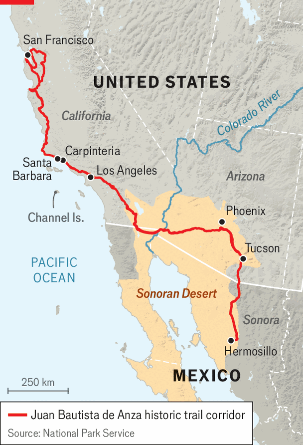
加州海岸沿线的社区名称让人联想到西班牙探险队的后裔：费利兹（Feliz）、贝里耶萨（Berryessa）、伯纳尔（Bernal）。加州大学河畔分校历史学家史蒂文·哈克尔（Steven Hackel）表示：“这些历史总是脱离我们的国家叙事。”他说：“人们难以想象这里曾有独立于1776年夏天东海岸发生事件的历史。”威金森（Mr Wilkinson）小组的大多数成员此前从未听说过安萨探险队（Anza expedition）。他们是一群来自圣芭芭拉的退休人员和热衷徒步者，通过当地报纸了解到这次徒步活动。我们沿着海滩出发。潮水退去，太阳升高，海峡群岛（Channel Islands）在海面远处清晰可见。■
佩德罗·丰特（Pedro Font）是安扎远征的随行牧师，他是一位尽职的随行记录者，详细记载了这段旅程的见闻。“从这里到营地的整段路程都沿着海岸线延伸，几乎触碰到海浪。”他写道。“远征成员中那些从未见过大海的人们，对许多事物都感到惊叹。”我们同样如此。经过陡峭的攀登后，队伍停下脚步，驻足观赏海豹保护区。“天啊，它们正在晒太阳！”马修·华莱士（Maureen Wallace）惊叹道，她指着沙滩上的小海豹。我们在卡普林特里亚（Carpinteria）市内一处昔日奇马什村庄遗址驻足，该地以当地居民精湛的工艺闻名。威尔金森先生（Mr. Wilkinson）曾警告他的信徒，安扎远征预示着加利福尼亚原住民将遭遇悲剧。
Font对丘马什人既充满好奇又带着嘲讽地写道：“印第安人是伟大的渔夫，非常聪明……但他们非常贪婪，这是所有印第安人的特点。”西班牙人带来了疾病与动荡。被迫在方济各会修道院里挤作一团的原住民，遭受着“地方性疾病的流行被偶尔爆发的疫情加剧”的折磨，历史学家哈克尔（Mr Hackel）解释道。他们的数量骤减。2020年，当南方人拆除邦联纪念碑时，加州对殖民历史进行了反思。抗议者推倒了胡尼佩罗·塞拉（Junípero Serra）的雕像，这位建立修道院体系的建筑师在2015年（颇具争议地）被封圣。就像安扎及其队伍之前遇到的那样，徒步者们也遇到了一片阻挡去路的盐沼。“大自然指引了他们的方向，也指引着我们今天前行的方向，”威尔金森（Mr Wilkinson）说。我们绕道而行。苍鹭在浅滩处踱步。
华莱士夫人告诉本报，要留意鳄鱼鲨，这种鲨鱼在溪流中繁殖。公司缓缓驶入一条沿101号公路延伸的自行车道。沼泽的宁静被加州交通的喧嚣所取代。美铁太平洋冲浪者号列车缓缓驶过这片走廊，位于圣塔伊内斯山脉与大海之间。这并非偶然。“我们倾向于沿用相同路径，”国家公园管理局的克里斯托弗·本特利表示，该机构负责连接这次远征的整条路线。原住民路线演变为安萨小径，最终发展成加州部分沿海公路和铁路。在最后的里程中，《经济学人》试图想象安萨时代，即高速公路、输电线、酒庄和冲浪商店出现前，这片海岸的模样。但现代生活与午餐的召唤已不容忽视。■
徒步旅行者停下脚步挥手告别。我们终于抵达了那个最平淡无奇的加州地标——停车场。■ 关注美国政治，请订阅我们的每日简报《美国简报》（The US in brief），它提供对最重要政治新闻的快速分析；以及每周通讯《Checks and Balance》，深入探讨美国民主的现状及选民关心的议题。
§026 唐纳德·特朗普的不称职国情咨文原题：Donald Trump’s unworthy state of the union · 板块：United States · 栏目：美国
在首次担任总统之初，唐纳德·特朗普曾在国会两院联席会议上发表演讲，呼吁“团结与强大”，敦促两党合作，目光投向九年后美国建国250周年的庆典。当时他曾这样问道：“当我们迎来建国250周年时，美国会是什么样子？”然而，当特朗普在2月24日的国情咨文中纪念这一周年时，美国已与九年前他试图描绘的那个国家大相径庭。
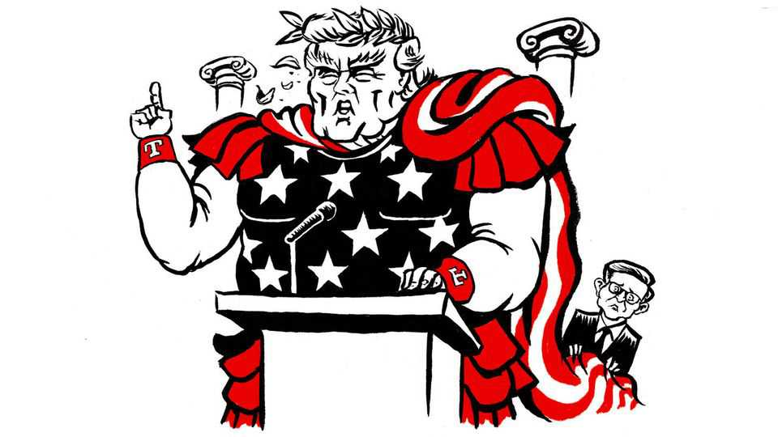
特朗普于2017年2月发表讲话时，首先指出当时正值黑人历史月，称美国在“民权道路上仍有工作要做”。他呼吁国会支持一些仍属其政治核心的倡议，如修建边境墙，同时也支持一些早已式微的议题，如“积极移民改革”、可及且负担得起的托儿服务、女性健康的新投资、清洁空气和清洁水源，以及“我们被忽视的内城的希望复兴”。特朗普当时对国会表示：“对人民的真爱要求我们找到共同点。” ■
本周，当特朗普先生高呼美国建国纪念日之际，他依旧大肆宣扬宏大的愿景——“黄金时代”和“千载难逢的复兴”，声称这些成就仅在他就任总统的第一年便已实现。然而这些愿景中并未包含呼吁美国共同价值观的号召。他未提及团结，反而反复称民主党众议员为“病态”和“疯狂”，并称他们“正在摧毁我们的国家”。他警告称，若这些民主党人掌握权力，将会向美国敞开边境，让“全球最恶劣的罪犯”入境，包括“劫掠明尼苏达州的索马里海盗”这类通过欺诈手段行骗的恶徒。他声称民主党人唯有靠作弊才能赢得选举。过去十年间，这位曾呼吁团结的总统去了哪里？而那个曾让“团结”理念仍具说服力或至少令人向往的国家又去了哪里？■
弹劾、疫情、对警察暴力的种族反思、阻止权力和平交接的暴动，以及随后的再次弹劾，再加上各种诉讼和起诉，可能都发挥了作用。特朗普日益增长的极化政治自信也起到了一定作用。毕竟，他第一次向国会发表演讲时，照着提示器念了整整一小时。这次，他创下了此类演讲的纪录，持续了1小时48分钟。他最投入的时刻是在偏离讲稿时，但随着晚宴进行，他的“连贯性”逐渐变得支离破碎。（“太空军是我最珍视的项目，因为我们确实做到了这一点，”他说道，引发完全共和党人的掌声，但他并未提及这支力量具体在做什么。）从总统的视角看众议院议事厅。
在他右侧坐着民主党代表，他有理由相信他们几乎不会支持他任何行动。正前方则是四位最高法院大法官，尽管该院被保守派占据主导地位，但刚刚表明了维护司法独立权威的决心。通过裁定其主张总统可随意征收边境税的权力主张不合法，此举剥夺了特朗普最倚重的威慑手段——他用来掌控全球关注并获取国际敬意的利器。“这是不幸的裁决”，特朗普在演讲中称，语气罕见地克制。面对这两个无法掌控的群体，特朗普将注意力转向国会内的共和党代表。他无法承受失去他们的风险。但他深知，随着今年秋季中期选举临近，这些代表正日益不安。■
最新民调显示，特朗普的公众支持率已降至自2021年1月6日骚乱以来的最低点。关键选民群体，包括独立选民、拉丁裔选民，甚至年轻共和党人，都开始对他失去信心。马里斯特民调本月显示，六成受访者认为美国目前状况比一年前更差。尽管特朗普近期对与他决裂的国会议员在关税或对华强硬等问题上的立场进行了抨击，但他演讲中刻意避免对此类批评。他提出的政策新思路寥寥无几。但其对民主党公开蔑视甚至憎恨的态度，加上一贯的自我吹嘘，成功凝聚了共和党人，传递出他有意在经济和移民问题上采取攻势的信号。■
看似一如既往地不像众议院议长，而更像一个家仆，迈克·约翰逊（Mike Johnson）坐在特朗普左侧肩头，对特朗普最微小的机智言论都露出狂热笑容；总统已学会约翰逊将作为忠实地鞭策者而非政府平等分支的领袖。特朗普也提供了一些提振。他所指的奥运男子冰球队和 gallery 中的英雄军人，是确凿证据表明，在这个250周年之际，美国人仍保有超越政治、超越党派的价值观与激情。但谈到政治，文化战争取代了任何更高远的抱负；特朗普2017年借黑人历史月引发的争议，在2026年演变为缩略词口号：“我们终结了美国的DEI！”面对一个重大问题——美国是否会再次攻击伊朗，若会又为何，总统仅给出了混乱的回应。■
在俄罗斯入侵乌克兰四周年之际，他仍未提出新的结束战争愿景。他对来自中国的挑战以及人工智能带来的机遇与风险也毫无建言。这场演讲大概只会因篇幅而被记住，但其效果将进一步削弱国情咨文的重要性。■ 订阅者可注册《经济学人》Opinion通讯，汇集本刊领袖文章、专栏、特稿及读者来信精华。
§027 墨西哥最强大的毒枭被杀将让特朗普感到满意原题：The killing of Mexico’s most powerful narco will please Donald Trump · 板块：Americas · 栏目：美洲
星期日将载入墨西哥史册。当天凌晨，墨西哥特种部队在该国贾尔科州（Jalisco）境内逮捕了一名重要毒枭。政府称，贾尔科新世代贩毒集团（CJNG）头目内梅西奥·鲁本·“埃尔门乔”·奥斯盖拉·塞维安特斯（Nemesio Rubén “El Mencho” Oseguera Cervantes），一名59岁的前警察，随后在交火中受重伤不治身亡。他是墨西哥最通缉的毒枭之一。
过去二十年来，自贩毒集团崛起以来，他已建立起覆盖墨西哥几乎全境的犯罪帝国，涉及多种业务领域，并以暴力手段著称。埃尔门乔（El Mencho）是美国政府的首要打击目标，因其将毒品贩运至美国，包括致命的芬太尼。美国国务院曾悬赏1500万美元，以换取有关其行踪的情报。此次行动成为墨西哥总统克劳迪娅·谢因鲍姆（Claudia Sheinbaum）的重大胜利。自一年半前上任以来，谢因鲍姆将安全问题列为优先事项。她已摒弃前任兼导师安德烈斯·曼努埃尔·洛佩斯·奥夫拉多尔（Andrés Manuel López Obrador）推行的“拥抱而非子弹”（hugs not bullets）放任政策，并任命了严肃的安保部长奥马尔·哈夫赫（Omar Harfuch）。两人共同提升了情报收集能力，直面贩毒集团。■
墨西哥各派系政界人士都对埃尔·门乔（El Mencho）的落网表示欢迎。铲除这样一位强势毒枭也将为谢因鲍姆（Sheinbaum）赢得特朗普的赞誉。特朗普多次要求谢因鲍姆采取更严厉措施瓦解墨西哥贩毒集团。他一贯暗示，如果她不这么做，美国将代为执行，通过单边军事打击墨西哥领土。拉蒂亚（Lantia）安全咨询公司墨西哥城分析师埃德加多·古铁雷斯（Eduardo Guerrero）认为，此次行动几乎肯定部分出于取悦特朗普的考量。尽管行动得到美国情报部门支持，但关键执行者是墨西哥特种部队。这将有助于提升该机构的可信度，因为美国对其可靠性存疑，担心腐败军方会向贩毒集团泄露行动信息。埃尔·门乔此前多次逃脱抓捕。
尽管行动取得成功，墨西哥如今却面临不确定性。埃尔门乔的落网可能引发该国陷入动荡。这是因为这一行动重演了被证伪的打击帮派策略：不惜一切代价追捕帮派头目。希内鲍姆女士过去曾多次批评这种所谓的“重点打击头目策略”。打击帮派头目往往会导致其组织分裂，引发内部争斗。暴力事件随之激增。埃尔门乔死亡后引发的暴力几乎立即发生，但更多是帮派成员表达愤怒所致，而非内部分裂冲突的开始。他们至少在15个州发动袭击，纵火烧毁公交车和银行，阻断道路。航空公司取消航班。墨西哥、美国及其他政府对受影响地区发布居家隔离令。暴力事件中至少60人死亡。
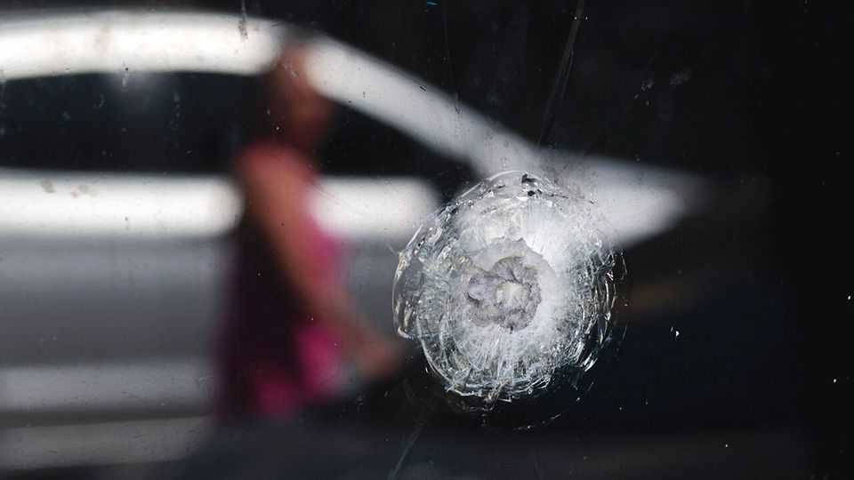
约有一半是州政府武装。到2月25日，局势已基本平息，哈利斯科州的学校也重新开学。但这种平静并不意味着事态已经结束。2024年7月，锡那罗亚贩毒集团首领伊斯梅尔·“埃尔·马约”·赞巴达被美方拘押后，整整三个月才出现真正的帮派内斗。暴力尚未平息，持续冲击着锡那罗亚州。（该州另一前首领胡安·“埃尔·查波”·古兹曼早已在美国服无期徒刑。）埃尔·门乔的死亡不同：锡那罗亚贩毒集团内部并未出现背叛，如以往锡那罗亚贩毒集团的情形。但权力真空依然存在。哈利斯科州普埃布拉瓦尔塔的建筑工人拉斐尔·阿尔塔米拉说：“现在又恢复平静了，但就像大海：表面平静，潮汐却随时可能袭来。我们正等待更大的事发生。” ■
事实上，锡那罗亚贩毒集团（CJNG）的性质反而增加了持续暴力的可能性。格雷罗先生表示，该组织由92个在墨西哥境内活动的团伙组成，因此极易分裂。目前尚不清楚埃尔门乔是否制定了接班计划，也不清楚在枪战中被杀的另外六名帮派成员是否属于该组织的高层领导，还是仅仅是保镖。该组织的残暴行为早已为人所知。在早期，它曾与锡那罗亚贩毒集团合作，对抗另一个帮派——齐塔斯集团。此后，该组织扩展至墨西哥全国32个州。如今，它结合了锡那罗亚贩毒集团腐蚀政商人士的能力，以及齐塔斯集团的暴力手段。为制造恐怖氛围，其杀手曾将尸体悬挂在桥上，或将其肢解后散落在街头。■
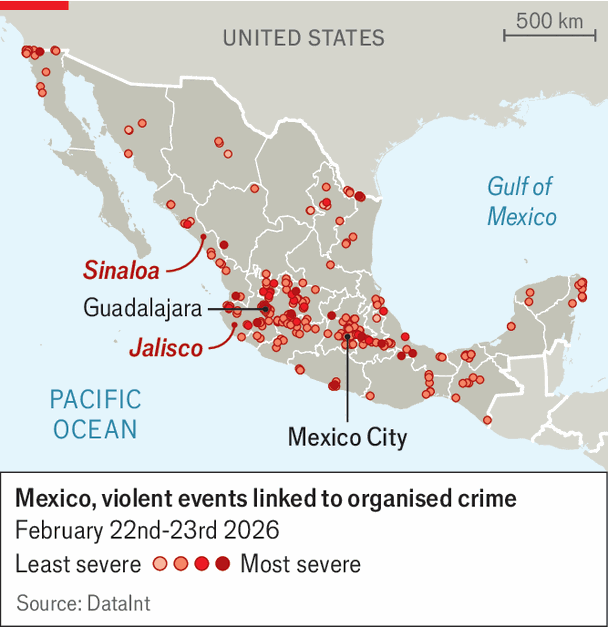
2020年，该组织曾试图刺杀时任墨西哥城安全部长哈夫奇先生，手段可谓大胆。从贩毒到燃料盗窃，甚至度假屋诈骗，该集团涉足的领域可谓包罗万象，使其积累了巨额财富。这进一步加剧了暴力冲突的风险。这使该团伙得以囤积大量武器，包括装有炸药的地雷和无人机。墨西哥官员表示，他们在埃尔门乔的藏身处查获的武器中，包括能击落飞机并摧毁装甲车辆的火箭发射器。该团伙还自行制造武器。“我们不清楚逮捕他的代价会是多少，但可以肯定的是，代价将不菲，”日内瓦全球反跨国犯罪倡议组织的塞西莉亚·法尔法南-梅内德兹表示。■
如果不加以遏制，暴力事件可能演变为“一种需要数年才能平息的流行病”，古铁雷戈先生表示。他称政府需要清除CJNG（Cartel Jalisco Nueva Generación）的地方头目，以防止他们发动地方性行动。哈夫奇先生承认这一点。2月23日的记者会上，他表示自己的安全内阁将“密切关注……对贩毒集团内部的重组，尤其是如果这将引发暴力行动的话”。军方已向贾尔科州派出2500名士兵，与已驻扎的7000名士兵共同行动。特朗普显然希望更多。埃尔门乔被捕的次日，他在社交媒体上写道：“墨西哥必须加大对贩毒集团和毒品的打击力度！”6月，瓜达拉哈拉将举办世界杯四场比赛，墨西哥将与美国和加拿大共同主办。这使得控制暴力的政治理由更加紧迫。■
希内姆·希辛鲍姆和哈夫赫在降低墨西哥高犯罪率方面取得了一定成效。如果在全世界关注下再次飙升，这可能成为他们的终结。■ 注册订阅我们的独家通讯《El Boletín》，了解塑造这一迷人而复杂的地区的各种力量。
§028 巴西最高法院陷入巨大丑闻原题：Brazil’s high court is caught up in a vast scandal · 板块：Americas · 栏目：美洲
事件始于一位喜欢超级名模和私人飞机的银行家。然而当丹尼尔·沃卡罗（Daniel Vorcaro）被逮捕，其银行马斯特银行（Banco Master）因涉嫌欺诈被清算时，他并非唯一感到惊慌的人。调查人员发现，沃卡罗不仅与各类政界人士有牵连，还与巴西最高法官阶层存在联系。这一发现引发了关于该国最高司法机构——联邦最高法院（STF）成员行为的讨论。
这具有重要意义，因为巴西10月的总统大选中，右翼候选人预计将在参议院大获全胜。他们可能获得足够席位，进而弹劾最高法院法官。右翼对最高法院怀有特殊敌意，因其在起诉其前领导人兼总统雅伊尔·博索纳罗（Jair Bolsonaro）中的角色。去年，巴西最高法院（STF）以试图发动政变罪判处他27年监禁，该罪名源于他在2022年失去连任资格后发动的政变企图。尽管最高法院一直捍卫民主，但它变得更为敏感，有时甚至将对成员的批评视为对民主本身的攻击。当针对某位人士的案件提交至STF时，抽签系统将案件领导权交给了何塞·安东尼奥·迪亚斯·托弗利（José Antonio Dias Toffoli）大法官。问题从一开始就存在。在他接手案件期间，他乘坐私人飞机与巴西最大银行（Banco Master）的律师一同出行。■
在削减证人向联邦警察作证时间并禁止警方大部分法医专家接触从沃卡罗（Vorcaro）处扣押的材料（后又撤销该决定）不久后，又曝出沃卡罗曾投资托菲利兄弟拥有的豪华度假村，而托菲利本人在该度假村中也持有股份。起初，托菲利对度假村一事保持沉默。但2月12日，有消息称联邦警察在检查沃卡罗手机后，已向STF（巴西联邦最高法院）主席提交了一份机密报告，引发对托菲利潜在利益冲突的担忧。该报告包含托菲利与沃卡罗之间的通话记录、两人会面情况，以及涉及向托菲利共同拥有的公司支付2000万雷亚尔（400万美元）的款项信息。■
托菲利否认有任何不当行为，并称有关偏见的指控仅基于“猜测”。他表示这些付款与度假村股份的出售有关，并已向税务部门申报。尽管如此，在持续压力下，他仍选择辞职。托菲利的同僚司法官亚历山大·德·莫拉埃斯也陷入麻烦。当证据显示莫拉埃斯的妻子（一名律师）获得了一份异常模糊且收益丰厚的合同，代表巴西银行集团巴西主银行（Banco Master）时，莫拉埃斯随即展开调查，指控税务官员泄露机密信息。2月17日，联邦警察突袭了四名涉嫌官员的住所。莫拉埃斯下令对嫌疑人佩戴电子脚环，吊销其护照，并禁止其旅行或进入税务部门办公场所。■
许多巴西人感到愤怒。中心右翼参议员亚历山德罗·维埃拉（Alessandro Vieira）表示：“打击泄密和机密数据买卖至关重要，但不应成为掩盖共和国重要人物不正当资产或犯罪行为的遮掩手段。”莫拉埃斯利用其作为法院“假新闻调查”负责人之便下令展开调查。他自2019年起领导这项调查，当时法院设立该调查以调查针对其成员及其家属在社交媒体上的攻击。与法院其他活动不同，假新闻调查的运作始终保密。调查启动时，成员们以博索纳罗及其追随者发出的威胁严重性为由进行辩护。这与莫拉埃斯将调查用于审查税务官员的做法难以协调。■
并非首次出现调查范围扩大。2019年，莫拉埃斯法官曾利用该调查机构终止税务部门对多名官员的调查，其中包括巴西最高法院法官。同年，本地调查机构Crusoé报道了托弗利法官与巴西建筑公司奥德布雷赫特（Odebrecht）老板之间的关联，而该企业正是拉美最大腐败案的核心。文章发表后，莫拉埃斯以“假新闻调查”负责人身份下令删除网络上的报道，仅在公众强烈抗议下才撤销此决定。托弗利随后撤销了对奥德布雷赫特的所有罚款，尽管该企业高管已承认设立专门部门向政界人士行贿，总额达8亿美元。企业与司法系统的互动本就常见。■
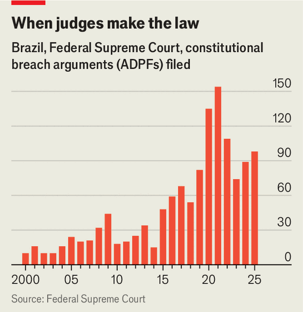
巴西最高法院（STF）任职时间最长的法官吉尔马·门德斯（Gilmar Mendes）每年在里斯本举办一场聚会，邀请数十位政界、司法界和商界高层人士参加。许多与会者在STF（巴西最高法院）有未决案件。巴西媒体将这场活动戏称为“吉尔马帕洛扎”（Gilmarpalooza）。该活动由门德斯创立、现由其子经营的一所私立大学组织。这所大学曾获J&F投资公司（J&F Investimentos）资助，而J&F是控制全球最大肉类加工企业JBS的控股公司。在资助发生时，J&F也正面临STF的未决案件。裙带关系也十分普遍。巴西《圣保罗州报》（Estadão）统计显示，目前STF和最高司法法院（STJ）共有1,860起案件，其中涉及STF成员亲属作为主要律师的案件占比最高。■
在70%的案例中，律师是在亲属被任命为巴西最高法院（STF）法官后才被指派的。许多公司，包括那些在法院有案件的公司，都押注聘请巴西最高法院法官的亲属能获得特殊待遇。以莫拉埃斯先生的妻子为例，她与夫妻的儿子和女儿共同经营一家律师事务所。在莫拉埃斯先生于2017年被任命为法官之前，她的律所曾在巴西最高法院和巴西联邦最高法院（STJ）共有27起案件。如今已增至152起。与巴西最高法院法官有关联的人更容易将案件提交至法院。这是因为2023年法官们宣布一项法律违宪，该法律曾禁止他们审理涉及与亲属经营的公司有关的企业或个人的案件。部分法官似乎认为他们至少在公众认知方面存在问题。■
根据政治分析家佩德罗·多里亚（Pedro Doria）的分析，近期民调显示，超过半数巴西民众在考虑今年大选投票对象时，将立法者是否承诺弹劾最高法院法官列为最重要标准。为重塑最高法院形象，巴西最高法院（STF）新任院长爱德森·法钦（Edson Fachin）于2月2日正式提议，法院应制定伦理准则。他已任命法官卡门·卢西亚（Cármen Lúcia）负责起草工作。细则将在数月内逐步敲定，但核心目标是借鉴美国和德国最高法院的伦理准则部分元素。该准则可能规定法官如何处理由亲属提起的案件。■
该规则还可能涉及参与活动的规定、法官使用特权信息、财务透明度及社交媒体使用等事项。托尔福利（Toffoli）和莫雷亚斯（Moraes）立即予以反驳。两人均表示，他们从未审理过存在利益冲突的案件，认为制定伦理准则并非必要。但无论他们如何辩解，国会中的反对者正密切注视着这一切。■ 注册订阅《El Boletín》，获取关于拉丁美洲这一复杂地区的深度分析。
§029 特朗普对古巴的石油禁运揭示出该国太阳能热潮 《美洲》原题：Donald Trump’s oil embargo reveals a solar boom in Cuba · 板块：Americas · 栏目：美洲
“混蛋！”老哈瓦那的导游胡安在被问及对美国人看法时脱口而出。尽管他希望尽快摆脱古巴政府，因为该政府“对人民毫无作为”，但特朗普对政权的施压却让胡安和其他古巴人生活更加艰难。意识形态的担忧远不及日常生活的挣扎：让孩子上学、汽车加油、餐桌有饭。能源短缺本就是个严峻问题，即便在特朗普将目光转向古巴之前也如此。
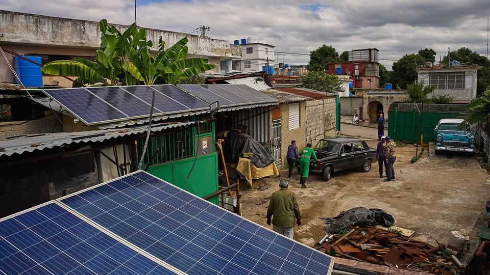
他威胁对向古巴供应石油的国家征收关税的举措已演变为一种有效的禁运。旅游业大幅萎缩，航空公司无法在哈瓦那加油，旅游巴士闲置，食品价格（若能觅得）与运输成本一同飙升。官方定价每升1.10美元的汽油通过一款应用程序配给，大使馆获得的配额依据使馆规模、公务用车数量以及友好程度（俄罗斯享有慷慨配额）。黑市上每升汽油可卖到4000比索（约合8美元）。许多主干道异常冷清，部分街灯夜间不再开启，停电时间已从数小时延长至更久。木炭炉再度出现用于烹饪。政府正试图节约资源，军方主导的旅游集团Gaesa旗下数家大型酒店已关闭，以集中剩余游客并节省燃料。■
政府官员被要求居家办公。政府还允许私营企业若能获得燃料，可自行进口燃油，缓解加埃萨（Gaesa）的垄断地位。但情况并不像想象中那么糟糕，不仅因为古巴40%的燃油需求由自身重质含硫原油满足，特朗普对石油情有独钟，但古巴正以创纪录速度构建替代能源供应：从中国进口的太阳能板。根据智库Ember整理的中国出口数据，截至2025年4月的12个月内，古巴从中国进口的太阳能板数量激增34倍，远超全球其他地区。该岛数年前几乎无太阳能发电能力，如今已达到可缓解特朗普制裁的程度。政权的能源政策主要推动了这一繁荣。■
2024年3月，政府宣布了一项计划，计划到2028年建设两吉瓦的太阳能电站。该计划严重依赖中国提供资金和建设支持，以及太阳能板本身。2024年2月11日，政府表示其新建的太阳能电站曾在中午高峰时段产生近吉瓦的电力，足以满足全国三分之一的用电需求。政府现在表示，计划到2030年使可再生能源供应古巴电力的24%，从2024年的约5%大幅提升。特朗普引发的危机让更多当地人开始接受来自太阳的免费能源。企业和家庭正在尽可能利用这一资源。经营食品配送公司Mandao的马尔塔·德乌斯在办公室安装了太阳能板。Copextel（一家销售太阳能板和热水器的国有零售商）的销售员报告称：“需求很高。”■
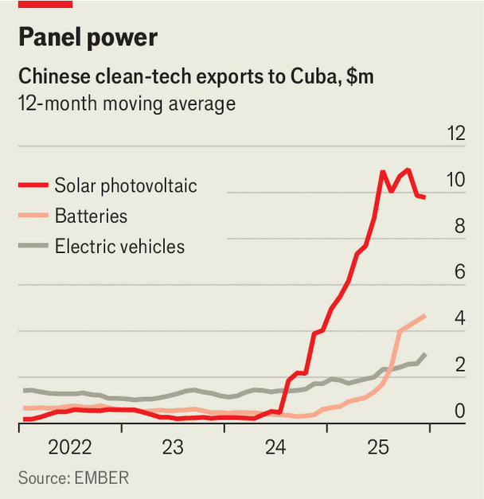
用电高峰出现在傍晚，太阳落山后。仅靠太阳能板无法解决这一问题。但古巴人正以惊人的速度进口中国电池。中国电动车也在迅速普及（见图表）。前古巴外交官卡洛斯·阿尔苏加雷（Carlos Alzugaray）在哈瓦那驾驶一辆中国制造的东风牌电动车。他于2024年购买了这辆车，很大程度上是因为燃料短缺日益严重。一家名为Ecocargo的公司运营着一支小型电动出租车和货运车队。一位居住在哈瓦那的古巴经济学家（要求匿名）表示：“古巴可能经历全球最快的能源转型。”尽管中国太阳能板价格低廉且充足，但无法缓解当前的危机。Copextel公司销售的家用太阳能套件价格约为5000美元，远超大多数家庭的承受能力。私人购买虽被允许，但受美国制裁影响，很少有公司愿意在古巴销售。■
即便那些愿意并有能力投资太阳能的企业，若今日燃料告罄，仍难以为继。Mercatoria（另一家配送公司）的阿尔多·阿尔瓦雷斯表示，他因燃料短缺于上周暂停了运营。目前，美国的压力行动更倾向于伤害普通古巴人，而非动摇其统治者。这使得太阳能，作为一种比石油进口更具主权的能源来源，变得不可或缺。但古巴持续拖欠债务的行为，可能已开始让中国对资助新太阳能板望而却步。而特朗普的强硬态度，正使他们更加犹豫不决。■ 注册《简报》（El Boletín），我们的订阅者专属拉丁美洲简报，以了解塑造这一迷人而复杂的地区的各种力量。
§030 美国人不清楚特朗普对伊朗的意图 中东及非洲原题：Americans have no idea what Donald Trump wants from Iran · 板块：Middle East & Africa · 栏目：中东与非洲
在两个月的总统威胁和自2003年伊拉克战争以来中东地区最大规模的海空军部署背景下，美国人或许期待特朗普就可能爆发的与伊朗冲突进行辩护。然而，他在2月24日的国情咨文演讲中仅用几分钟时间提及此事。 不仅如此，他还表示，只要伊朗说出“那些秘密话语：我们永远不会拥有核武器”，就能避免冲突。然而，伊朗最高领袖阿里·哈梅内伊早已多次说过这些话。
他们甚至在2015年伊朗签署的核协议序言中出现——这份协议三年后被特朗普撕毁。总统只是想再次听到它们，战争威胁将不复存在。至少，这是他在某次二月晚上的表态。但其他时候他表示，美国应袭击伊朗以惩罚该政权今年早些时候杀害抗议者的行径，或迫使伊朗放弃导弹 arsenal，或彻底推翻该政权。他的最终目标始终是个谜。若战争爆发，这将是一场在寻找目标的战争。美国从未如此大规模地积累武力，却对如何使用它毫无头绪。最直接的目标是利用武力威胁迫使伊朗达成限制其核野心的协议。这一直是美国外交的焦点长达二十年。■
即便特朗普退出2015年协议——即联合全面行动计划（JCPOA）——他并未轻视与伊朗达成协议的想法；他称自己的目标是谈判一个更优的协议。这一目标在随后的几年里变得更加紧迫。到去年春天，伊朗已将超过400公斤铀浓缩至接近武器级，若进一步提纯，足以制造十枚炸弹。随后，特朗普决定对伊朗三个主要核设施发动空袭，这标志着6月持续12天以以两国冲突的高潮。特朗普喜欢吹嘘的“被彻底摧毁”并未实现。伊朗仍拥有运行中的核反应堆和数十年积累的技术。但关键部分已遭破坏。其高浓缩铀储备可能仍埋藏在废墟之下。■
联合国原子能机构负责人拉斐尔·格罗西（Rafael Grossi）于10月表示，伊朗似乎已停止铀浓缩活动。第三次美伊会谈定于2月26日举行。即便伊朗同意特朗普的“关键条款”，这不过是易事：真正困难的是细化军控协议的细节并确定如何核查伊朗的履约情况。达成协议似乎遥不可及。更大的问题在于，此事已不再紧迫。如果伊朗提出限制铀浓缩，实际上是在提议停止一项它目前无法做到的事情。这样的让步并不显著。要向华盛顿鹰派乃至以色列推销此类协议难度极大。甚至一些支持《伊朗核协议》（JCPOA）的人士也认为，仅限核协议将浪费美国的筹码，并向伊朗受困政权提供生存线。■
特朗普先生其他可能的目标从不足到难以实现。达成一项全面协议，限制伊朗导弹武库并结束其对阿拉伯民兵组织的支持，将是史无前例的成就。但伊朗拒绝讨论这些问题，特朗普先生也已被告知（正确无误）该政权不会在压力下让步。推翻该政权的尝试充满不确定性且风险极高，正如美国在伊拉克的经验所表明的那样。大多数美国人感到困惑。《经济学人》与YouGov最近的一项调查显示，仅27%的美国人支持对伊朗发动袭击。尽管共和党人比全国平均水平更支持，但特朗普先生的一些MAGA盟友仍困惑于为何总统会考虑发动他过去曾反对的中东战争。特朗普内阁成员于2月24日向国会高层官员通报了相关情况。■
参议院少数党领袖查克·舒默陷入混乱。他表示：“如果他们想在伊朗采取行动，不管是什么行动，都应该公开。”然而近期一系列媒体泄密显示，特朗普的幕僚正聚焦于战术问题。有限的先发制人打击会让伊朗更易接受让步吗？战争会消耗美国宝贵的防空导弹拦截器多少？这些问题当然合理——但先讨论如何打战争，再决定为何开战，显得有些奇怪。部分混乱源于特朗普式的风格。总统习惯先发推文再思考，对事实也随意处理；这些特质并不利于指挥战争。特朗普早在一月就警告伊朗政权将采取报复，这使他陷入困境。■
在去年夏天成功处理伊朗局势、今年1月在委内瑞拉取得进展后，他似乎对军事手段情有独钟；据说他对当前与伊朗的僵局缺乏简单解决方案感到沮丧。他的外交特使史蒂夫·威特科夫（Steve Witkoff）最近表示，伊朗“可能在一周内”将浓缩铀提升至武器级：“这非常危险，”他告诉福克斯新闻。两天后特朗普称伊朗核计划“已被彻底摧毁”。不言而喻，这两者不可能同时成立。若总统的说法属实，当前并无紧迫威胁足以发动大规模军事行动。反之，若采信威特科夫的说法，其上司便是撒谎者，而对伊朗核设施发动新打击未必比上次更具决定性。不过要公平地说，特朗普并非首位难以在伊朗问题上明确现实目标的美国领导人。■
小布什希望入侵伊拉克能削弱伊朗影响力并动摇其政权，结果却适得其反。奥巴马曾认为伊朗或许能找到与美国阿拉伯盟友“共存”的方式，这一想法却大多令相关盟友不满。近半个世纪以来，美国总统们始终试图改变伊朗的行为，却始终未能找到有效方法。■
§031 伊朗民众的愤怒反抗再度高涨 中东及非洲原题：Iranians’ angry defiance is growing once again · 板块：Middle East & Africa · 栏目：中东与非洲
如果伊朗统治者以为一月的血腥镇压能让批评者噤声，那他们就大错特错了。2月21日大学重新开放后（此前因动荡于1月4日关闭，名义上是因“寒冷”），校园内立即爆发抗议。连续三天，男女学生无视便衣暴徒伪装成同学的威胁，勇敢抗争。他们的勇气与激进程度同样令人震撼。 ■
在1979年国王政权被推翻前，德黑兰大学（Tehran University）一直是反君主制情绪的堡垒，如今学生们却高呼恢复君主制，并挥舞着旧国旗。一名德黑兰大学博士生说：“这场屠杀塑造了一个国家，人民比以往任何时候都更加团结。”正如国王政权末期，其军队曾杀害抗议者（尽管人数较少），悲痛已转化为愤怒的反抗。在纪念示威者遇害40天的悼念活动中，母亲们带领哀悼者高呼“反对独裁者”。大多数人并不称其为“烈士”（政权的用词），而是称其为“残损的花朵”。正值伊斯兰斋月（Ramadan），一些伊朗人不仅谴责压迫他们的神权政权，也抨击以宗教之名统治的宗教本身。■
数千人——或许数万人——被杀后，一些伊朗人开始质疑，无论是美国实施的还是国内自发的暴力，是否能拯救他们。数年的经济贫困、国家镇压以及数月对迫近战争的担忧，催生了人们不惜一切代价推翻政权的渴望。为应对下一次屠杀，一些人开始购买武器。原本经营私酒配送的黑市商人，如今也兜售枪支。“这是伊斯兰共和国历史上最危险的时刻，”一位与最高领袖阿里·哈梅内伊家族有关系的宗教人士说道。曾忠于政权红线的报纸如今开始试探这些红线。社论公开谴责一月的屠杀事件，一家报纸将3,117名官方确认死亡者的姓名铺满头版，另一家则在报头印上沙阿时代的太阳与狮子徽记。■
在由非波斯族少数民族主导的边缘省份，分离主义言论正逐渐升温。伊朗分析人士警告称，"无政府地带"正在浮现。多年来，对混乱和经济崩溃的恐惧抑制了异见。但如今，对许多伊朗人而言，这两种威胁已然成真。通货膨胀已使基本生活物资变得遥不可及。政府难以保障供水、供电和廉价汽油——这是其社会契约的核心。互联网限制措施制约了曾经蓬勃发展的数字经济。战争的喧嚣声正加剧民众的焦虑，许多人抱怨彻夜难眠，称唯有镇静剂才能熬过漫长的日子。截至目前，政权尚未出现大规模叛逃。在以色列夏季战争削弱其高层后，领导人已着手接班计划。■
若最高领袖出现失能情况，领导委员会已准备就绪。“邪恶的智慧”，正如一位伊朗分析人士所描述的，是哈梅内伊下令屠杀示威者的精妙之处——从顶层到基层的实施者与辩护者如今必须同进退。学生抗议尚未构成生存威胁，政权甚至可能视其为安全阀。媒体也被认为具有类似作用。近日，一家与情报机构关联的频道播放了一场辩论，参与者包括君主主义者、共和主义者和政权支持者。在之前抗议活动后被拘留的数万名人士中，许多人已获释。但国家强制机器仍显而易见：装有武器的皮卡在街头待命。在贝特（beyt，最高领袖办公室）内，一切照常运转。
意识形态强硬派正在将改革派候选人排除在即将举行的市政选举之外。过度批判的媒体被禁止。煽动者被逮捕。伊朗领导人并不认为空袭能摧毁其庞大而分散的政权，即便能击毙个别要员。毕竟，以色列用两年时间对加沙地带进行地毯式轰炸，仍未能彻底击溃哈马斯。伊朗国土面积是加沙的4500倍，遍布山地藏身之处且武装更为密集。美国将两支航母战斗群派往伊朗本土，令部分政权内部人士感到不安，但一些将军几乎显得受宠若惊。当美以两国在红海举行军事演习时，伊斯兰革命卫队（IRGC）——哈梅内伊的禁卫军——派海军短暂封锁霍尔木兹海峡，并与俄罗斯进行军事演习。■
或许希望将美国卷入另一场战争，俄罗斯似乎正向伊朗提供激光制导肩扛式导弹。然而，外部攻击威胁与国内动荡的前景正令伊朗政权感到不安。在2月17日的日内瓦会谈后，态度缓和的伊朗谈判代表表示，希望两周后再次举行会谈。威慑手段促使他们重返谈判桌，承诺在不到一周的时间内提出新方案。一些海湾国家官员表示，伊朗可能接受将核浓缩限制在象征性水平，并对向代理人转移导弹施加限制。其目标不仅是避免攻击威胁，还希望通过协议缓解制裁压力，以减轻引发动荡的经济困境。但协议若迟迟未能达成，局势将愈发接近战争。■
订阅中东简报，每周获取关于这一引人入胜、复杂且影响深远的地区最新动态。■
§032 阿里·拉里贾尼（Ali Larijani）：伊朗潜在继承人 中东及非洲原题：Ali Larijani is an increasingly plausible heir in Iran · 板块：Middle East & Africa · 栏目：中东与非洲
中东及非洲
伊朗伊斯兰共和国的幕后操盘手阿里·拉里贾尼（Ali Larijani）正逐渐成为该国的潜在继承人，但强硬派从未完全信任他。
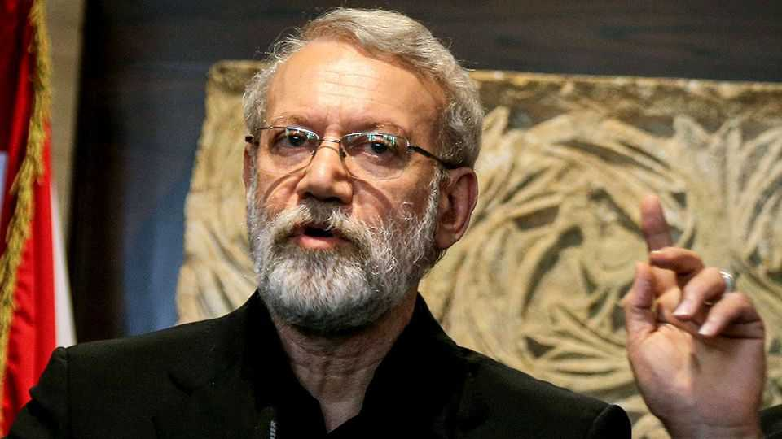
从法律层面看，伊朗设有领导委员会，一旦最高领袖阿里·哈梅内伊（Ali Khamenei）遇害或失能，该委员会将立即接管权力。根据宪法第111条，总统、司法部长及一位资深宗教领袖将组成临时委员会。但实际情况是，已有一个人似乎已凌驾于他们之上。
■
阿里·拉里贾尼（Ali Larijani），伊朗最高国家安全委员会秘书长，正在塑造伊朗的战略，而最高领袖则逐渐淡出公众视野。英国前情报官员林内特·努斯巴赫（Lynette Nusbacher）表示：“他取代了被美国暗杀的卡西姆·苏莱曼尼（Qassem Suleimani），他是哈梅内伊（Khamenei）的幕后大佬。”宪法允许最高领袖将权力委托给他人。近年来，拉里贾尼而非总统马苏德·佩泽希安（Masoud Pezeshkian）代表哈梅内伊与俄罗斯、中国及海湾国家的阿拉伯君主国进行接触。在最近一轮与美国的谈判前，拉里贾尼前往阿曼设定伊朗的立场。■
真主党（Hezbollah）及其他什叶派代理人未能阻止以色列后，哈梅内伊再次将目光转向拉里贾尼——这次他选择一位平民而非圣城旅（Quds Force）负责人，负责处理与黎巴嫩和也门的关系。许多人将其解读为对将领们的谴责。拉里贾尼在1月大屠杀中扮演了关键角色，特朗普政府因此以他姓名为由对他实施制裁。他在政权中的影响力无人能及。他是一位哲学教授——学术专长是伊曼努尔·康德——同时也具备数学家资质，其家族背景深植宗教阶层。■
他的父亲是法士德（Ayatollah），岳父是伊斯兰革命的理论家和伊斯兰共和国创始人鲁霍拉·霍梅尼的得力助手；他的兄弟赛义德·拉里贾尼（Sadeq Larijani）是另一位戴头巾的官员，曾掌管司法系统长达十年。本人曾多次代替哈梅内伊主持周五礼拜，曾在伊斯兰革命卫队（IRGC）任职，担任过四个内阁职位，并担任议会发言人长达12年。他自视为一位忠诚但务实的保守派。他声称在去年夏天的战争中，一名以色列人曾致电他，要求他在12小时内离开伊朗以避免被暗杀，但他挂断了电话。然而野心仍在燃烧；他已三次竞选总统，可能掌握真正的总统权力，与唯命是从的佩泽希安（Pezeshkian）不同。有人认为拉里贾尼的目标更高。■
伊朗伊斯兰共和国已脱去大量宗教外衣；就连哈梅内伊如今也更倾向使用世俗化的“最高领袖”而非“伊玛目”。身着西装的接班人已不再是天方夜谭。“这是一枚不确定的棋子，”努斯巴赫女士表示。拉里贾尼能否改变政权的既定路线？作为文化部长及后任国家广播机构负责人，他打击改革派并公开逼供。然而强硬派从未完全信任他。他批评他们通过舞弊确保马哈茂德·阿哈迈迪内贾德于2009年再度当选总统。他一贯支持核协议，并在担任议长期间推动通过2015年核协议。竞争对手环伺。现任议长穆罕默德·巴盖尔·加利巴夫可能在革命卫队内部拥有更深厚的忠诚支持，并与最高领袖的影响力继承人莫塔巴·哈梅内伊保持着密切关系。■
在三次总统竞选中，他两次因强硬派的阻挠而未能当选。尽管他拥有体制内的资历，但强硬派对他广泛的人脉网络仍心存疑虑。他常穿宽松的黑色衣服，与多数伊朗高级官员偏爱的挺括白衬衫截然不同，这种风格似乎受到约翰尼·卡什（Johnny Cash）的影响。他还有许多西方亲属，其中一位侄子是英国的学术人员，女儿曾在美国任教，直到流亡的伊朗批评者因她父亲的政治立场迫使她辞去大学教职。如果拉里贾尼先生某天真的掌权，并有意在国内和国际上推行正常化政策，伊朗分裂的反对派或其体制意识形态强硬派是否认可他的权威，仍远非显而易见。■
订阅我们的中东简报（Middle East Dispatch），每周获取关于这一引人入胜、复杂且影响深远的地区的最新动态。■
§033 伊朗可能坚持真主党代其作战 中东及非洲 伊朗最强大的代理人原题：Iran may insist Hizbullah fights on its behalf · 板块：Middle East & Africa · 栏目：中东与非洲
几件事情更能体现伊朗支持的黎巴嫩真主党影响力的衰退，莫过于其领导人纳伊姆·卡萨姆（Naim Qassem）的演讲已沦为无足轻重的事件。其前任哈桑·纳斯鲁拉（Hassan Nasrallah）的演讲曾让北部黎巴嫩的基督徒停下脚步。但当卡萨姆本月发表演讲时，贝鲁特的理发店并未特意打开电视，首都公交车上的收音机仍在播放流行音乐。■
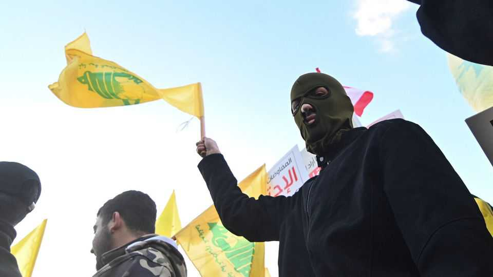
伊朗在黎巴嫩的代理人真主党可能已显疲态，但随着特朗普考虑对伊朗发动袭击，真主党是否会继续为德黑兰作战的问题正搅动贝鲁特。分析人士卡西姆·卡西尔表示，自2024年以色列击毙真主党领导人纳斯拉拉以来，该组织与伊朗的关系愈发紧密，但重燃战火的国内代价从未如此高昂。若真主党将黎巴嫩卷入新一轮战争，其在国内的声望本就因2024年遭受以色列袭击而下滑，届时将面临更大损害。迄今为止，该组织尚未修复过去两年内南部地区遭破坏的任何区域。其政治领袖们正维持着一项微妙的政治安排，以确保其保有武器。■
黎巴嫩官员称，以色列已间接警告他们，如果真主党参与任何战斗，以方将针对黎巴嫩的民用基础设施展开打击，包括贝鲁特机场——这在2024年战争期间并未发生。黎巴嫩总理纳瓦夫·萨拉姆（Nawaf Salam）近期表示：“加沙冒险让黎巴嫩付出了沉重代价，我们希望不被卷入新的冒险。”再次卷入冲突在黎巴嫩将引发强烈不满。自2024年11月停火协议签署以来，以色列已多次对黎巴嫩南部发动空袭。真主党（主要）未作出回应。若其仅在伊朗遭袭时才作出反应，“舆论效果将非常糟糕”，国际危机小组（International Crisis Group）的戴维·伍德（David Wood）表示。然而，真主党的决策既反映伊朗的逻辑，也涉及其在黎巴嫩的地位考量。■
德黑兰已投入大量资源，将该组织打造为其最重要的区域资产。以色列的袭击可能已使其军备减少三分之二，但该组织仍拥有大量远程导弹和数万名战士，足以对以色列以及任何试图彻底瓦解其力量的势力构成威胁。“这是伊朗长期区域战略中构建、维持并指导的更大战略架构的一部分，”贝鲁特政治分析家穆斯塔法·法赫斯表示。该组织的军事翼由伊斯兰革命卫队（IRGC）控制，该机构是政权的军事先锋，其政治领导人则奉行伊斯兰共和国的意识形态。如果伊朗领导人认为其政权正面临生存威胁，真主党的国内政治问题将无足轻重。■
订阅中东简报，每周获取关于一个充满魅力、复杂且具有深远影响的地区的最新动态。■
§034 南苏丹衰败政权濒临崩溃 中东与非洲原题：South Sudan’s decrepit regime is unravelling · 板块：Middle East & Africa · 栏目：中东与非洲
一个国家的国际机场资金枯竭通常不是一个好兆头。然而这正是南苏丹正在经历的现实。今年1月，新任民用航空局局长撕毁了关于过境费的协议，下令所有途经南苏丹领空的国际航空公司向一家据称与总统家族有关联的公司支付费用。航空公司拒绝了这一要求，付款随即停止。如今朱巴国际机场的现金储备日益枯竭，燃油供应紧张，持有执照的空管人员也已陆续离职。■
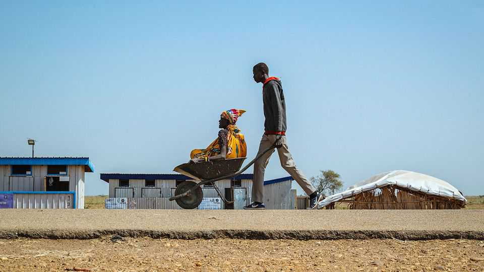
南苏丹唯一国际机场的严峻状况，象征着这个国家更广泛的困境。近期，冲突特别是东北部 Jonglei 州（见地图）的局势急剧升级。人道组织表示，食物短缺几乎遍及全国。然而，身居首都朱巴的南苏丹总统萨尔瓦·基尔（Salva Kiir），自2011年从苏丹独立以来的首位也是唯一总统，似乎并未对此采取行动。观察人士指出，这位74岁的总统健康状况堪忧，其独裁式统治风格日益失控。南苏丹是典型的因年迈独裁者死守权力而陷入解体的国家。当前危机的直接根源在于南苏丹统一政府的瓦解。该政府于2020年成立，是基尔与副总统里克·马查尔（Riek Machar）及其各自族群丁卡族（Dinkas）和努尔族（Nuers）达成协议的结果。■
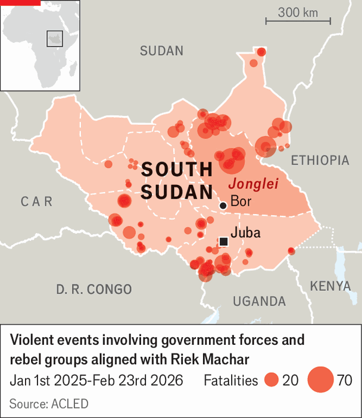
这项协议基本结束了这场内战，据估计2013至2018年间冲突导致约40万平民死亡。然而基尔拒绝落实关键条款，例如军队统一和举行选举。2025年3月，他以军队与马查尔相关努尔民兵冲突为借口逮捕了后者。同年9月马查尔被指控犯有谋杀、叛国和危害人类罪。此后军方与马查尔武装的冲突持续蔓延。2025年1月，叛军攻占国家军队控制的领土和城镇，一度逼近琼莱州首府博尔。仅在琼莱州，暴力冲突已迫使约28万人逃离家园。■
在博尔，近期抵达内部难民收容营的人员报告称，政府军对努尔族村庄实施了残酷袭击。“他们并不区分对象，”35岁的尼亚比尔·帕卡姆说，她2月初被迫逃离时与女儿们失散。一些前往医院的人身上有截肢、枪伤或空袭造成的烧伤。援助人员称发生了系统性性暴力事件。军方声称已击溃叛军，“我们几乎完成任务，”其发言人列举了近几个月收复的北部基地和城镇名称。博尔官员称部分难民已返回家园。但政府是否能重新掌控全国局势仍存疑。一方面，总统可调动的资源已大幅缩减。■
南苏丹通过红海出口石油的能力因邻国苏丹内战而受到限制（尽管12月与苏丹冲突各方达成协议，部分石油运输已恢复）。国际危机集团（International Crisis Group）布鲁塞尔智库分析师丹尼尔·阿凯奇（Daniel Akech）认为，南苏丹总统基尔（Mr Kiir）的“大帐篷”统一政府管理模式因石油收入减少而难以为继。外国援助削减进一步加剧了这一压力。基尔的支持基础因此比以往任何时候都更狭窄。不仅努尔族（Mr Machar的族群）感到被边缘化，观察人士指出，如今总统的亲信圈子几乎仅限于其家族成员。一家原本希望收取空域过境费的公司，也试图从众多其他收入来源中分得一杯羹。■
8月，基尔总统（Salva Kiir）任命其女为高级经济顾问，取代此前被视为总统继任者的本杰明·博尔·梅尔（Benjamin Bol Mel）。三个月后，博尔·梅尔被拘禁在家。总统近期频繁更换官员的行为表明他对任何人都不信任。2月23日，担任财政部长的官员——自2020年以来的第八位财政部长——在任职仅三个月后被解职。1月，一名被任命为选举委员会成员的人后来被发现已于五年前去世。所有这些迹象表明，“我们正处在一个正在崩溃的政权末期”，一位区域专家指出。公众的不满情绪正在加剧。世界银行估计，仅2025年该国经济可能已萎缩30%。朱巴一家政府机构入口处的告示提醒访客，该机构无法提供食物、医疗费用或其他生活必需品的资金支持。■
弗里德里希·艾伯特基金会（Friedrich-Ebert-Stiftung）民调显示，2025年南苏丹人感到不安全的比例是前一年的两倍。军队因连续一年多无法支付士兵薪资，士气持续低迷。基尔总统看来仍能维持执政地位。目前他可依靠邻国乌干达的支持，乌干达军队驻扎在朱巴外围。反对派力量薄弱且分裂，难以对局势产生实质性影响。马查尔阵营的盟友大多分散在海外，其副手纳撒尼尔·奥耶特表示，他们唯一诉求是寻求“调解方案”并重返和平协议。
然而，众多潜在继任者正暗中观察，静待天时。一位高级政界人士对英国研究员乔舒亚·克雷兹表示：“基尔的死讯最先传到谁耳中，谁就将成为继任者。这就是为何我们都在争相争取他的关注，以参与其葬礼仪式。”尽管南苏丹当前的冲突已十分严峻，但即将到来的继任权争夺战或将使局势进一步恶化。■ 注册订阅《分析非洲》（Analysing Africa），每周获取关于世界最年轻、最不为人知的大陆的深度资讯。
§035 乔治娅·梅洛尼正与意大利司法系统正面交锋原题：Giorgia Meloni is taking on the courts in Italy · 板块：Europe · 栏目：欧洲
意大利政府与本国法院历来存在矛盾，但随着3月22日至23日的司法改革公投临近，这种对立达到前所未有的高度——或许自晚年的西尔维奥·贝卢斯科尼声称自己遭共产党法官阴谋陷害以来，从未如此激烈。大部分不满情绪源于对梅洛尼总理及其民粹右翼政府强硬移民政策的裁决。最近一次冲突发生在2月18日，当时西西里巴勒莫的一名法官下令政府向地中海救援移民的非政府组织Sea Watch支付7.6万欧元（约合8.96万美元）。
梅洛尼女士称这一决定令她震惊。这笔资金旨在赔偿Sea Watch因2019年其一艘船只被临时扣押所产生的相关费用。船长在试图突破意大利兰佩杜萨岛附近封锁时撞上了警方船只，当时马泰奥·萨尔维尼作为右翼联盟领导人兼内政部长，曾阻止她靠岸。在随后的法律程序中，法院释放了船长，驳回了指控，并对萨尔维尼提起诉讼，指控其诽谤船长。他的审判被议会阻止。萨尔维尼现为副总理，反对党称此次公投是政府试图惩罚法官和检察官对类似裁决的举措。中左翼民主党议员弗雷德里科·吉安纳西，司法委员会成员，称此举旨在“打击他们并羞辱他们”。■
批评者将意大利的司法改革与匈牙利和美国民粹右翼政府削弱法治的举措相提并论。但这些批评大多言过其实。改革的主要缺陷在于其分散了意大利司法系统最紧迫的问题：司法效率低下。改革针对的是意大利这种奇特的混合司法体系。该体系主要采用对抗式诉讼模式，但仍有部分残留的旧式调查式审判特征，即检察官与法官协作查明真相。他们同属一个专业体系，称为magistratura（司法官体系），参加同一入门考试，有时还可转换检察官与法官身份。将法官与检察官分离一直是右翼的诉求，自1988年此前改革未能实现这一目标以来，这一直是右翼的主张。贝卢斯科尼声称自己是受害者纯属无稽之谈，但法官可能无意识偏袒同僚的怀疑则合情合理。■
拟议法律将使检察官和法官分别隶属于不同的监督机构（尽管均需向同一纪律法庭负责），并禁止职业转换。事实上，两者的路径早在2022年通过的立法中已基本分离。此后，每年仅有1%的人员进行职业转换。不过，消除被告对司法不公的担忧仍值得推进。其他方面则存在更多争议。两个管理委员会成员将通过抽签方式产生：三分之二由各职业群体推选，剩余三分之一则来自议会制定的名单。该名单不可避免地会偏向执政党多数。两个监督机构的副主席将从议会提名的候选人中产生。类似规则也适用于纪律法庭。■
可以认为随机选拔将产生权威和专业能力都较弱的监督者。支持者反驳称，这将是打破司法系统内部政治派系（correnti）垄断的微小代价。2019年的一起丑闻揭示，至少部分correnti成员曾与志同道合的政客串通，操纵敏感职位的任命。这项改革将略微削弱司法系统的正式独立性。但意大利检察官仍将远比法国和德国的同行享有更大自由，后者直接隶属于司法部长。意大利政府仍将无法指示检察官调查哪些案件。司法系统仍将享有宪法保障，确认其为“政府独立分支”，而非“受其他部门管辖”。■
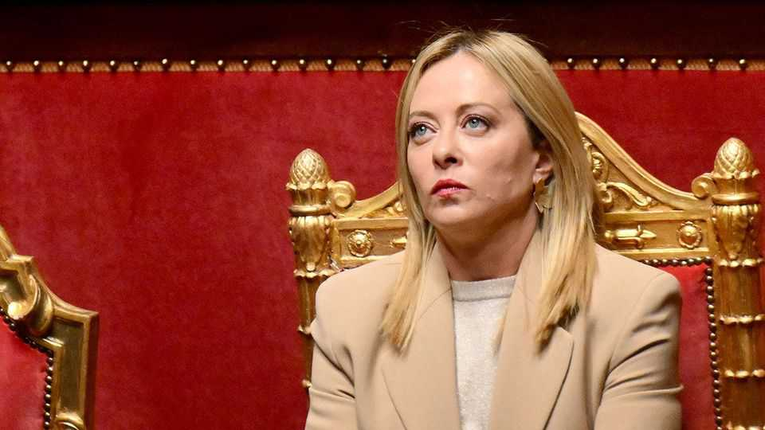
改革最严重的批评在于，它甚至没有尝试解决意大利司法体系最严重的问题。意大利的法院异常缓慢，律师费用高昂。这阻碍了外国投资：企业担心无法在合理时间内追回债务或解决纠纷。根据欧洲委员会的报告，2023年（最新可比数据年份），首次审理阶段平均需511天才能获得裁决，这在欧盟中是第三长的等待时间：只有希腊和匈牙利更糟糕。从法院获得三级审理的裁决需要超过1000天，是成员国中等待时间最长的。按人口比例计算，意大利在欧盟拥有第四多的律师，但法官数量仅为第七少。■
小额索赔的诉讼费用令人望而却步，超过其平均价值的一半。自2023年以来，意大利从欧盟的疫情后复苏基金中获得了最大份额的资金支持，包括23亿欧元用于提升司法系统人员编制。作为交换，意大利承诺推行广泛改革。但改革之路仍漫长。民调显示，下月的公投中，选民将批准政府的改革法案。但他们不应期待这能带来更快、更便宜甚至更优质的司法服务。■ 为掌握欧洲最大新闻动态，订阅我们的周度专属简报《Café Europa》。
§036 乌克兰扩大拦截无人机部署原题：Ukraine is scaling up interceptor drones · 板块：Europe · 栏目：欧洲
他们几乎难以相信自己。在基辅以北的秘密训练场，一群志愿者正在学习无人机击落的基本技巧。这次实验试图重拾战争初期的即兴精神。这支兼职单位包括平面设计师、演员、律师和一名神经学家，更像是《达德利·摩尔》（Dad’s Army）电视剧中的部队，而非禁卫军。但他们认为有责任保卫家园。“我们正在尽可能准备，”新成员奥莱斯桑德拉·阿扎尔金娜（Oleksandra Azarkina，曾任基础设施副部长）说，“我们不知道明天会带来什么。”乌克兰对Shahed无人机的防御是战争的关键前线。
■
最初源自伊朗的现代化无人机，为俄罗斯提供了成本低廉且精准的导弹替代品。与常被用作诱饵或侦察的轻型Gerbera无人机搭配使用，它们构成了俄罗斯对乌克兰经济和电网发动攻势的核心力量。长期以来，乌克兰一直难以找到有效的应对措施，但如今局势正在发生变化，拦截型无人机正成为一种成本效益高的防御手段。志愿者们正在测试的Skyfall P1-SUN无人机是目前最受欢迎的三种型号之一。它介于四旋翼无人机与微型导弹之间。一旦目标锁定，操作员便会垂直升空，随后将无人机向前倾斜90度，使子弹头状的机头率先冲向目标。该无人机时速可达350公里，足以应对俄罗斯螺旋桨驱动无人机的速度。机头末端装有小型炸药，但撞击通常已足够。
只要天气不恶劣且天空未受干扰，这些无人机拦截系统便能发挥良好作用。更先进的拦截器具备半自主能力。由前谷歌CEO埃里克·施密特创立的公司研发的Merops无人机，只需引导至目视范围后即可自动作战。尽管存在量产难题，飞行员仍对其评价颇高。目前领先的是本地研发的Sting无人机（如图所示），其成本仅为2000美元，不到目标无人机价格的一半。第25空降旅副旅长帕夫洛·弗尔霍夫少校指出，可用性和成本仍是关键问题：“如果拦截机成本超过目标无人机，即便击落100%的无人机也毫无意义。”指挥官们表示，这场猫鼠游戏已催生出足以令多数西方武装力量望尘莫及的作战能力。俄军每数月就会重新调整无人机战术。
当俄罗斯操作员意识到Merops无人机从下方发起攻击，利用天空作为掩护锁定目标后，Shaheds无人机随即降低飞行高度。随后它们又引入每两分钟一次的机动动作来欺骗算法。研究坠毁无人机的工程师表示，这些无人机利用乌克兰本国的手机和WiFi网络进行导航，当遭遇干扰时，会借助惯性导航系统在不同节点间切换。乌克兰已取得一定成效干扰这种导航方式，俄罗斯近期转向使用Starlink设备可能是对此的回应。即便在埃隆·马斯克于2月早些时候切断俄罗斯对其卫星的访问权限之前，乌克兰已开始扭转局势。1月时，距离拦截无人机部署已过去一年，乌克兰成功击落了创纪录的1,704架Shaheds——占发射量的一半。其中约70%的拦截行动使用无人机完成，其余则由更昂贵的战斗机、直升机和导弹组合完成。■
第412无人系统旅，又称“涅墨西斯”，承担了六分之一的击落任务。该部队脱离军方官僚体系运作，从战斗到文书工作均实现自动化流程。“我们像初创公司一样工作，”该旅参谋长、前金融分析师亚历山大·比连科夫少校表示，“快速试错、开发新原型、测试并规模化——或者直接打包处理，继续推进。”乌克兰新组建的国防部长团队由35岁的科技天才米哈伊洛·费多罗夫领导，正试图将这种模式推广至整个武装部队。2月23日的新闻发布会上，部长提出了乌克兰夺回战场主动权的三步战略。“关闭天空”是其首要任务。其他两大支柱——提高俄军损耗率、压缩其经济——旨在让弗拉基米尔·普京的战争更加显而易见地失去意义。■
乌克兰指挥官们对应对这一代俄罗斯无人机充满信心。“主要问题在于规模扩大”，比连科夫少校表示。但很少有人认为敌人会停止前进。武装部队已遭遇首批实验性喷气式无人机，其飞行速度达到400–500公里/小时，快于当前的拦截器。有报道称俄罗斯无人机已开始以小群形式作战。若这些项目规模扩大，将需要新的应对方案。前总理兼涅梅西斯专家委员会主席奥列西·霍纳鲁克表示，无人机力量正呈指数级增长。“每年无人机的体积或价格减半，或航程翻倍，”他说。不久后，沙赫德型无人机可能不再是武器，而是用于向城市发射更小型无人机的平台。俄罗斯已利用沙赫德无人机在前线附近发射第一人称视角无人机。■
霍纳查鲁克认为，这最终将需要新的防御措施：由拦截无人机组成的自动发射墙，一旦检测到威胁即可启动，无需飞行员团队。“这听起来可能像科幻小说，但我们在为它做准备，”他说。“欧洲人也应该问自己是否也如此。”■ 为获取最新的欧洲新闻，订阅我们的周度专属通讯《Café Europa》。
§037 欧洲汽车工业一角仍保持繁荣 欧洲 汽车聚焦原题：Why one corner of Europe’s car industry is still booming · 板块：Europe · 栏目：欧洲
保时捷智能电池工厂的机器人数量约为150名员工的两倍。该工厂于2024年在斯洛伐克首都布拉迪斯拉发一小时车程外的霍纳斯特雷达启用。在安静的工厂车间内，自动驾驶穿梭车将零部件运送至工作台，黄色机械臂在此将零部件组装成模块。随后这些模块被送往布拉迪斯拉发附近为大众集团（Volkswagen Group）生产的电池组工厂，再被装入电动保时捷卡宴。该电池驱动的SUV与燃油版及混动版车型一同生产，今年晚些时候将开始交付。■
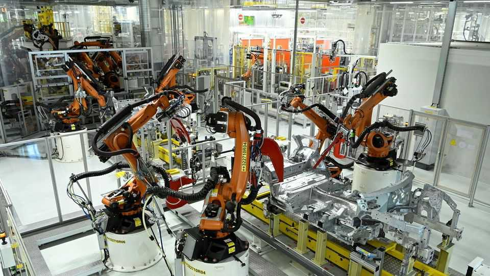
保时捷（Porsche）这家德国企业，如同其母公司一样，据说已向电池工厂投资约10亿欧元（11.8亿美元）。它并非唯一选择斯洛伐克的企业。西欧企业早在三十年前便开始向东欧地区转移，试图在降低制造成本的同时保持对主要市场的接近。斯洛伐克的吸引力不亚于波兰和罗马尼亚等大国。自1991年设立工厂以来，大众集团（Volkswagen）如今已成为该国最大的私人雇主。去年，其工厂共生产了约33.7万辆汽车，包括大众品牌、奥迪、斯柯达和保时捷等品牌。斯洛伐克在体量上远超其实际规模。到2025年，该国将生产近110万辆汽车，按人均产量计算，全球范围内均居首位（见图表）。汽车工业是该国经济的核心，贡献了约GDP的10%，并直接雇用了17万名员工。
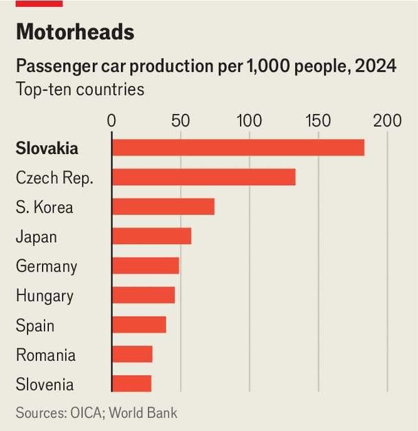
几乎所有汽车都出口到国外，约占斯洛伐克出口总额的三分之一。汽车产业仍在持续扩张。沃尔沃（瑞典汽车制造商）计划投资12亿欧元建设一座专攻电动车（EVs）的新工厂，该工厂2027年投产后每年可生产22.8万辆汽车。沃尔沃工业运营负责人弗朗西斯卡·加博尼（Francesca Gamboni）指出，斯洛伐克拥有高素质劳动力、完善的基础设施和健全的供应商网络。目前有近400家企业服务于该产业。她承认政府补贴起到了一定作用：沃尔沃获得了约27亿欧元的补贴，以将工厂设在斯洛伐克。汽车制造商也积极享受税收减免和其他优惠政策。韩国现代汽车（Kia）在齐利纳（Zilina）设有其在欧洲的主要生产基地。捷豹-路虎（Jaguar-Landrover）和标致-雪铁龙（Peugeot-Citroën）——后者隶属于斯特兰蒂斯（Stellantis）集团（该集团最大股东埃克索（Exor）部分持有《经济学人》母公司股份）——已在斯洛伐克开展大规模业务多年。
该国工业受疫情动荡和欧盟收紧排放规则的影响较小，后者使汽车制造成本上升。欧洲汽车产量自2019年以来下降了超过五分之一，但斯洛伐克仅小幅下滑。部分原因在于向电动车转型的投资。起亚汽车近日在齐利尼亚启动了欧洲电动车生产。纯电池车型销量未达预期，但去年在西欧仍增长近30%。据咨询公司施密特汽车（Schmidt Automotive）统计，此类车型目前已占销售量的近五分之一。然而斯洛伐克对汽车制造的高度依赖，使其在行业波动中异常脆弱。所有企业都面临来自中国低价电动车的威胁，并争相保持竞争力。其他国家也在争夺投资。■
慷慨的政府激励措施和丰富的可再生能源吸引了电池制造商落户西班牙。斯特兰蒂斯（Stellantis）正在摩洛哥快速扩张，受益于低廉的劳动力成本和与欧盟的自由贸易协定。更近的地区，比亚迪（BYD）这家中国电动汽车巨头即将在匈牙利开设其在欧洲的首家工厂。德国宝马（BMW）也选择了匈牙利建设其Neue Klasse电动车的新工厂。比亚迪还在土耳其建设另一家工厂，土耳其与欧盟有自由贸易协定，传闻其可能将西班牙作为第三家工厂的选址。任何严重依赖外国汽车制造商的国家面临的最大担忧是，全球大企业会将投资放在回报最高的地方。斯洛伐克仍处于竞争行列，但竞争正日益激烈。■ To stay on top of the biggest European stories, sign up to Café Europa , our weekly subscriber-only newsletter.
§038 法国左翼激进派正面对一名右翼活动家遇害的冲击原题：France’s far left reckons with the murder of a far-right activist · 板块：Europe · 栏目：欧洲
法国里昂一名23岁民族主义者于2月12日遭致命殴打，多米尼克·德维尔潘（Dominique de Villepin）称此事件是法国的“查理·基尔克时刻”（Charlie Kirk moment）。这位前总理警告称，法国右翼将借此事件将自身描绘为暴力泛滥的受害者，正如美国民粹右翼去年在查理·基尔克（Charlie Kirk）——一名MAGA活动家被谋杀后所做的那样。这种比较并不精确。但奎因坦·德兰克的遇害或将损害民粹左翼，并进一步巩固民粹右翼的势头。■
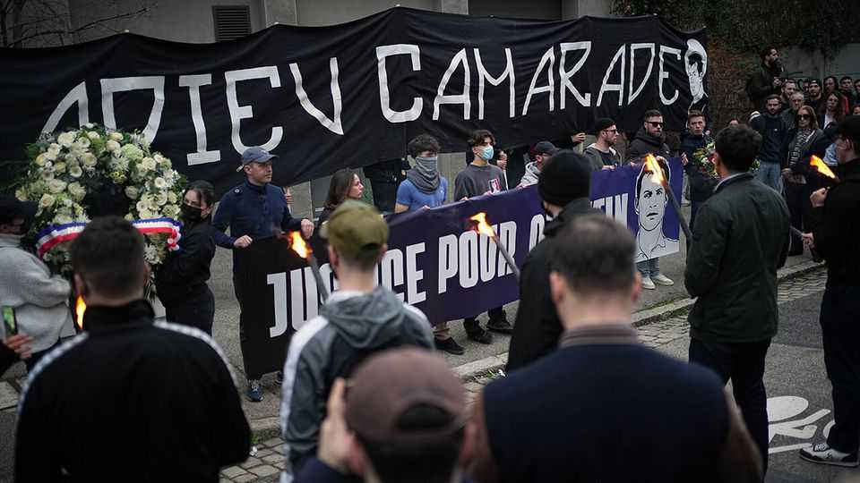
在三月市长选举和2027年总统大选前夕，这一事件也引发了对政治暴力的新担忧。学生活动家德兰库（Deranque）在遭受殴打两天后因脑部受伤去世。视频显示，这看起来像是一场私刑袭击。他当时是保护少数“女权主义与身份认同”抗议者的一员，这些抗议者在里马·哈桑（Rima Hassan）于大学讲座期间聚集，而里马·哈桑是让·吕克·梅朗雄（Jean-Luc Mélenchon）领导的极左民粹政党“不顺从法国”（LFI）的欧洲议会成员。2月19日，7名年龄在20至26岁之间的嫌疑人被司法调查，其中6人被控“故意杀人”。这起谋杀案暴露了梅朗雄政治运动的阴暗面，该运动在拥有577席的下议院中占据71席。其中一名嫌疑人是阿德里安·贝西尔（Adrian Besseyre），他曾为LFI议员拉斐尔·阿诺尔特（Raphaël Arnault）工作。■
阿诺尔特是反法西斯自卫组织Jeune Garde（青年卫队）的联合创始人，该组织去年被内政部取缔。曾因“共谋杀人”被调查的雅克-埃利·法夫罗，是阿诺尔特的议会助理。这起谋杀案也搅动了法国关于政治暴力的讨论。通常矛头指向新纳粹运动和极端民族主义者。巴黎-索邦大学的伊莎贝尔·索米耶研究显示，过去十年中超过60%的政治暴力行为由极右翼实施。主流政党和民粹右翼保持“隔离带”已成惯例，包括玛丽娜·勒庞的国民联盟（RN），尽管该党试图与极端分子划清界限。如今，国民联盟却呼吁对梅朗雄的政党实施“隔离带”。
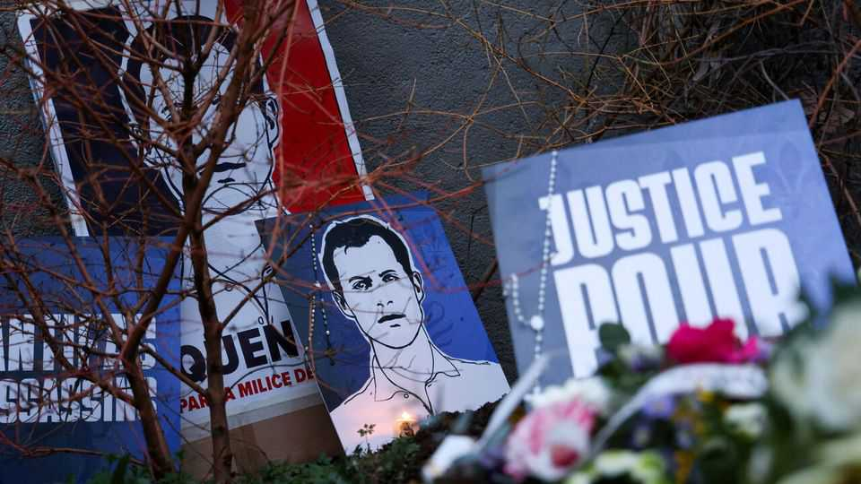
法国国民联盟（RN）主席乔丹·巴德拉（Jordan Bardella）称新人民阵线（LFI）是“民主的威胁”。为塑造捍卫民主政治的形象，RN领导人跳过了一个纪念学生的周末集会，该集会由极右翼民族主义者主导。RN还批评左翼其他政党，包括社会党与绿党，这些政党曾于2024年议会选举中与LFI结盟，但该尴尬联盟现已破裂。公众似乎尚未准备好忽视这起谋杀案。一项民调显示，73%的人认为这标志着“政治暴力正在上升”。索米耶（Sommier）的研究表明这在一定程度上属实：她统计了过去十年内2300起政治暴力事件，相比之下1986至2017年这30年间则有5500起。不过，政治暴力（不包括恐怖主义）导致的死亡仍属罕见。■
自2022年以来，已发生六起类似事件，大致与1986年至2017年间每年发生的数量相当。德兰克的遇害事件并未逃过国际社会的注意。意大利总理乔治娅·梅洛尼称其为“欧洲的伤口”。法国总统埃马纽埃尔·马克龙则反驳称其他领导人应管好自己的事。此事也引发了跨大西洋外交摩擦。美国驻法国大使查尔斯·库什纳——唐纳德·特朗普的密友——未能出席法国外交部长让-诺埃尔·巴罗的召见。美国大使馆曾通过法国版推特账号转发美国国务院的声明，称“期待看到暴力行为的实施者受到正义制裁”。巴罗则谴责此举为干涉，并禁止库什纳与任何法国部长会面。禁令仅在库什纳致电道歉后被撤销。■
要掌握欧洲最重要的新闻动态，请订阅我们的周度专属简报《Café Europa》。■
§039 俄乌战争如何影响西伯利亚俄罗斯欧洲地区原题：How the war in Ukraine affects Siberian Russia · 板块：Europe · 栏目：欧洲
在鄂温克人（居住在俄罗斯远东地区萨哈共和国（雅库特）奥伦尼克斯基区的土著民族）的原始宗教传统中，红色和黑色象征生命与死亡。因此，在最近一次葬礼游行中，人们抬着一个两米高的十字架，上面有对角红黑条纹。紧随其后的小人群后方，一辆卡车载着棺材，棺材上放着一顶军帽。伊戈尔·伊万诺夫（Igor Ivanov）在4500公里外的乌克兰阵亡。伊戈尔·伊万诺夫曾应征成为合同兵，希望赚够钱为孩子们买一套公寓，他的女儿解释道。
但他仅奋战数月便被列为失踪。直到其遗体被发现时，他的儿子也已报名参军并踏上寻找父亲的旅程。儿子如今也下落不明，很可能已遇难。雅库特共和国面积超过阿根廷，但人口仅有100万，其中一半是雅库特人，属于突厥语族。冬季气温降至-60°C，夏季则飙升至40°C。据独立俄媒Mediazona报道，该地区在俄乌战争中已造成超过2500人死亡。这一数字超过了俄罗斯第二大城市圣彼得堡的人口数量，后者人口是雅库特的五倍。雅库特资源丰富，生产全球四分之一的钻石，同时人才辈出：2010年代，它是俄罗斯最引人注目的地区之一。当地曾拥有蓬勃发展的电影产业（被称为“萨哈沃德”），在柏林和首尔的电影节上崭露头角。
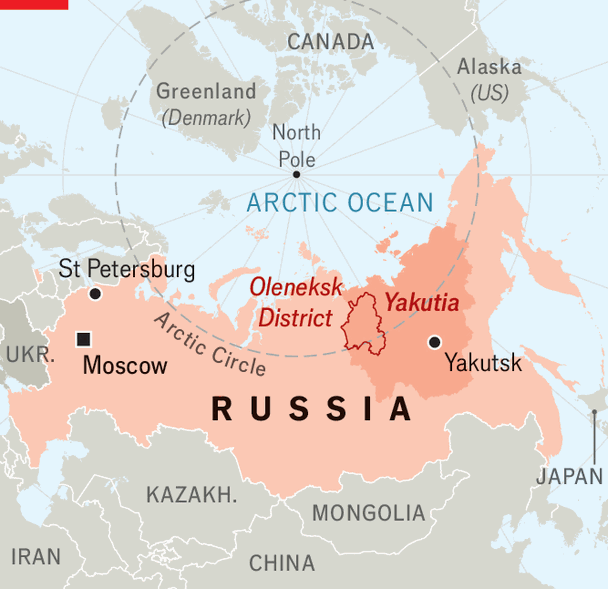
其IT企业包括InDrive（出租车应用，允许乘客与司机讨价还价，在非洲、亚洲和拉丁美洲广受欢迎），本地开发者Mytona（Mytona）于2019年荣获国际移动游戏大奖。该市首府雅库茨克（Yakutsk）选举出一位女性市长，击败了克里姆林宫支持的候选人。当地曾有本土反对派人物：2019年萨满战士亚历山大·加比谢夫（Alexander Gabyshev）徒步前往莫斯科，在红场举行仪式驱除弗拉基米尔·普京的黑暗力量，他此后被关押在精神病院五年。战争来得令人措手不及。一家重要独立新闻网站ykt.ru关闭，称“多年来承受压力，但现在国家正严重封闭自身”。该网站创办人亚森·托姆斯基（Arsen Tomsky，InDrive开发者）将员工移居海外，Mytona则迁往新西兰。■
2022年秋季动员开始时，约400名雅库特女性在雅库特斯克市中心广场跳起了传统的奥斯乌哈伊圆圈舞，高喊“让我们的孩子活下去”。她们很快被驱散。如同其他人一样，雅库特共和国的居民已适应战争。他们购买中国商品而非日本商品，学会了谨慎说话。在新主人的管理下，ykt.ru网站如今发布娱乐和房产信息，而非新闻。制裁导致钻石开采公司阿尔罗萨关闭矿井并削减慈善捐赠，包括资助监测驯鹿迁徙的经费，这曾帮助牧民防止家养驯鹿与野生驯鹿接触。2024年，奥伦埃斯克因该事件损失了四分之一的驯鹿群。在雅库特斯克，征兵海报随处可见。被俘获的乌克兰装甲车被拖过整个俄罗斯，如今在公园展出。■
一月里，一名少年爬进一辆车，因金属部件坠落砸中头部身亡。在村庄里，妇女们编织迷彩网并把驯鹿皮送往前线。尽管战火纷飞，许多逃离的人却陆续返回，被这里的自然环境和祖先文化吸引。“感谢上帝我出生在雅库特（Yakutia）”，一位当地司机微笑着停下车，靠在路边木制图腾柱旁。尽管寒风凛冽，他仍光着手放在上面，以接收其能量。■ 要了解欧洲最大新闻，请订阅我们的周度会员专属简报Café Europa。
§040 奢侈品是欧洲对虚荣的全球性税赋原题：Luxury goods are Europe’s global tax on vanity · 板块：Europe · 栏目：欧洲
欧洲
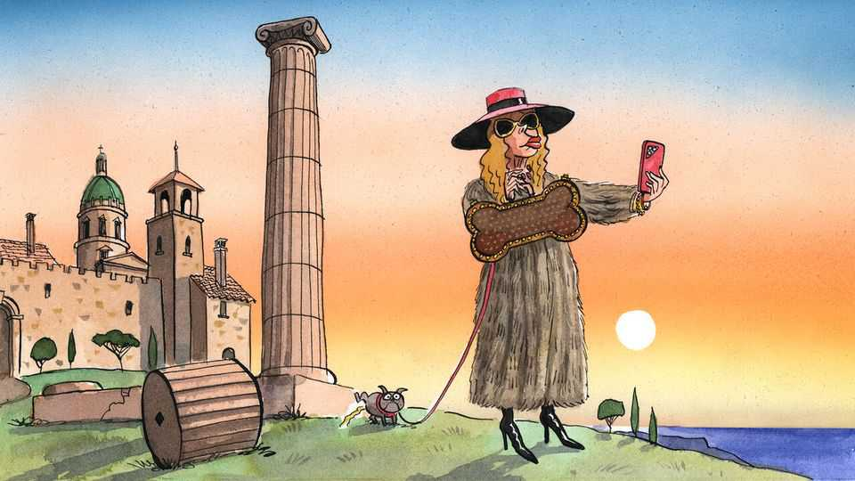
欧洲经济或许如同潮湿的法棍般软弱无力，但若你在巴黎更富有的街区逛橱窗，便不会察觉这一点。假设你正在寻找一个骨形皮革箱子，专门用来装两个碗以分发狗粮，尽管这无疑是生活中次要的必需品。路易威登（Louis Vuitton）恰好有此商品，售价仅为1.5万欧元（约合1.77万美元）。预算紧张的消费者或许会选择爱马仕（Hermès）的摇马，虽然同样不必要，但价格便宜得多，仅需4600欧元。感觉有点拮据？不妨选择迪奥（Christian Dior）的凉鞋，每双仅需410欧元。
除非查理曼的欧洲同胞们集体中了彩票却忘了告诉他，否则事情似乎有些不对劲。谁会购买这些奢侈品？答案，多年来一直是：“不是欧洲人”。起源于向米兰贵族和巴黎情妇出售小饰品的奢侈品行业，如今更多地服务于佛罗里达房产开发商、阿拉伯酋长或中国富豪。从商业策略角度看，这确实是个聪明的手段；LVMH创始人伯纳德·阿尔诺（Bernard Arnault）曾一度成为全球最富有的人，他旗下品牌包括路易威登的狗粮包装盒、古董香槟等非必需品。但欧洲在奢侈品市场（全球约80%的奢侈品牌源自欧洲）的持续主导地位，说明其文化霸权的余威犹在。令人意外的是，欧洲仍是能以价格换取独特魅力的地方。
在奢侈品领域，欧洲是少数几个仍具优势的行业之一（若不考虑规则制定）。讽刺的是，一个推崇平等的大陆，其在全球GDP中的占比持续下降，却孕育着一个以不平等和巨额利润为生的产业。这种将渴望转化为现实的魔法还能持续多少个季度？阿尔诺及其香奈儿、普拉达和劳力士的追随者们兜售的并非普通饰品，而是对欧洲生活方式的象征——一种主要存在于富裕外国人想象中的生活图景。若欧洲是一座露天博物馆，其最富有的访客最终都得通过古驰礼品店的门离开。MAGA群体可能嘲笑欧洲沉溺于官僚主义与移民的狂欢。■
但他们仍渴望获得欧洲的认证，因为他们认为这种认证能将俗气的奢侈品提升为有品位的象征。（阿诺尔特先生是少数受邀参加特朗普去年就职典礼的欧洲人之一。）中国向欧洲倾销廉价工业品，但其经济精英却热衷于通过进口Loro Piana小牛皮 loafers（€1,050）来彰显身份。过去，中国的富豪和美国的富人可以告诉自己，挥霍圣罗兰袖扣或迪奥高级定制礼服是扮演巴黎贵族的一种方式。但这种说法如今已和垫肩一样过时。我的专栏作者认识不少真正的巴黎贵族，他们中没有人携带狗骨形手提包，也从未考虑过是否要拥有迪奥礼服。不断上涨的价格已让卡地亚和芬迪等品牌所售的许多奢侈品超出了欧洲富裕中产阶级的购买力范围。
在香榭丽舍大街附近奢侈品店前排队的韩国人似乎并未察觉，欧洲人早已不在这些队伍中。当地人有更重要的事情要做。即便法国和意大利人原本渴望购买奢侈品却已难以负担，这些商品却已几乎成为外国富裕人群的标配。奢侈品牌贩卖稀缺性概念，大量公关人员解释说，Birkin手袋长达数年的等待期源于工匠数量不足。这是一则用精致丝绸编织的童话。奢侈品行业自2000年以来规模大致增长三倍，其年销售额约3580亿欧元（相当于半个沃尔玛或亚马逊）的数字，揭示了所谓稀缺性已彻底融入主流。五十年前，路易威登仅有两家门店，均位于法国。■
如今，它在宁波设有两家门店，宁波是中国第34大城市。这难道不是专属特权吗？或许应该赞扬欧洲人，他们曾目睹一群傻瓜愿意等待数年只为购买价值5万欧元的瑞士手表，并心甘情愿地掏钱。从前，欧洲的教会曾出售赎罪券以缩短信徒在炼狱中的苦刑。如今，奢侈品的高僧们则出售些小玩意儿，旨在缩短客户在社会底层的滞留时间。美国出口F-35战斗机，韩国出口K-Pop音乐。欧洲找到了一种方式来出口自我价值感。比利用全球有游艇阶层的自卑心理进行诈骗更糟糕的骗局，恐怕还不存在。如果渴望成为亿万富翁的人们愿意花费数千英镑来抵御中年危机，为何不确保他们购买欧洲品牌？这种手工缝制的欺诈行为创造了大量高薪岗位。欧洲人能让中国人感到高雅，同时还能资助他们的福利国家。■
唉，迹象显示，这种奇迹可能难以持续。在Monogram工业综合体的讨论中，人们正谈论一个“正常化”时期，这不过是销售下滑的奢华说法。阿诺德（Arnault）如今仅位列全球第七富有的人，被六位美国科技新贵取代。一些超级富豪在奢侈品上投入更多，例如挥霍在定制限量版产品上。但许多人正转向体验消费，伯恩斯坦（Bernstein）投行的路卡·索尔卡（Luca Solca）表示。而高端酒店早已遍布全球，远不限于欧洲。更令人担忧的是，全球精英（除欧洲外）终将有一天炫耀财富，无需向法国或意大利企业支付贡品以换取特权。一些美国品牌，从Coach到Ralph Lauren，已进入奢侈品领域，尽管主要集中在低端市场。
近年来，中国涌现出一批高端奢侈品供应商，他们以爱国姿态呼吁本地消费者将奢侈品消费转向本土企业。欧洲对虚荣的隐性税终将过时。■ Subscribers to The Economist can sign up to our Opinion newsletter, which brings together the best of our leaders, columns, guest essays and reader correspondence.
§041 美国的福利国家比你想象的更欧洲化 财经版原题：America’s welfare state is more European than you think · 板块：Europe · 栏目：欧洲
想象一个陷入困境的家庭。母亲生下了第二个孩子。政府为其产前护理、分娩及新生儿医疗费用埋单。她将在五个月产假期间获得五分之四的工资，丈夫则可享受三个月带薪假期，均通过政府计划实现。之后他们还能依靠补贴的育儿服务和儿童税收抵免。等到婴儿儿子进入托儿所时，女儿已三岁，可入读州政府资助的学前班。 ■
当然，如果父母中有一方失业，这并不算灾难性的，失业救济金可以在一段时间内替代大部分工资。如果情况变得非常严峻，他们还能获得食物援助。这一切听起来像是法国或德国——当然不是美国，一个以低税率和简陋社会福利著称的国家。事实上，在马萨诸塞州，年收入约5万美元的家庭也能享受这种福利。超过10个其他州，包括加州和纽约这样的大州，也向居民提供欧洲风格的协议：高税收和慷慨的福利。欢迎来到美国的福利国家。当威廉·贝弗里奇在20世纪40年代为英国发明福利国家时，他旨在消灭“五大恶”：贫困、疾病、无知、肮脏和懒惰。■
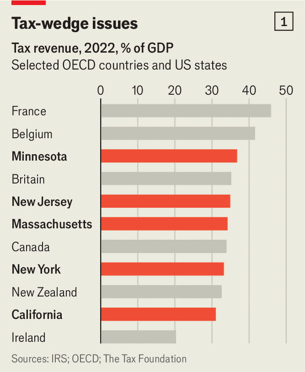
他建立了一套儿童津贴、产假、失业保险、残疾补助、全民医疗和养老金的安全网。与西方其他民主国家不同，美国联邦政府仅对州养老金（社会保障）和老年人医疗（医疗保险）负全责。它为儿童税收抵免（提供大量资金）以及贫困人群的医疗保障和食品援助（通过医疗补助计划和补充营养援助计划分别提供相当可观的资源）。在产假方面，美国政府则显得无能为力。因此，各州提供的服务差异极大，公民的税负也各不相同。一位贫困的单身母亲在慷慨的明尼苏达州可获得约1万美元的现金和食品补贴——这相当于她在阿肯色州所得的两倍。纽约州一半的新生儿医疗费用由医疗补助计划承担，而怀俄明州仅三分之一。
马萨诸塞州（Massachusetts）每周提供的失业救济金大约是新泽西州（New Jersey）的六倍。纽约州居民承担的税收负担——包括州和联邦税收——约占该州GDP的33%（见图表1），这一水平远高于得克萨斯州或佐治亚州居民仅向GDP中转移的微薄23%。美国的福利国家往往比欧洲更早削减支持。领取救济金一年后，加州居民获得的救济金仅相当于其典型工资的10%以下，而OECD成员国（主要为富裕国家）的平均水平接近40%。在13个规定必须提供带薪育儿假的州中，基本带薪育儿假持续约12周。即使最慷慨的州允许额外增加6至12周，这一时长仍远低于欧洲常见的50周左右。但只要这些福利政策有效，部分方案的慷慨程度已与欧洲国家相当。■
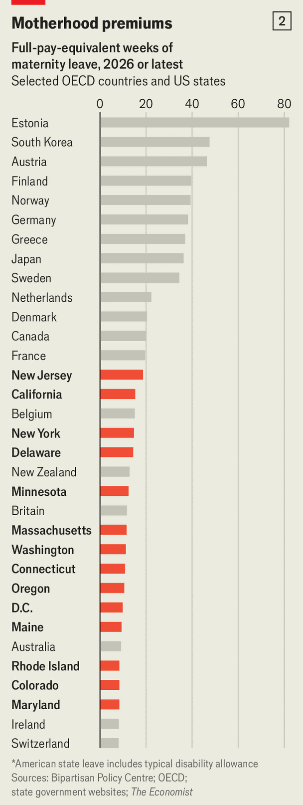
美国人在失业后的前几个月能获得超过一半工资的福利，使他们比被解雇的奥地利、芬兰或英国人处境更好。由于美国的带薪休假计划替代了更大比例的产假工资，美国母亲可享受的全额带薪周数与其他发达国家相当（见图表2）。按此标准，新泽西州的福利水平与法国相当，马萨诸塞州接近英国，加利福尼亚州甚至优于澳大利亚。各州正从“民主实验场”中成功的实践案例中学习，正如联邦主义支持者长期以来设想的那样。对加利福尼亚州带薪休假计划的研究发现，该计划提高了母乳喂养率，使更多婴儿接种疫苗，减少了住院病例，甚至降低了儿童贫困率。■
它似乎也不会损害女性的职场发展路径或影响雇主的利润。后来跟进的州也从加州的教训中吸取了经验。例如，加州最初设定的工资替代率过低，以至于贫困家庭无法承担因育儿而放弃工作的代价，斯坦福大学的马雅·罗斯因-斯拉特（Maya Rossin-Slater）指出。这些政策直到去年才被永久实施。因此，其他州学到的经验是：从一开始就提供慷慨的补偿，尤其是对低收入工人而言。加州的方案之所以被广泛效仿，不仅因为它有效，更多是因为许多州对国会僵局中迟迟无法出台联邦方案感到不耐烦。这种冲动可以理解，但也带来了问题。一方面，在全国性政治格局下，随着地方报纸的衰落，选民对州级事务的关注度本就有限。■
根据民调，三分之一的民众无法说出自己所在州的州长姓名。这意味着民主问责机制减弱，贪污腐败和欺诈行为的空间增大。明尼苏达州可能因涉及新冠疫情纾困资金和医疗补助计划的诈骗案损失高达数十亿美元。公民缺乏认知也导致相关福利的申领率低于预期，整体效果因而大打折扣。加州在六年前推出带薪休假政策后，仍有半数劳动者未曾听说过这项政策。罗斯林-斯莱特女士指出，参与度增长缓慢，至今仍未普及。参与程度很大程度取决于雇主的意愿。她研究了提供相似职位且薪资相近的企业，发现其采用带薪休假政策的差异显著。州政府推行的政策还有一个重大弊端。■
由于除小州佛蒙特州外，美国各州都必须依法实现预算平衡，因此在经济衰退期间，当税收收入骤降时，它们往往难以维持对社会安全网的慷慨支出。而正是在这一时期，公民的生活状况最为脆弱。这使得各州不得不依赖联邦政府。在深度衰退期间，联邦政府确实会提供援助：新冠疫情刺激计划为各州提供了大量额外资金，部分用于补充失业救济金。但此类救济往往具有临时性，一旦援助结束，各州便陷入两难。若各州利用这些资金削减所得税（如疫情期间许多州的做法），困境将更加严峻。然而，这一切似乎并未阻止各州向欧洲模式靠拢。例如，提供带薪家庭假的州数自2017年以来增长了四倍，当时仅有三个州提供此类福利。■
约三分之一的美国人（1.14亿人）如今居住在享有此类支持的州。过去五年间，又有九个州推出了针对雇主的自愿带薪休假方案。这些州包括像佛罗里达州和德克萨斯州这样的保守地区。德克萨斯州的巴黎的新母亲们待遇不如法国首都巴黎的同行，但两者已不再相隔千里。■ 如需获取关于经济、金融和市场领域重大新闻的专家分析，请订阅我们的周度专属通讯《Money Talks》。
§042 希思罗机场扩建项目或将创下天价原题：Heathrow’s expansion is on track to be eye-wateringly expensive · 板块：Britain · 栏目：英国
当乔治·奥斯本在2010年代担任英国财政大臣时，他深知仅靠削减开支无法推动经济增长。经济需要一些甜点来搭配西兰花：一个象征性的基础设施项目，以表明国家正在投资未来。对奥斯本而言，力推高速2号（HS2）铁路项目是完美的甜点选择。这条连接伦敦、伯明翰及北部的拟建铁路线将“重塑英国的经济版图”，成为“增长引擎”。现任工党财政大臣拉切尔·里夫斯在2024年也继承了复杂的财政困境。 ■
她回应道：“从不刻意原创，我遵循奥斯本先生的配方。”这次的“绿色”是难以消化的增税，而“甜点”则是伦敦希思罗机场的第三条跑道。两位财政大臣都正确地将基础设施建设作为优先事项。更优质的交通网络意味着思想、人员和商品能更高效地互通，从而提升生产率。第三条跑道，甚至比HS2项目更显理所当然。对于一个以服务和人才为贸易核心的开放经济体，每新增一条航线都能拓展英国的辐射范围。然而，建设该跑道的尝试屡屡受挫，西伦敦居民因噪音和空气质量问题激烈反对。希思罗机场目前高度拥堵，每条跑道的航班量超过竞争对手如阿姆斯特丹史基浦机场（拥有六条跑道）的两倍以上。不作为威胁着希思罗机场作为全球枢纽的地位。任何严肃的增长政策都应解决这一问题。■
HS2高铁（High Speed 2）也是基础设施项目可能遭遇问题的警示案例。2012年政府的提案曾预测，这条铁路将在2026年开通，成本为330亿英镑（约合530亿美元）。此后，其三条线路中有两条因成本问题被取消，仅剩的伦敦至伯明翰段也推迟至2030年代末。目前成本预计将超过1000亿英镑（约合1.6万亿美元）。希思罗机场已初现HS2项目曾面临的困境。该项目的工期设定看似不切实际。政府希望于2029年获得规划许可，跑道于2035年投入运营。但法律挑战不可避免——既在政府今年夏季公布《机场国家政策声明》后，也将在规划决策作出后随之而来。■
工党试图通过限制司法复审的机会来加快进程，但尚未采取更激进的措施——例如针对希思罗机场的专门立法——以彻底杜绝挑战。更令人担忧的是成本问题。希思罗机场有限公司（HAL，该机场运营商）计划通过私人资金资助该项目，并通过向航空公司收取费用收回成本。（德蒂顿男爵（Lord Deighton）曾担任《经济学人》集团主席，此前也担任HAL主席。）该公司预估，机场扩建和现代化工程在2024年价格水平下将耗资490亿英镑，相当于建造约40家医院，成为史上最昂贵的机场扩建项目之一。目前，该机场已位列全球第二大昂贵的客运机场（见图表）。拥有英国航空并运营希思罗机场60%航班的国际航空集团（IAG）仅在扩建成本不超过300亿英镑时支持新增跑道。■
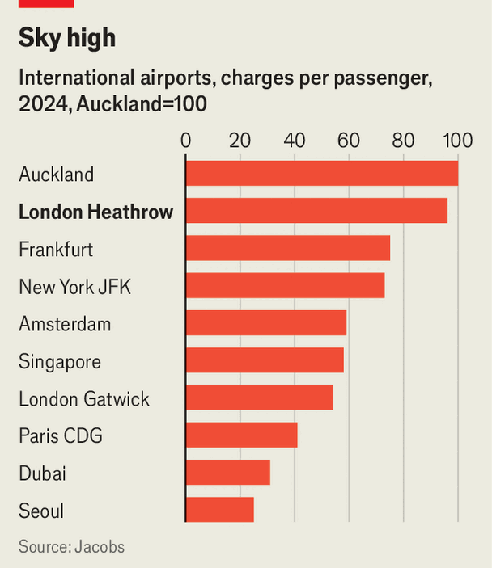
英国航空集团（IAG）的乔纳森·萨利文警告称，当前计划可能导致降落费翻倍（目前每人26英镑，而盖特威克机场为13英镑）。希思罗机场首席执行官最近表示，额外费用将达15英镑，但对其适用范围尚不明确。显而易见的问题是，为何铺设略超两英里的沥青竟需数十亿英镑。要寻找答案，可参考HS2项目，该项目曾面临类似的高昂成本压力。两个项目均涉及在伦敦密集城区进行建设。机场被住宅和道路包围，可用空间不足其主要欧洲竞争对手的一半。2014年估算的土地收购成本至少为40亿英镑，如今可能更高。跑道还需建在M25高速公路最繁忙路段，该路段日均通行车辆超过20万辆。■
英国僵化的规划体系导致了进一步的成本，其中最无关的利益相关方往往能通过阻挠程序来获取利益。HS2项目充斥着此类交易，包括为保护蝙蝠而建造的1亿英镑隧道。希思罗机场扩建项目也面临类似风险。仅规划申请的文书成本就预计将超过10亿英镑。此前曾计划投入逾7亿英镑用于邻近住宅的噪音隔音措施。但这两个项目的高昂成本最根本的原因在于其对要求的过度追求，这在英国大型基建项目中是一种奇特的病症。HS2最初旨在提升运力，但对速度的追求导致了不必要的昂贵高架桥和隧道。HAL的规划同样存在过度膨胀的问题。
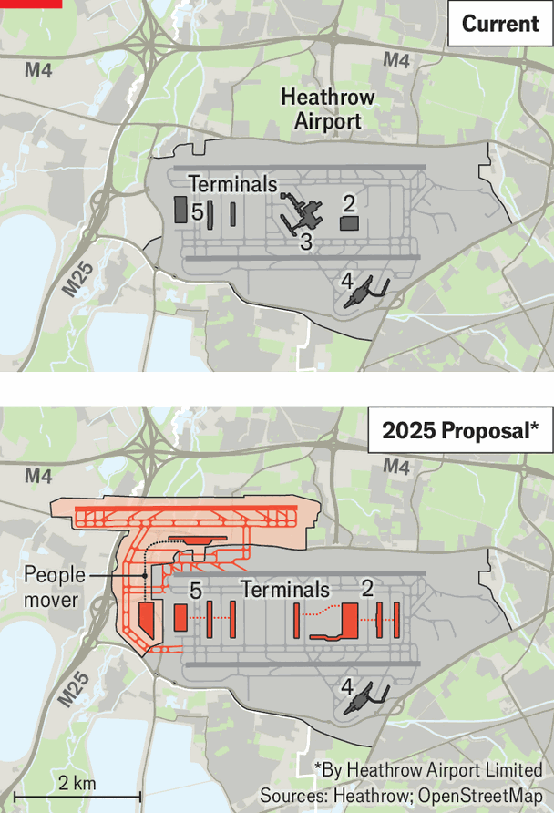
果酱滴管项目耗资13亿英镑用于两个停车场，但最奢侈的开支来自新建航站楼及翻新现有设施的提案，该计划占490亿英镑总预算的270亿英镑。航空金融顾问安德鲁·莱特（Andrew Light）特别指出，建设多个新航站楼并以穿梭巴士连接的方案成本极高。更深层的问题在于，这两个项目的设计本就抑制成本控制。HS2项目承包商按总成本比例获得报酬，这激励他们增加支出，而官员缺乏专业知识来质疑其成本。希思罗机场同样存在类似缺陷。作为拥有强大市场影响力的私营公司，希思罗机场有限公司（HAL）受民航局（CAA）监管，该机构决定机场可收取的费用上限。HAL目前被允许获得其投资的受监管回报率——因此，其支出越多，利润越高。
正如苏利文先生所言，“希思罗机场管理局（HAL）的动机是让整个项目尽可能昂贵。” 英国航空管理局（CAA）正在就是否调整第三条跑道的建设方案进行咨询，相关决定预计将在夏季做出。航空公司则迫切希望增加竞争。印度富豪苏里nder·阿罗拉（Surinder Arora）是多家周边酒店的所有者，他主动提出自己作为替代开发商的方案。希思罗机场管理局（HAL）认为，引入竞争对手运营商将导致数年的延误。尽管他们可能正确，但变革势在必行。第一步应是加强英国航空管理局（CAA），引入顶尖商业人才对成本进行审查。更激进的做法是让独立机构决定需要建设的内容，而非由希思罗机场管理局（HAL）来决定。该机构可以委托希思罗机场管理局（HAL）或竞争对手分别负责不同部分的建设。将设计与施工分离，有助于遏制那些鼓励过度投入的错位激励机制。■
建立这样一个机构可能需要几个月时间，但这是值得的。若无此机构，成本将进一步飙升。即便航空公司能解决经济问题，乘客仍将面临数十年的高价。英国在HS2（High Speed 2）项目上已尝到昂贵的甜头，难以再承受另一个。■ 如需获取更多关于英国重大事件的专家分析，请订阅我们的周度专属通讯《Blighty》。
§043 英国文官系统迎来新掌门人原题：Britain’s civil service has a new leader · 板块：Britain · 栏目：英国
英国文官系统迎来新掌门人，基尔·斯特拉默（Sir Keir Starmer）将命运与安东尼娅·罗密欧（Antonia Romeo）绑定。要理解斯特拉默为何选择安东尼娅·罗密欧担任新任内阁秘书，可参考她2月23日写给英国高级文官的576字备忘录。该备忘录以命令式语气撰写，其中四项要求的第一项是“交付成果”。她写道：“要极度专注地完成任务，主动出击，实现成果。消除障碍，而非制造障碍……明确目标，清晰界定成功标准，并对绩效进行严苛审视。”她本人表示：“我会支持你们在适当风险下做出艰难决策。这就是交易条件。”此前从未有内阁秘书因如此争议性任命而被任命。
2016至2017年担任纽约英国总领事期间，她曾面临职场霸凌及不当使用公款的指控。内阁办公厅调查得出“无案可追”的结论，但前外交大臣西蒙·麦克唐纳爵士试图阻止其任命，称若她是候选人，“尽职调查仍有很长的路要走”。支持者与批评者都认同她擅长迎合部长们的议程，并愿意在推进目标时采取强硬手段。争议点在于这种做法是适得其反，还是英国官僚体系所需的良药。首相愿意承担这一风险。其内阁目前陷入僵局，他抱怨机构“杠杆”反应迟钝，政策制定后便搁置不管。■
2月12日，他解除了克里斯·沃姆利德爵士（Sir Chris Wormald）的职务，后者是一位低调的官员，此前担任英国最高级文官仅一年多，而原本任期可能接近十年。相比之下，安妮塔女爵士（Dame Antonia）则承诺（在其备忘录第四项中）将注入“充满活力且可见的领导力”。她呼应了基尔爵士（Sir Keir）对科技重塑英国政府（Whitehall）的热情：在她的新办公室里，史蒂芬·惠特（Stephen Witt）撰写的《思考机器》——介绍芯片制造商英伟达（Nvidia）的专文——与彼得·亨内西（Peter Hennessy）的著作并列摆放，后者是英国政府历史学家。批评者提出了两点疑虑。其一是，尽管基尔爵士反复提及“重塑国家机器”，但他始终未能在理论或实践中明确界定这一目标的具体含义。国家规模与职能的界定本质上是政治性问题，唯有他本人能够回答。单纯让旧体系运转得更炽热可能并不足够。■
第二，内阁秘书的职责不仅仅是推动事务落实。他们同时是55万名文官体系的管理者，也是首相最资深的顾问。这一职位融合了文官体系中两种相互矛盾的理念：一方面要为部长们服务，另一方面也要为国家利益对权力说真话。批评者质疑安妮塔·戴姆是否足够坦率地向上司直言：她职业生涯中最大的灾难——对矫正服务的私有化操作失误，就发生在明知该计划可能失败的情况下仍强行推进。如今更微妙的挑战接踵而至：从王室继承人中剔除安德鲁·蒙巴顿-温莎，以及公开数以千计涉及前大使彼得·曼德尔森的文件。一位白厅观察者总结了对她的考验：“她是否完全掌握部长们的议程？她是否能给出切实可行的建议？” ■
她的支持者认为，她擅长将政客们模糊的愿景转化为具体计划，并毫不留情地推进执行。“对于习惯空谈的人来说，这并非舒适的存在方式，”一位支持者表示，“她会确保事情发生，相关人员也必须为此负责。”但其他人对她的执行记录持更谨慎态度，这种质疑是否成立至关重要。不仅因为如果她无法“推动落实”，基尔爵士很可能不会连任，更深层的挑战在于英国170年历史的公务员体制的合法性。从左翼到右翼的政界人士都对其能力存疑，右翼民粹政党改革党（Reform UK）甚至承诺进行类似威尼斯总督式的清洗。这是一次严峻的考验。■
如果安托妮亚女男爵（Dame Antonia）未能连任，继任者可能并非老派温和派，而是一位手持电锯的局外人。■ 如需获取对英国重大新闻的深度分析，请订阅我们的周度专属简报《Blighty》。
§044 英国工党对特殊教育需求的处理方式带来希望原题：Labour’s handling of special educational needs offers hope · 板块：Britain · 栏目：英国
作为政策公告，此次发布显得低调。教育大臣布里奇特·菲利普森（Bridget Phillipson）在2月23日公布英格兰学校计划时，白皮书的大部分内容早已被提前披露。即便如此，这场在彼得伯勒一所学校集会上的发布仍具有重要意义。该白皮书承诺增加学校对人工智能的使用、为贫困学生增加资金以及改革学校管理模式，但这些内容在她的演讲中几乎未被提及。当前英国教育的核心问题是如何支持有特殊教育需求和残疾（SEND）的儿童。■
英国约有170万儿童（约占学生总数的五分之一）患有某种特殊教育需求（SEND）。这些儿童的需求范围从沟通和学习困难，到身体残疾、感官障碍及心理健康问题不等。过去十年间，旨在支持这些儿童的服务（包括教学助理和语言治疗师等）不断缩减。如今，家长若想为孩子争取帮助，往往只能通过申请教育、健康和护理计划（EHCP）来实现，该计划赋予其获得充足资金支持的法定权利。自2015年以来，获得EHCP的儿童数量翻倍，目前已近50万。结果形成了一种鼓励冲突的体系。■
学校和家长被迫为争取教育健康和护理计划（EHCPs）而展开争夺，以获得最基本的帮助，这颠覆了一个原本旨在为最严重需求儿童保留此类计划的系统。财政紧张的地方当局（负责资助这些计划）有动机抵制这些计划并设置障碍。与此同时，这种有缺陷模式的成本持续攀升。预计2025-26财年，地方政府在特殊教育需求（SEND）上的支出将达到148亿英镑（200亿美元），是2015-16财年的三倍。工党不寻常地决定直面日益严重的危机。从2030年起，EHCPs将仅限于最复杂需求的儿童。两个额外的、较低层级的支持计划将取代全有或全无的模式，为需求较轻的儿童提供支持。■
这些计划仍将具有法律效力，要求学校做出合理调整，例如为患诵读障碍的儿童提供笔记本电脑或安排专业人员辅导。作为改革的一部分，政府承诺未来三年内拨款40亿英镑，帮助普通学校更好地满足特殊需求儿童的教育需求。另一项承诺是新建5万个特殊公立学校学位。此举应减少需接受非主流教育的儿童对私立特殊学校的依赖。根据财政研究所（Institute for Fiscal Studies）的数据，目前私立特殊学校学位的平均费用是公立学校学位的两倍半。并非所有人都信服。教师工会担忧40亿英镑的拨款不足以弥补多年来的财政削减。
尽管为额外专业人员提供资金是受欢迎的，但鉴于人员短缺，这些额外的人手来源尚不明确。一些家长，尤其是那些孩子曾在主流学校遇到困难的家长，对重新推动融合教育持谨慎态度，因为他们之前曾被失望过。在演讲中，菲利普森女士试图安抚他们。“家长们，请听我说，”她说，强调改革旨在改善，而非削减支持。悲观者也指出，主要改革要到2030年才开始。这种拖延的计划让人联想到工党对成人社会照护的处理方式，即回避并推迟了艰难决策。
对于英国智库IPPR的阿维尼·莫拉里亚（Avnee Morjaria）而言，此类比较并不公平：与成人社会照护不同，问题并非决策拖延已久，而是执行层面的滞后：“我认为无法更快地完成这项工作。”鉴于父母为争取子女权益所付出的激烈斗争，成功的转型始终需要分阶段引入新体系，同时逐步淘汰旧体系。工党政府在权衡这些因素时表现得尤为谨慎，展现出令人意外的政治手腕，这与其此前改革举措的笨拙形成鲜明对比。去年，该党因福利改革政策遭遇自身后座议员的指责而陷入尴尬且损害声誉的退让，当时议员们指责政府为平衡公共财政而牺牲最弱势群体。鉴于特殊教育需求（SEND）议题的高度敏感性，以及首相基尔·斯塔默爵士（Sir Keir Starmer）的弱势地位，许多人担心会重蹈覆辙。■
然而这一次，该党似乎更加团结。部分原因在于，这一议题并未像政府围绕“福利依赖者”的言论那样，将议员们明显划分为左翼与右翼阵营。但内阁成员似乎也从福利政策的失败中吸取了教训。他们推迟了SEND改革计划，先与家长、慈善机构和智库进行磋商（随后却泄露了方案）。菲利普森女士与初级部长乔治娅·高尔花了几小时与持怀疑态度的议员沟通。更广泛的反弹和法律挑战仍有可能出现。但目前来看，这种广泛咨询、公开坦率以及长期规划的结合，似乎表明工党终于找到了一种更具建设性的治理方式。■ 如需获取更多关于英国重大新闻的专家分析，请订阅我们的周度专属简报Blighty。
§045 改革英国的经济计划看起来很像工党的英国 里夫斯 ReJenerated原题：Reform UK’s economic plan looks a lot like Labour’s · 板块：Britain · 栏目：英国
当罗伯特·詹里克被宣布为改革英国的财政大臣人选（2月17日）时，他迅速抨击了主流政党。次日的演讲中，他将工党与保守党（他于1月脱离的政党）描绘为代表“过去30年经济共识的失败”。他坚持认为，尼格尔·法拉格的右翼民粹主义团体将有所不同，将为英国提供“新的经济模式”。然而，詹里克提出的政策听起来却像是拉切尔·里夫斯代表作的翻唱专辑。
他承诺财政审慎，尊重预算责任办公室（Office for Budget Responsibility，OBR）和英格兰银行的独立性，这样的表态本可能出自工党财政大臣之口。詹里克先生对“解放规划”的承诺，与里夫斯女士“支持建设者而非阻碍者”的承诺如出一辙。他那句“我们是‘闹钟英国’的政党”的歌词，与她主张“打造一个能工作的人都去工作的英国”的决心几乎难以区分。詹里克先生剽窃里夫斯女士的政见本身并不令人反感，这恰恰说明英国一些问题的解决方式显而易见。问题在于，里夫斯女士的原版专辑并不够有冲击力。她的高层面建议虽合情理，但她回避了诸如医疗支出上升、不可负担的养老金等棘手问题，而这些问题正是实现她愿景的关键。■
里夫斯提出解决方案，例如在残疾人福利方面，她的政党却予以否决。詹里克的方案同样面临相似的命运。它同样回避了核心问题；他的政党将压制任何残留的经济激进主义。以财政责任为例，詹里克通过引用改革党提出的每年节省250亿英镑（340亿美元）的计划展现其审慎，主要通过削减90%以上的外援并终止对外国人的福利开支实现。但累计来看，这些调整仅能节省国内生产总值（GDP）的0.8%。作为一项计划，它与里夫斯未能应对医疗支出激增这一更大问题的失败如出一辙：英国国家统计局（OBR）预测，到2070年代，医疗支出将几乎翻倍至GDP的14.5%。应对这一挑战需要直面选民，尤其是改革党中占比过高的年长和残疾群体，而这正是两位政治人物都试图回避的。福利政策的困境亦是如此。■
Jenrick先生以承诺恢复福利支付的双子女限制来展示其强硬立场，而Reeves女士刚刚废除了这一政策。但此举每年仅能节省30亿英镑。推动福利支出上升的主因是国家养老金支出，预计在2020年代，按实际价值计算，该支出将每年增加400亿英镑。然而Jenrick先生与Reeves女士均支持不可持续的三重锁定机制，即养老金每年按收入增长、通胀率或2.5%三者中最高者上涨。从政治角度看，这合情合理：73%的改革党选民希望保留三重锁定机制。但这并非新的经济模型。Jenrick先生在净零目标上明显脱节。他的政策应能释放一些机遇，例如北海钻探。然而英国建设的主要障碍并非气候理想主义，而是邻避主义。改革党选民对此尤为敏感。■
五分之四的人反对在绿带地区建设，阻止城市周边的发展。丽贝卡·里夫斯（Reeves）已经不得不削减她的规划目标。詹里克（Jenrick）也将面临同样的压力。里夫斯的其他经济政策乏善可陈。政府的移民政策积极抑制增长；其改善与欧盟贸易关系的举措流于表面。詹里克的强硬脱欧、零移民政策将在两个方面造成更严重的经济损害。他更深层的问题在于，英国不需要一张翻版的专辑，而需要一整套全新的乐曲。如果詹里克真想建立新的经济模式，现在正是开始创作的时机。■ 了解更多关于英国重大议题的专家分析，请订阅我们的周度专属通讯Blighty。
§046 英国原题：It’s a good time to be a British football prodigy · 板块：Britain · 栏目：英国
感谢脱欧，如今成为英国足球天才恰逢其时。2月15日，阿森纳球迷在雨中为马利·萨尔蒙（Marli Salmon）的主场首秀欢呼。这位16岁的后卫在足总杯对阵威根的比赛中登场，这本应是历史性时刻。但萨尔蒙并非本赛季阿森纳最年轻的球员，这一头衔属于马克斯·多曼（Max Dowman，见图），他在15岁首秀后于11月成为欧足联冠军联赛历史上最年轻的球员。两人能在尚未长出体面胡须前实现儿时梦想，正是英格兰足球近年变革的缩影。■
英超联赛首发阵容的平均年龄去年刚刚跌破27岁，创下了历史最低纪录。在联赛中出场的五位最年轻球员中，有四位自2019年以来才首次亮相。十年前，市场上一名天才少年的转会费可能高达20万英镑（约合27万美元）。如今利物浦将至少支付切尔西280万英镑，以签下17岁的里奥·恩古莫哈（Rio Ngumoha），后者今年9月成为红军队史上最年轻的进球者。曼城最近更是花费45万英镑签下了一名14岁的球员。足球经纪公司CAA Base的莱昂·安杰尔（Leon Angel）表示，过去几年青少年球员的转会费已翻了一番以上。青少年球员转会费上涨的主要原因是英国脱欧。欧洲俱乐部长期以来抱怨英超豪门挖走他们最优秀的青训球员。国际足联禁止18岁以下球员的国际转会，但对欧盟成员国做出例外规定——这一漏洞英国已无法再利用。■
结果导致英超青训营可获得的优秀足球人才供应不足，进而推高了人才价格。英超联赛的财务规则近期才开始严格执行，这些规则通过设定俱乐部支出与收入的严格比例限制，反而刺激了对潜力新星的市场需求。这迫使俱乐部急于寻找快速提升收入的途径，例如出售自己青训营培养的球员。过去三年间，切尔西通过出售16名青训营球员赚取超过2.5亿英镑。多家俱乐部同样选择加倍投入。被逼无奈的俱乐部是否能通过投资本土年轻球员培养出更多优秀人才，从而帮助自1966年以来未赢得国际大赛的英格兰男足国家队？已有积极迹象。英格兰队已连续两届夺得欧洲U21青年锦标赛冠军，这是自1980年代以来的首次。
铁磨铁，越磨越利。2003年，塞斯·法布雷加斯（Cesc Fàbregas）从巴塞罗那转会至阿森纳青训营，他为身边所有球员树立了更高的标杆。封闭式青训营若只专注于本土球员，而排斥顶尖大陆人才，长期来看可能难以维持顶级水准。■ 如需获取更多关于英国重大新闻的专家分析，请订阅我们的周度付费简报Blighty。
§047 一项庞大的工程改变了泰晤士河的形态，英国原题：A massive engineering project has changed the shape of the Thames · 板块：Britain · 栏目：英国
，一群滑板爱好者顶着寒风聚集在伦敦市中心黑弗里亚斯桥附近的全新公共公园内。他们穿梭于花岗岩露台之间，在黑色混凝土雕塑间疾驰而下，全然不顾脚下庞大的工程作业。"他们正在给它好好地折腾一番，"这处及多处新公园的建筑师克莱尔·唐尼说道。她对这场"攻击"显得出人意料地乐观。如果说泰晤士河是伦敦的肠道——它曾一度承担类似功能——如今则长出了息肉。
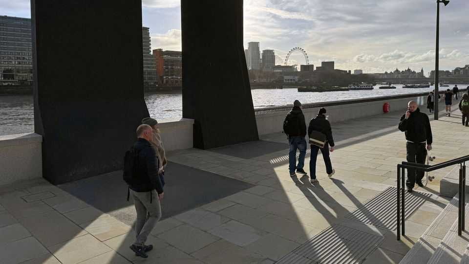
在黑弗里亚斯及泰晤士河沿岸六个地点，从东边的瓦普到西边的普特尼，伦敦已向水中扩张，创造出人们散步和休憩的新空间。从空中俯瞰，这些凸起呈现出不同形状。最大的凸起位于黑弗里亚斯，呈圆角三角形；其他则为半圆形或矩形。除一处外，其余均已开放。这些凸起鼓励伦敦市民以全新视角看待他们的河流。这些凸起是规模宏大的水利工程的可见部分，旨在保护泰晤士河。由维多利亚时代工程师约瑟夫·巴扎尔杰特建造的下水道系统，原本为400万人口的伦敦设计，如今却难以应对900万人口产生的污水与暴雨期间涌入伦敦排水系统的径流。多年来，粗暴的处理方式是将未经处理的污水直接排入泰晤士河，随潮汐顺流而下。■
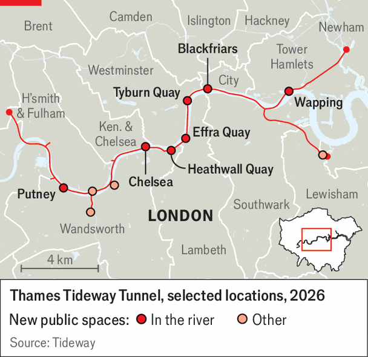
这种情况如今几乎不会再发生。过去十年间，工程师们在泰晤士河下修建了一条新排污隧道，名为“泰晤士河隧道”。当维多利亚时代的河岸排污系统超负荷时，污水会通过宽达20米、深达64米的巨型垂直井筒流入隧道（液体呈漩涡状下落而非直接倾泻）。新建的公园就建在这些井筒上方。Hawkins/Brown公司设计师马克·内斯科维奇（Marko Neskovic）将这些公园比作冰山露出水面的部分。它们也可以被称作升级版的检查井盖。巴扎尔杰特（Bazalgette）的排污工程与同时期的地下铁路建设，彻底改变了泰晤士河的形态。在伦敦市中心，河流被大幅收窄并被花岗岩墙体包围。相比之下，唐尼女士（Ms Donnelly）指出，这些新建设施已经尽可能地缩小了规模。■
许多人正面临用花岗岩装饰的挑战，以融入维多利亚风格的河岸景观。一些雕像已俨然成为河岸景观的一部分，尽管有一处细节暴露了它们的身份。所有雕像都设有高耸扭曲的排气管，用于将地面居民的污水气体排出。维多利亚与爱德华时代伦敦人利用巴扎尔杰特工程打造的大型公共空间，种植公园并安置大量雕像。泰晤士河北岸的维多利亚堤岸上，矗立着纪念诗人罗伯特·彭斯、作曲家阿瑟·苏利文、各类教育先贤以及巴扎尔杰特本人的纪念碑，还有许多其他雕像。该堤岸青铜雕像密集到西敏市议会将其指定为“纪念碑饱和区”，任何新增雕像提案都将默认被驳回。或许如今英国人对本国英雄谱已不再那么自信。■
所有新建的公共空间都包含艺术作品，但它们多为抽象或奇思妙想的风格，而非英雄主义的象征。泰伯恩码头（Tyburn Quay）位于伦敦眼（London Eye）对面，摆放着青铜沙袋；埃弗拉码头（Effra Quay）靠近秘密情报局（Secret Intelligence Service）总部，设有马桶形状的座椅。最引人注目的是纳撒尼尔·科利（Nathan Coley）在黑弗里亚斯（Blackfriars）创作的巨型单体雕塑群，它们在日落时分尤为壮观。尽管黑弗里亚斯的新公共公园种植了精心修剪的树木和灌木，但较小的空间往往光秃秃的，暴露在外。这在夏季或许显得有些疏忽，但实际施工中因需将工人和机械送入下水道井口——所有公共空间均覆盖着访问井盖——而难以添加遮荫植物或结构。这反而会破坏整体设计的初衷。■
新公共空间的设计并非以封闭环境为主要考量，而是作为欣赏泰晤士河的装置。许多场地的护栏设计极薄，几乎在视线穿过时消失无踪。威斯敏斯特和切尔西两地的新空间在大潮时被河水环绕。所有空间都让市民能更近距离接触泰晤士河，并从全新视角——亦或是古老视角——观察它。在巴扎尔杰特将其改造为花岗岩衬砌运河之前，这条河曾更为易达。一些19世纪伟大的泰晤士河绘画，如J.M.W.透纳和詹姆斯·麦克尼尔·惠斯勒的作品，正是从河岸或河面视角创作的。伦敦市民是否会对这条河产生更深的情感，尚待观察。泰晤士河仍是一条浑浊、泥沙淤积的河流，泰晤士河整治局首席技术官罗杰·贝利承认这一点。潮汐与螺旋桨不断搅动着河水。■
泰晤士河上布满了货轮和派对船，其中一些几乎无法移动。但河流如今应该已明显更清洁。而这些船只可以被拖走，但泰晤士河岸的新添设将维持数十年。滑板爱好者将倍感欣喜。■ 如需获取关于英国重大新闻的深度分析，请订阅我们的每周订阅者专属简讯Blighty。
§048 英国政治中的偏执狂风格原题：The paranoid style in British politics · 板块：Britain · 栏目：英国
，偏执狂风格的第一个黄金时代始于20世纪70年代。那是一个英国从首相到普通民众都深信邪恶势力在暗中作祟的十年。前首相哈罗德·威尔逊（Harold Wilson）视提问者而定，时而被指为克格勃（KGB）特工，时而被视作即将成为情报机构政变的受害者。反动军官密谋策划，革命派别则游行示威穿越工会。敌人既在内部也在外部，既在上层也在基层。偏执狂风格的第二个黄金时代正在此刻上演。
近半数英国选民认为“一个秘密团体负责决定所有重大世界事务，例如发动战争”这一说法绝对或很可能成立，民调机构More In Common指出。从左翼到右翼，从富裕阶层到贫困群体，几乎所有英国人都会在面对更简单且更可能的解释时，倾向于选择复杂而阴谋论的解释。正如美国历史学家理查德·霍夫斯塔特（Richard Hofstadter）所称的“偏执风格”（paranoid style）再度流行。在英国日渐衰落的城镇中参加焦点小组讨论，便能直观感受这一现象。伦敦政治经济学院的萨沙·希尔霍斯特（Sacha Hilhorst）指出，腐败已成为人们解读政治的主导框架。他多年研究曼斯菲尔德（Mansfield），这曾是英格兰诺丁汉郡的一个矿业城镇。如何解释这个一度繁荣的城镇如今陷入困境？■
政客们“收受贿赂”、“中饱私囊”、“玩弄权术”。新冠疫情？不过是私有化 NHS 的手段。那些被改建成住宅的城镇足球场？肯定有人从中获利。腐败的谈论已变得如此普遍，仿佛天气一般，成了人人皆可提及的破冰话题。阶级纽带被共同的受害体验取代——对偷窃成性的腐败精英的愤慨。若偏执情绪困扰着“被抛在后边”的群体，它同样萦绕着“领先者”。当中英格兰人反抗英国脱欧公投时，他们选择最荒诞的解释——网络机器人和俄罗斯干预——而非一个普遍反欧盟的国家抓住机会脱离欧洲俱乐部。■
阴谋论思维贯穿了“支持留欧”运动，作者摩根·琼斯在《没有第二次机会》一书中对此进行了生动描述。在脱欧混乱时期，女王曾佩戴蓝色和黄色头饰现身公众场合，这一举动被信徒们视为君主反对脱欧的象征。英国一部分富裕、受过良好教育的群体真诚地相信伊丽莎白二世正通过一顶帽子向他们传递信息。偏执狂热渗透英国精英阶层。当《星期日泰晤士报》发现“工党联合”（Labour Together）——一个支持基尔·斯塔默的智库——未申报73万英镑（约90.7万美元）捐款时，时任内阁办公厅工党部长乔什·西蒙斯正负责该智库。这位未来部长随后向声誉管理公司APCO支付了3.6万英镑，调查此事的来龙去脉。
智库将调查结果提交给国家网络安全中心（NCSC），称其成为俄罗斯黑客的受害者。其他可能性，如认为这是某个内部派系频繁发生血仇冲突运动中的普通泄密，却被忽视了。NCSC并未启动调查。如果真是俄罗斯所为，英国的情报机构却出奇地不以为意。此时，人们通常会开始哀叹：社会纽带的崩裂、现实边界的模糊。确实，英国已变成人们独自用餐、盯着手机屏幕的国度，手机里满是认同自己观点的人，哪怕这种观点荒诞不经。也许正是那些如今已被打破的禁忌，才让人们的怪异想法始终藏在脑海深处。■
这种情况下，偏执狂令人同情。霍夫施塔特在其文章中写道：“我们所有人都受历史之苦，但偏执狂则是双重受害者，因为他不仅受现实世界之苦，还受自己幻想的折磨。”偏执狂也有其作用。霍夫施塔特认为，偏执狂是“能够提前察觉阴谋的先锋派成员，这种阴谋在公众尚未觉醒时便已显现”。他的话几乎带有讽刺意味。但在彼得·曼德尔森身上，这种说法反而显得褒义。左翼网络舆论与《金融时报》反复追问：曼德尔森男爵为何长期维持与杰弗里·爱泼斯坦——这位亿万富翁金融家、儿童性侵者——的亲密关系？■
那些导致某位议员倒台的电子邮件，不过是英国主要商业报纸和那些将《辛普森一家》截图设为头像的网友所堆砌的易燃物上的一簇火星。当人们意识到这起丑闻时，愤怒不已。不如将偏执狂症状视为必要反应，或是免疫系统启动的必要机制。在《确实奇怪的日子》一书中，弗朗西斯·惠恩（Francis Wheen）指出，偏执狂风格并非持续现象，而是社会冲突和末日焦虑引发的周期性现象。上世纪70年代，英国因旧秩序消亡、新秩序构建的斗争而充斥着叛国与阴谋的传言。如今，英国正摸索着走向新的社会共识，过程混乱而疯狂。偏执狂正是身处重大变革时代的人们必然经历的心理反应。■
偏执狂的反面不是冷静分析，而是冷漠。认为俄罗斯是英国所有问题根源的人是疯子；认为俄罗斯与英国毫无关联的人则是傻瓜。英国脱离欧盟的决定如此毫无必要地愚蠢，难怪人们不断反复审视其根源。选民有权要求解释为何公共领域如此衰败，而非被动接受。冷漠是英国无法承受的代价。偏执狂则是关心的代价。■ Subscribers to The Economist can sign up to our Opinion newsletter , which brings together the best of our leaders, columns, guest essays and reader correspondence.
§049 谁代表穆斯林世界原题：Who speaks for the Muslim world? · 板块：International · 栏目：国际
无论是在面对小团体还是大规模集会，土耳其总统埃尔多安似乎总是在考虑比眼前人群更大的观众群体 ■
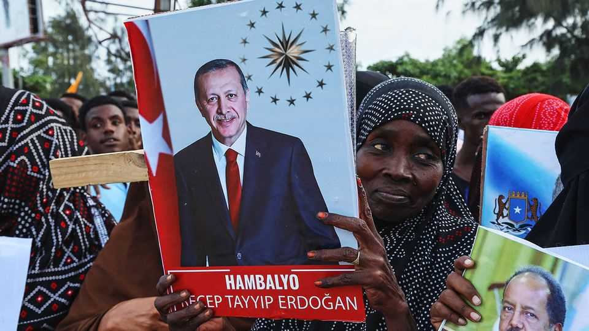
2月中旬，斋月前夕，他发表的演讲似乎并非旨在向在安卡拉总统府集会的80位省长，而是向全球近20亿穆斯林。他称：“愿乌玛不被延续已久的分裂所压垮。”他指的是全球穆斯林共同体。“只要我们紧紧团结在兄弟情谊、兄弟、信仰和梦想之中，凭借真主的许可，就没有我们无法突破的困境。”乌玛没有发言人。自先知穆罕默德于632年去世以来，穆斯林世界再未出现公认的领袖或至高宗教权威。与佛教或基督教类似，穆斯林世界不仅因民族众多而分裂，也因教派众多而分化。尽管许多穆斯林学习阿拉伯语的《古兰经》，但大多数穆斯林并不使用同一种语言。■
埃尔多安用土耳其语讲话——一种仅有一小部分穆斯林能理解的语言。北卡罗来纳大学的塞米尔·艾丁（Cemil Aydin）认为，所谓“想象中的穆斯林公众”正迫切需要代言人这一说法纯属虚构。然而，几位政治人物似乎正在竞逐这一角色。埃尔多安通过为全球受压迫的穆斯林发声，赢得了国际追随者，并在国内赢得了虔诚信徒的支持。伊朗最高领袖哈梅内伊（Ayatollah Ali Khamenei）走得更远，自诩为抵抗穆斯林受压迫的领袖。其他人如沙特王储穆罕默德·本·萨勒曼（Muhammad bin Salman）则强调现代性与温和主义，而非宗教狂热。他们都拥有各自的追随者与反对者。■
但由阿拉伯民意调查网络（Arab Barometer）及其他民调机构的新数据显示，埃尔多安的政策在全球穆斯林群体中最具吸引力。哈梅内伊（Khamenei）则常将当前的斗争描绘成神圣的使命。当美军舰队集结在伊朗海岸时，他佩戴一枚刻有《古兰经》经文的戒指参加宗教学习小组，该经文讲述了摩西从法老手中解救人民、并使傲慢的埃及大军在红海中沉没的故事。然而，作为什叶派领袖的哈梅内伊在占全球穆斯林85%至90%的逊尼派群体中影响力相对有限。此外，伊朗政权频繁且暴力地镇压国内抗议活动，也削弱了其吸引力。就连黎巴嫩、伊拉克等国的什叶派同行，似乎也对这位年迈的宗教领袖逐渐冷淡。■
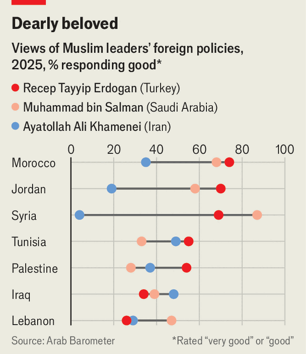
一些逊尼派穆斯林将阿赫迈德·沙拉亚（Ahmed al-Sharaa）视为更可信的信仰捍卫者。他领导了一场伊斯兰主义武装运动对抗以世俗主义为主的巴沙尔·阿萨德政权，因此其宗教信仰从未受到质疑。事实上，通过推翻由什叶派伊朗支持的政权，并击败代表少数教派如阿拉维派和德鲁兹派的民兵组织，沙拉亚赢得了叙利亚逊尼派多数人的认可。黎巴嫩和伊拉克的大量逊尼派穆斯林也因担忧什叶派同胞在政治上排挤自己而对他的成功感到振奋。根据未公开的近期民调，沙拉亚在约旦和沙特阿拉伯也拥有广泛支持。沙拉亚的年轻、时尚的着装品味以及伊斯兰主义与务实主义的罕见结合，或许都在提升他的人气。他的新颖性也可能成为其受欢迎的原因之一。■
但要在拮据的预算下修复一个物理上遭受重创、政治上分裂的国家，这几乎不可能的任务，可能迅速损害他的声誉。穆罕默德王子也是一位主导快速变革的年轻领导人，其资源远超前者。尽管他因沙特记者遇害事件而被许多西方人憎恨，但在穆斯林世界中，他却是一位更受欢迎的领导人。根据阿拉伯民意调查（Arab Barometer，见图表），87%的叙利亚人、68%的摩洛哥人和58%的约旦人对他在地区事务中的角色持积极看法。2021年，澳大利亚智库低伊研究所（Lowy Institute）询问印尼民众对12位世界领导人的看法时，穆罕默德王子是最受欢迎的，57%的受访者表示相信他会“在国际事务中做正确的事”。穆罕默德王子很少谈论宗教话题。■
与以往强调自己作为麦加和麦地那——伊斯兰教最神圣的两处圣地——守护者的沙特统治者不同，他表现出对宗教或道德领导地位的漠然态度。分析人士指出，他从不声称代表整个穆斯林群体，也从未自诩为受压迫穆斯林的代言人。他在沙特国内因其放宽宗教戒律、推广音乐和体育等世俗娱乐而广受欢迎。■
在加沙的轰炸与封锁问题上，这一在穆斯林世界引发强烈情绪的话题中，沙特王子始终极为谨慎，力求避免在沙特或其他地区煽动舆论。彼得·曼达维利（Peter Mandaville）在其著作《宗教软实力的地缘政治》中指出：“当他在宗教问题上发声时，更倾向于强调调和、多元主义与共存的重要性。”但就其全球影响力而言，他更热衷于风投、创新和光鲜的国际会议。相比之下，埃尔多安总统则极少放过谴责以色列在加沙行为的机会。其政府已对以色列内阁多数成员发出逮捕令，指控其犯有种族灭绝罪和反人类罪。2011年阿拉伯之春期间，他同样公开支持相关行动。■
事实上，这正是他阿拉伯世界人气达到顶峰的时刻，尽管其支持率依然居高不下。阿拉伯巴尔米拉（Arab Barometer）的数据表明，埃尔多安长期以来都是中东地区最受欢迎的领导人。他似乎也深受其他穆斯林世界地区的民众喜爱，尽管相关民调数据相对较少。盖洛普2017年的调查显示，在全球约50个穆斯林占多数的国家中人口最多的两个国家——印度尼西亚和巴基斯坦，埃尔多安的净好感度分别为+45和+27。埃尔多安的支持者在突厥语系世界也广泛存在，该地区从阿塞拜疆延伸至中国西部的新疆，以及欧洲的穆斯林群体，包括约400万在法国、德国和荷兰生活的土耳其裔居民。■
2020年埃尔多安访问巴基斯坦时，时任总理伊姆兰·汗调侃称，埃尔多安在该国人气如此之高，甚至能在巴基斯坦大选中“一票全取”。被推翻的嗜血叙利亚独裁者阿萨德据说曾开玩笑说，埃尔多安在叙利亚的受欢迎程度甚至超过他本人——这番话几乎可以肯定属实。乍看之下，埃尔多安的高人气令人意外。土耳其是世俗国家，其总统并无宗教权威，尽管埃尔多安以反对教条式世俗主义、支持土耳其虔诚的农村地区民众而非城市精英而闻名。更重要的是，他的执政记录并不光彩：他削弱了土耳其的民主制度，关押政治对手、压制媒体、清洗官僚体系和武装部队中的潜在威胁。■
他同时在经济管理上也出现了严重失误，先是导致恶性通胀，如今又不得不面对高企的利率以遏制通胀。他在土耳其国内的支持率正在下降。埃尔多安的外国拥趸似乎愿意忽视其错误政策和日益加剧的专制倾向。然而，中东研究所（Middle East Institute）的贡努尔·托尔（Gonul Tol）指出，这种钦佩很大程度上源于外界对土耳其作为繁荣民主国家、与欧洲关系密切的感知——而这些特质正是埃尔多安所破坏的。但埃尔多安的吸引力确实存在现实基础。他执政超过20年（最初担任总理，后转任总统），这使他有机会访问几乎所有穆斯林占多数的国家，包括阿富汗等战乱地区。■
2011年他前往索马里首都摩加迪沙时，他是近20年来首位来自非洲以外的领导人到访。像文莱和科索沃这样的小国也未被遗忘。这或许得益于土耳其企业在非洲和中亚等地的大量投资。摩加迪沙到处都是土耳其的援助人员、商人和教师。埃尔多安不仅愿意现身，更愿意为这些地区关切的议题发声，将自己定位为穆斯林世界诉求的代言人。在索马里的那次访问中，他呼吁国际社会采取更多行动缓解致命的饥荒。在巴基斯坦（以及之后多次联合国演讲中），他批评印度在克什米尔地区的所作所为，该地区由印巴两国分治。
他同样多次抨击欧洲的伊斯兰恐惧症、缅甸对罗兴亚人的迫害以及中国对维吾尔族的不公待遇。“他被视为一位强硬而勇敢的领袖，敢于挑战西方，就穆斯林关切的议题发声。”前巴基斯坦参议员穆沙希德·侯赛因（Mushahid Hussain）表示。埃尔多安刻意塑造这一形象，经常声称自己代表全球穆斯林发声。“在多极世界中，穆斯林世界需要成为独立的一极，”他去年在伊斯兰合作组织（Organisation of Islamic Co-operation）会议上宣称，“我们最大的问题就是缺乏团结。”埃尔多安并非真正的团结者，其政府在中东各地煽动冲突，从利比亚到伊拉克无一例外。■
但土耳其也做出了重大团结姿态，最显著的是在叙利亚长期内战期间收容了超过300万名叙利亚难民（并非全部为穆斯林）。令人印象深刻的是，69%的叙利亚人对埃尔多安持积极看法。最近土耳其提出与巴基斯坦和沙特阿拉伯签署防务协议，评论家称此举为“穆斯林北约”。其他领导人，如沙拉，可能最终与埃尔多安的声望一较高下。土耳其的困境可能最终损害他的声誉。但尽管埃尔多安存在诸多缺陷，他比任何人都更受穆斯林世界信任。■
§050 全球静待冷静方案原题：A stay-calm plan to save the world · 板块：International · 栏目：国际
全球静待冷静方案
如果一艘载有各国元首的船只在暴风雨中沉没，紧随芬兰总统亚历山大·斯图布（Alexander Stubb）身边将是一个明智之举。斯图布总统身上仿佛写着“幸存者”标签。他高大修长，体格健硕，去年夏天秘密参加芬兰三项全能赛时，仅以第二名的成绩位列同龄人之中。更重要的是，57岁的斯图布将“能干乐观”和拒绝恐慌作为其政治生涯的核心。在当前动荡时期，其他世界领导人注意到他的沉稳，并对此表示认可。尽管他的北欧国家仅有560万人，这位冷静的芬兰人却频繁出现在西方领导人危机峰会的议程中。
■
特朗普总统则像一位常联系的短信好友，称赞斯图布先生高尔夫球技高超，以及“强大”的外表。当中等国家领导人哀叹由美国、中国、俄罗斯等霸权主导的世界时，斯图布先生却坚持认为中等国家能够自保，这种自信在达沃斯世界经济论坛上尤为明显。在加拿大总理马克·卡尼指责美国及其他大国导致1945年后秩序“破裂”后，斯图布先生则持更积极的态度。他断言欧洲能够“无条件”抵御俄罗斯的侵略，展现出一位其祖国曾两次击退斯大林军队的国家领导人的自信。他表达了对美欧之间相互依赖关系仍存的信心，尽管特朗普政府不断投掷“意外球”。部分而言，充满正能量正是斯图布先生的政治品牌。■
这位评论员已专业观察斯特布20年，自他首次当选欧洲议会成员以来。在充斥着过气政客和平庸之辈的欧洲议会中，斯特布凭借其才智、野心和自我宣传的天赋脱颖而出。他在南卡罗来纳州获得本科学位，最初凭借高尔夫奖学金入学，这使他成为一位大西洋主义支持者，同时也热衷于欧洲一体化：这种罕见的组合。在培养布鲁塞尔政商界要人之余，精力充沛的斯特布还为芬纳尔航空机上杂志撰写定期英文专栏，认为芬兰国家航空公司的乘客是具有影响力且易于引导的受众。专栏内容可能探讨欧洲可从美国学到的经验，或讨论桑拿浴中裸体的礼仪。■
每位照片中都点缀着斯图布（Stubb）先生的影像，他或做单手俯卧撑、练习高尔夫挥杆动作，或抛洒金叶庆祝秋日。即便他离开布鲁塞尔担任外长后又成为总理，斯图布先生的芬航专栏文章仍持续更新。他拒绝绝望的态度也体现了他真诚的哲学理念。在文章和访谈中，他始终坚信，大多数情况下，包括与外国领导人沟通，都可以通过诉诸他们的理性自利来达成共识。今年他出版了《权力三角：重塑新世界秩序》一书。在这本长篇宣言中，他提出了构建新国际秩序的计划，该秩序能够协调三个竞争性集团相互冲突的价值观与共同利益。■
这包括由美国主导的自由民主政体构成的“全球西方”、由中俄主导的威权政体构成的“全球东方”，以及体量最大的“全球南方”——这些国家对欧美等富裕国家的说教已感到厌倦。斯图布先生的解决方案主张更多倾听非洲、亚洲、拉丁美洲和中东国家，他认为这些国家掌握着全球权力格局。他提议让这些国家参与全球治理的核心决策，首先从联合国安理会开始，将五个常任理事国扩编至十个，同时废除单一国家的否决权。他更强调贸易而非援助。他指出，像从未拥有殖民地的芬兰这样的国家，可能比一些西方国家更容易获得倾听。斯图布计划强调理解即便是最令人担忧的外国领导人如何看待世界。■
他批评西方评论家将俄罗斯总统弗拉基米尔·普京称为“疯狂”。回忆起自己与普京的会面，他称普京“准备充分、分析透彻、战略清晰且沉稳”。同时，作为乌克兰坚定支持者的斯图布承认，普京的帝国野心使得信任他实属愚昧。与中共总书记习近平的三次会晤让斯图布出人意料地确信，中国领导层缺乏俄罗斯统治者那种由历史驱动的修正主义激情。他预测，随着乌克兰战事结束，中国将重新评估与俄罗斯的友好关系，并注意到普京“毫无意义”的战争带来的高昂代价，届时或将重新考虑以武力夺取台湾的野心。■
在《经济学人》推出的视频栏目《Inside Geopolitics》采访中，斯图布先生承认其策略中包含“一丝希望”，即外国领导人“会保持理性”。他巧妙地淡化自己对特朗普的影响，称美国总统是一个秉持悲观零和思维的人，有时会听取斯图布关于俄罗斯的警告。“如果我能种下十个想法中的一个，那就够好了。”在完成书稿后，他坦言对美国是否准备好领导统一西方的信念有所动摇。值得注意的是，斯图布的乐观情绪源于他坚信当前的动荡是暂时的。“我认为世界秩序需要再五年才能稳定下来，”他说道，“风暴中心我们只需保持冷静。”在船难中，这番话是莫大的安慰。风暴终会过去，蓝天终将重现。■
然而，当前的混乱似乎比一阵狂风更为持久。有理由担心，一场全面的革命即将到来，针对斯图布先生试图捍卫的自由秩序的核心价值观。如果崛起中的大国比他所认为的更加愤恨或狂热，那么他所描绘的未来将不会到来。在焦虑的年代，芬兰这位深思熟虑且保持冷静的总统获得全球声誉也就不奇怪了。但他的计划是押注希望，而非生存的保证。■ 《经济学人》的订阅者可以注册我们的Opinion通讯，汇集了我们的社论、专栏、客座文章和读者来信的精华。
§051 欢呼吧原题：Rejoice! Private equity is taking over America’s small businesses · 板块：Business · 栏目：商业
这一天从Solidcore的喧闹黑暗工作室开始，这是一家受普拉提启发的健身连锁品牌。作者在滑动平台上保持平衡，认真地进行平板支撑和交叉腿深蹲，而充满活力的教练则在一旁鼓励她。锻炼过后，她前往Maman，一家法式风情的餐厅。随后在HeyDey进行面部护理，美容师用光线照射作者的脸部，以赋予肌肤更年轻的光泽。
■
随着电子商务逐渐占据消费者商品支出的更大份额，这类服务类企业正逐步占据美国的购物街和沿街商铺。远程办公的顾客会光顾这些场所，以运动或咖啡来调剂工作日。由于居家时间增加，他们也更注重房产维护，如聘请园艺师等支出随之上升。这些趋势背后的技术因素在于：互联网使在线购物和远程办公成为可能。但并非唯一改变美国小型商业的推动力。这位记者走访的每一家商铺，位于她家附近的购物街上，都由私募股权（PE）公司所有。当人们谈及私募股权时，往往想到的是1980年代对RJR纳比斯科（RJR Nabisco）这类消费品巨头的收购，或是2000年代对玩具反斗城（Toys “R” Us）等零售巨头的接管。■
但如今这类巨型交易仅反映私募股权（PE）行业业务的一小部分。目前，85%的私募股权（PE）投资集中在员工不足500人的企业。过去几年，行业一直在大量收购小型服务提供商，从咖啡馆、美甲沙龙到灭虫公司。2016年，私募股权公司已拥有美国十大洗车连锁店中的两家，如今已全部掌控。截至2025年6月的一年中，私募股权占所有空调安装承包商收购量的一半。本地服务提供商对私募股权（PE）具有吸引力，因为它们对互联网影响不敏感。“亚马逊无法为你洗车，无法为你健身，也无法送咖啡。”Franchise Equity Partners这家私募股权公司合伙人Scott Romanoff表示。通常，这类企业会被少数几家收购并合并成连锁体系。一些人可能对此感到担忧。■
私募股权（PE）的刻板印象是其通过大量借贷和无差别裁员获取丰厚短期利润，却导致服务质量下降，极端情况下甚至引发企业倒闭。参议员伊丽莎白·沃伦（Elizabeth Warren）在11月发布的视频中称，该行业“榨取公司资金直至其崩溃”。加州州长加文·纽森（Gavin Newsom）与总统唐纳德·特朗普（Donald Trump）鲜有共同立场，但打击私募股权却是其中之一。1月两人均提出禁止该行业购买单户住宅的措施。私募股权投资者并非圣人，投资组合公司被其所有者为牟取暴利而大肆掏空的例子比比皆是。■
认为私募股权行业在收购企业后管理不善，实际上误解了那些依赖于数年后出售所持企业以向投资者返还资金的投资者的策略。他们出售的对象——大型公司、公开市场投资者或另一家私募股权基金——远非傻瓜。事实上，许多小型企业经过私募股权的管理后，会成长为规模更大、利润更高的公司，更能为顾客创造价值。没有人否认私募股权对借贷的偏好及其挥舞“砍刀”的意愿。然而，要找到广泛负面影响的有力证据却并不容易。据私募股权利益相关者项目（非营利监管机构）统计，美国可能有超过20,000家企业由私募股权持有，其中2024年仅有75家破产。■
最严谨的研究显示，即便债务增加，私募股权（PE）支持的企业违约风险并不比其他企业更高。学者们研究了私募股权是否以更隐蔽的方式损害企业，而不会导致彻底崩溃。宾夕法尼亚大学沃顿商学院的Atul Gupta及其合作者于2021年发表的一项研究，考察了私募股权所有权对养老院的影响。入住这些养老院的患者普遍健康状况不佳：平均而言，六分之一的患者会在机构内或出院后三个月内去世。但Gupta及其团队发现，对于通过美国政府为老年人提供的医疗计划（Medicare）覆盖的患者，若其入住的养老院由私募股权拥有，短期死亡风险高出11%。更高的死亡风险似乎源于护理人员编制削减，这增加了受伤、压疮乃至死亡的风险。■
去年，加州大学的阿什文·加尔吉及其合著者发表的一篇论文显示，竞争在塑造私募股权所有者在养老院行业中的行为方面至关重要。在竞争程度较低的市场中，他们发现与古普塔类似的效果，但在竞争激烈的市场中，私募股权支持的养老院往往拥有更高的员工比例和更佳的评级。对私募股权进入护理领域的谨慎态度可以理解。目前，私募股权公司运营着美国至少5%的养老院，提供约10%的托儿中心可容纳名额，并拥有约12%的牙科诊所。护理行业信息不对称现象严重，不法私募股权高管可能借此牟利。托儿中心的儿童和养老院的居民往往无法有效表达其护理质量。■
即便理性健全的成年人也难以判断是否需要进行昂贵的磁共振成像检查或根管治疗。但顾客在普拉提工作室或果汁吧（smoothie bars）的担忧则相对较少；那些对教练或巴西莓碗（açai bowl）不满的人可以轻易换地方。在某些情况下，私募股权投资者提供的资金实力可能正是小企业茁壮成长所需，尤其是在与大型传统企业竞争时。欧洲央行的亚历山大·波波夫（Alexander Popov）与鹿特丹埃拉斯姆斯大学的彼得·罗森博姆（Peter Roosenboom）于2009年发表的研究指出，在进入壁垒较高的行业中，私募股权投资占GDP比重更高的国家，新企业创立率显著更高。Solidcore的经历表明，私募股权所有权如何能将小企业提升至更高水平。■
布莱恩·迈尔斯（Bryan Myers）表示，他深知“私募股权常被负面评价”，但他指出，若没有投资方（该连锁店由专注消费品行业的私募股权公司L Catterton所有）的支持，Solidcore如今的规模将不到现在的十分之一。最初阶段，Solidcore只能通过再投资利润实现增长，这意味着每年需开设约五家工作室。2017年首次获得私募股权资金后，这一速度翻了一番以上。迈尔斯提到的另一大优势是专业能力。2021年，Solidcore的私募股权所有者帮助其开展了一项价格弹性研究，结果显示，会员制度只有在“你每周每天都来”时才划算。因此，公司降低了会员费相对于单次课程的价格。“这彻底颠覆了我们的商业模式，”迈尔斯说。■
会员费现在占Solidcore收入的60-70%，这一比例较改革前的20%显著上升。公司员工共享其成功成果，教练的薪酬结构为固定费用加其课程收入的一定比例，旨在激励培训师。资深教练若课程满员，每小时收入可达约100美元。过去十年零售业格局的剧变要求企业进行广泛调整。在美国，私募股权资金充裕，投资者纷纷抓住机会将商品零售商替换为服务型企业。美国零售空间的空置率约为4%。而在欧洲，私募股权资金相对匮乏，空置率长期维持在更高水平；英国多数地区空置率是美国的两到三倍。■
消费者可能会抱怨从私募股权（PE）企业购买拿铁或面部护理服务。另一种选择可能是空荡的店铺。■ 如需追踪塑造商业、工业与科技趋势的动态，可订阅我们的周度专属读者通讯《The Bottom Line》。
§052 Sphere将拉斯维加斯的成功经验推向全球原题：The Sphere is taking its success in Las Vegas to the world · 板块：Business · 栏目：商业
风呼啸，树叶在空中旋转，烟雾弥漫整个礼堂，多萝西和托托被巨大的龙卷风卷走。18,000座的场馆内观众屏息凝神，鼓掌欢呼，电影《绿野仙踪》——由华纳兄弟公司通过人工智能技术重制——在15,000平方米的环绕屏幕前展开。位于拉斯维加斯的Sphere，这个巨型球形建筑迅速成为赌城最抢手的门票。如今它正加速推进全球扩张计划。最初这个巨型球体看起来像一场巨大的失误。Sphere的建造历时五年，期间包括了新冠疫情的爆发。■
2023年9月开业时，这座建筑的最终造价达到23亿美元，几乎是业主最初预估的两倍。更糟糕的是，高昂的运营成本使亏损持续扩大。但本月早些时候，这座场馆母公司——由多兰家族控制的公司——发布了令人振奋的消息，投资者的欢呼声甚至超过了《绿里奇迹》（Oz）剧集的观众。2025财年第四季度，Sphere的收入同比激增62%；同期2024年的运营亏损1.08亿美元收窄至700万美元。即便拉斯维加斯2025年整体旅游人数减少，这一强劲表现仍如期而至。投资者信心爆棚：Sphere娱乐公司（旗下还拥有一个正在萎缩的电视业务）的股价自去年夏天以来已上涨近三倍。■
这座未来感建筑的成功部分归功于一部86岁老电影的重新焕发生机。《绿野仙踪》经过巨幕升级并搭配“4D”特效（如震动座椅），自8月上映以来已售出220万张票，收入达2.9亿美元。在 Eagles、后街男孩等乐队现场演唱会的加持下，Sphere场馆将《绿野仙踪》的午间场和傍晚场安排得满满当当，最新季度共举办245场，较去年同期其他演出的190场显著增加。Sphere的管理层正积极接触其他电影版权持有者，期待另一部热门影片能吸引更多观众。制作这类演出成本高昂：重制《绿野仙踪》的成本超过1亿美元。若能将成果在更多场所放映，成本压力会更易承受。事实上，这正是当前的计划。■
阿布扎比计划中的Sphere（球形建筑）即将完成预建阶段。上个月，公司宣布将在华盛顿特区附近的国家港（National Harbor）建设第三座Sphere，计划于四年内开业。公司暗示未来还将公布更多项目。高盛集团（Guggenheim Partners）投资公司分析师库里·贝克（Curry Baker）预计，今年将宣布另一座Sphere，2027年或再推出一到两个项目。这些巨型建筑的成本问题依然棘手。去年第四季度，拉斯维加斯Sphere的折旧和摊销费用占收入的30%。一种解决方案是采用新的融资模式。阿布扎比的Sphere将完全由阿布扎比文化与旅游部出资，该部门将向Sphere母公司支付特许经营费和版税。国家港Sphere则获得2亿美元的公共与私人资金支持。另一种策略是缩减规模。
国家港球体的容量将是拉斯维加斯景点的三分之一，据悉其建造成本预计不到后者的一半。更小型、成本更低的球体或许能在规模小于拉斯维加斯的市场中实现盈利。更多地方会想要这类景点吗？百米高的球体包裹着明亮的LED屏幕，是令人兴奋的旅游景点，但并非所有人都认为这是理想的邻居。两年前，伦敦市长曾拒绝在城市东部人口密集的斯特拉特福德社区建设球体，理由是担心光污染问题。（泰斯谷市长，作为英格兰北部拉斯维加斯的替代者，大度地提出愿意承办，却令人费解地被忽视。）“Oz”公司让球体在拉斯维加斯成为爆款。但当它离开内华达州后，新的试验将随之展开。■
追踪塑造商业、工业和技术趋势，敬请订阅我们的周度专属商业简报《The Bottom Line》。■
§053 植物肉行业陷入困境原题：The fake-meat industry is in trouble · 板块：Business · 栏目：商业
植物肉汉堡曾让投资者垂涎三尺。2019年，生产无牛肉肉饼的Beyond Meat公司以近40亿美元市值上市。次年，美国植物肉销售额激增45%，达到14亿美元。无数初创企业纷纷加入这场盛宴，甚至一些肉类公司也涉足该领域。然而近期投资者热情骤降，植物肉销量出现下滑。如今Beyond Meat市值不足4亿美元，其2025年前三个季度收入同比持续下降，第四季度可能再度下滑。 ■
根据YouGov为《经济学人》进行的民调，美国成年人中表示经常食用这类产品的比例一直维持在个位数。与此同时，肉类销量却呈现爆发式增长。问题出在哪里？行业内部人士认为这并非行业崩溃，而是一次调整。但他们也承认存在多个问题。首先是价格。尽管由于牛群数量减少和动物饲料成本上升，肉类价格大幅上涨，但得益于农业补贴，肉类仍比植物基替代品便宜。沃尔玛（Walmart）的牛肉碎每磅售价7.43美元，而Impossible Foods（Impossible Foods）的同类产品则高达9.04美元。其次是口感。英国一家无肉公司This的负责人马克·卡丁顿（Mark Cuddigan）承认，一些植物肉仍然“糟糕”，一次不好的体验可能让好奇的消费者彻底放弃。
人造肉也卷入了美国的文化战争。罗伯特·F·肯尼迪小儿子（Robert F. Kennedy Jr.）担任卫生部长，推崇“吃真正的牛排”等口号。对“全食物”（whole food）的兴趣正在上升。支持动物肉类的人士则认为，人造肉中充斥着脂肪、盐分和高度加工的垃圾食品。Impossible公司承认其部分产品含钠量高于生食未调味的肉类。该公司认为这种比较“并非在同一起跑线上”，因为很少有人这样吃肉。植物肉公司面临的更棘手问题是，其产品被归类为高度加工食品，这源于其长长的配料清单和复杂的生产工艺。Synthesis Capital投资公司大卫·韦尔奇（David Welch）指出，注重健康的消费者现在错误地将植物肉汉堡与薯片和奥利奥等高度加工食品相提并论。
对高蛋白、高纤维饮食的热情可能更有利于植物肉公司。Impossible食品公司首席执行官彼得·麦奎尼恩斯（Peter McGuinness）表示，其许多产品中蛋白质和膳食纤维含量均高于动物本身。Impossible和Beyond食品公司现在都在包装上显著标注产品的蛋白质含量。Impossible最近与一家生产高蛋白面包和意面的公司达成合作，而Beyond食品公司（去年已去掉名称中的“Meat”）则拓展至饮料领域，推出一款每罐含20克蛋白质的风味气泡水。一些企业也在尝试开发半肉半植物的汉堡。质疑者或许会问，谁会想吃这种产品？但食品系统创新研究机构的蒂姆·戴尔（Tim Dale）指出，潜在消费者包括希望将蔬菜悄悄加入孩子餐盘的家长。
投资者对植物肉的态度已趋于谨慎，但部分人正押注于实验室培育的肉类——这种肉类由动物细胞在实验室中培育而成。令人遗憾的是，美国一些州已通过或提出禁止生产销售培养肉的法案，但业内人士指出联邦层面已取得进展。英国已批准培养肉作为宠物食品。培养肉面临的常见挑战是成本问题。Lever风投公司合伙人尼克·科尼（Nick Cooney）认为，尽管植物肉一直被“仿制品”的刻板印象所困扰，但培养肉或许能进入超市的肉类货架。Upside Foods公司CEO乌玛·瓦莱蒂（Uma Valeti）则认为未来十年是证明其行业能实现规模化生产的时机，而非急于推出所有产品。■
步子迈得太快，替代肉类产业可能再次陷入混乱。■ 要追踪塑造商业、工业与科技趋势的动态，订阅我们的周度专属商业简报《The Bottom Line》。
§054 商业原题：The war against PDFs is heating up · 板块：Business · 栏目：商业
当Adobe公司于1993年推出可移植文档格式（PDF）时，高德纳（Gartner）的一位顾问曾称其为“我这辈子听过最愚蠢的主意”。用户不得不等待数兆字节文件通过拨号上网下载，随后又要等待个人电脑渲染这些文件。软件制造商的董事会曾希望终止该项目。但随着数字文件共享变得不可或缺，PDF格式最终胜出——特别是在美国国税局（Internal Revenue Service）开始采用该格式处理税务表格后。如今，全球已有超过2.5万亿份PDF文件在数字空间中游荡。但PDF格式能否在人工智能革命中幸存？PDF格式仍存在诸多缺陷。
在智能手机上查看PDF文件令人烦恼。从这类文件中复制数据颇为麻烦。为盲人阅读屏幕的软件工具在处理PDF时常常力不从心。这种文件类型自2008年Adobe放弃控制权后，也成为恶意软件的传播载体：网络安全公司检查点（Check Point）指出，电子邮件相关网络攻击中五分之一利用了PDF附件。最近又出现新的批评声音。支撑生成式AI的大型语言模型常被PDF误导，例如将左到右排列的列式页面误读为自上而下，或对页眉页脚产生混淆。解析PDF困难是AI聊天机器人偶尔“胡编乱造”、生成无意义内容的原因之一。于是颠覆者登场。像Factify这样的初创公司正致力于打造一种更适合现代技术的新文件类型。■
马坦·加维什，该公司负责人，谈到了他“妄想狂”般的愿景，即取代PDF格式。然而，PDF协会负责人、格式守护者杜夫·约翰逊认为，问题不在于文件类型，而在于我们自己。他坚持认为，开发者完全有理由构建能够使用PDF的机器人。软件公司PDF专家伦纳德·罗森特罗尔指出，嵌入在Acrobat中的AI助手正是为此而设计的。作为AI领域的领头羊，谷歌推出了针对开发者的新工具，利用其Gemini模型，使处理PDF更加简便。PDF格式的统治尚未终结。■ 为追踪塑造商业、工业和技术趋势的动态，订阅我们的周度专属简报《The Bottom Line》。
§055 彼得·赫格塞特对Anthropic展开战争原题：Pete Hegseth wages war on Anthropic · 板块：Business · 栏目：商业
美国国防部长彼得·赫格塞特正采取强硬态度，要求人工智能在战场上的使用方式。2月24日，他向开发Claude系列模型的Anthropic公司发出最后通牒：若不同意五角大楼设定的AI军事用途条款，将面临严厉处罚。这并非该政府首次与不遵从命令的公司发生冲突。但Anthropic拥有谈判筹码。这场对峙发生在赫格塞特与Anthropic首席执行官达里奥·阿莫代伊在五角大楼的会谈中。■
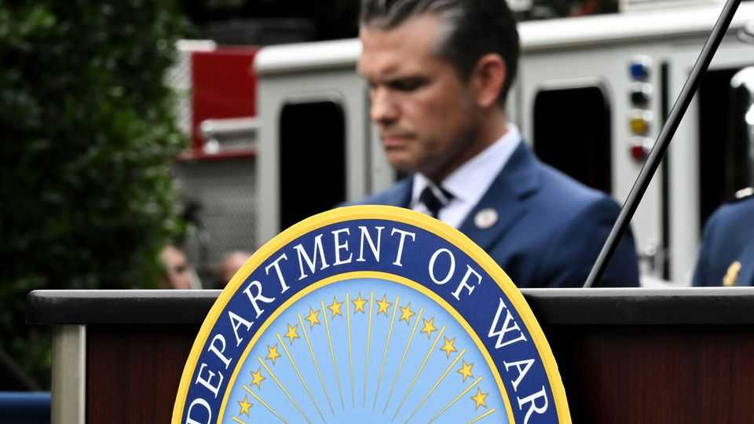
在人工智能实验室中，Anthropic是首家为国防部（DoW）开展机密任务的机构，通过与数据公司Palantir及云服务提供商亚马逊网络服务（AWS）的合作实现。但该公司对模型在国家安全领域的应用设定了明确红线。在与国防部的谈判中，Anthropic坚持要求Claude模型不得用于大规模国内监控或自主武器开发。这些限制使该公司与Hegseth产生严重分歧，后者要求向五角大楼提供AI模型的公司必须给予其完全使用权限，只要行为合法。在最新与Amodei的会谈中，Hegseth威胁若Anthropic不接受其条件，将在2月27日前终止合同。■
一位美国国防部高级官员表示，如果Anthropic不接受国防部的条件，可能会被贴上供应链风险的标签，政府甚至可能援引《国防生产法》（DPA），赋予总统强制企业承担国家安全任务的权力。Anthropic与国防部的主要合同金额不超过2亿美元，对这家2月份年营收达140亿美元的公司而言微不足道。但不能轻视这场对峙。若全面禁止所有国防部供应商使用Claude，将对这家AI实验室造成更大冲击。此类措施通常仅适用于与敌对势力有关联的企业。至于DPA，它曾在新冠疫情等紧急情况中被援引，但极少以如此对抗性方式使用。■
然而，五角大楼威胁采取如此严厉措施，表明其对Anthropic的依赖。悬而未决的DPA（数据处理协议）暗示国防部不愿彻底移除Claude模型。据有硅谷背景的前防务官员透露，Anthropic的模型被视为目前可用的最佳模型之一。这场对峙是否为竞争对手实验室提供了突破口？OpenAI——Anthropic的宿敌——在把握与国防部合作机会上显得更为迟缓。其模型被微软用于高度机密的防务项目，而微软曾与OpenAI紧密合作，但OpenAI并非该合同方。一些竞标为五角大楼开发语音激活无人机蜂群技术的实验室正使用该实验室的模型，但其参与方式仍属间接。■
其与美国国防部（DoW）的正式合同仅限于非机密工作，而其模型用于国家安全目的的使用则根据个案进行评估。Anthropic和OpenAI内部对AI军事化的担忧根深蒂固。这两家公司也警惕失去其顶尖AI研究人员的风险，其中许多人来自海外，可能不认同特朗普政府的意识形态。相比之下，埃隆·马斯克（此前曾警告过“杀戮机器人”）似乎已抛开这种顾虑。SpaceX（他的火箭和卫星公司）和xAI（他的模型开发商，与SpaceX正在合并）据称正在联合参与国防部的无人机蜂群技术竞赛。一位国防部官员表示，xAI的模型Grok已获批准用于机密环境。
谷歌在2024年取消对AI用于国防用途的限制后，如今也承接了五角大楼的机密和非机密项目。这对硅谷巨头而言是显著的转变。2018年，谷歌曾被迫放弃名为Project Maven（“Maven”项目）的五角大楼合同，该项目利用机器学习分析无人机拍摄的视频，但因公司内部抗议而终止。自Project Maven事件后，硅谷对五角大楼的态度逐渐转向支持。但双方从该事件中汲取的教训仍值得铭记。对科技公司而言，认为能完全掌控技术在战场上的用途可能不现实。他们可以呼吁谨慎，但最终决定战争如何进行的，仍是宪法对武装力量的监督。■
美国国防部方面，要求无限制获取具有极端致命潜力的技术，需要建立坚实的信任基础。如果这些技术被用于合法性存疑的行为，这种信任基础可能会被侵蚀。例如对加勒比海民用贩毒船的袭击等引发争议的决策，已引发硅谷对自主武器系统未来可能被滥用的担忧。如果赫格塞特先生不够谨慎，他可能会危及自己不仅限于 Claude 的访问权限。■ 要追踪塑造商业、工业和技术趋势的动态，请订阅我们的周度专属读者通讯《The Bottom Line》。
§056 托尼·罗宾斯（Tony Robbins），激励界的巨龙 Business原题：Tony Robbins, the megalosaurus of motivation · 板块：Business · 栏目：商业
如果你曾以无神论者身份参加过教会活动，或观看过像自行车赛这样枯燥的运动比赛，而周围都是狂热的粉丝，那你就会明白在托尼·罗宾斯的活动中做一名愤世嫉俗者是什么感觉。你会感到无聊，但同时又着迷；你会觉得自己有点优越，却又疑惑是否自己才是那个误解了重点的人。托尼·罗宾斯可能是地球上最著名的励志导师。他承诺帮助人们过上“非凡人生”，声称在45年职业生涯中已触及1亿受众。他的客户包括塞雷娜·威廉姆斯（Serena Williams）、休·杰克曼（Hugh Jackman）和马克·贝尼奥夫（Marc Benioff）。他著书立说，主持播客。 ■
他通过沉浸式活动吸引大批观众，一边发表励志布道，一边让追随者欢呼雀跃、进行火行仪式。今年早些时候，他更是打开虚拟大门，举办了一场名为“Time to Rise Summit”的免费为期三天的线上活动。这场活动也可以称为“Time to Enter the Marketing Funnel”。活动前夕，注册者会收到邮件，被告知仅注册就“将他们区分为领导者”。这似乎很容易，你心想。倒计时即将开启，这将是通往“不可阻挡的增长与蜕变”的起跑点。天哪，你心想。只需支付小额费用，你就能加入“Gold Card Experience”体验，其中承诺提供一个最多仅1,000人参与的“私密”Zoom频道。不可阻挡的增长与蜕变或许已足够，你心想。
第一天，你加入了一个YouTube频道，数以万计的人已经在线等待活动开始。屏幕上滚动着励志标语，如“每天变得更优秀，发现属于你的冒险”和“你不会达到目标的高度，而是达到你决策的高度”。每个词都合情合理，但随着句子展开，你越来越不确定它的含义。其他参与者则毫无疑虑。聊天窗口瞬间被信息填满：“冲啊！”“超级兴奋”“我还没开声音”。倒计时结束时，一位摄入过量咖啡因的人宣布已有120万人报名参加。一位私人教练随即带领大家进行简单的热身运动。■
镜头偶尔切换至通过Zoom观看活动的狂热粉丝，他们大概率是Gold Card Experience会员。人们在客厅里疯狂地上下跳跃，场面令人费解——就像看着月光教派做高强度间歇训练。终于，这位人物现身了。罗宾斯先生虽已65岁，但他的体格是其魅力的核心。他异常高大，经常锻炼并希望你注意到这一点。他的牙齿如同石灰岩峭壁，声音沙哑，血管鼓胀。他仿佛来自地质年代深处：激励界的巨龙。聊天窗口里满是表情符号。“我超级爱你Tony！！！”有人写道。“我想改变一切”，另一个人说，这似乎有些模糊。接着他便开始咆哮着对着镜头奔跑。■
他反复讲述着早已说过多次的故事，包括如何在十分钟内治愈一位对蛇有恐惧症的女性。他谈论模式识别、英雄之旅、睾酮激增以及《绿野仙踪》的启示。他引用诸如“某天会通往一个名叫‘无处’的小镇”，以及“如果你想占领岛屿，就烧掉船只”之类的句子。甚至还有令人难以置信的欢呼声和掌声配乐。你摇头时，聊天窗口里不断弹出更多爱心表情。然而，罗宾斯先生所说的内容远不如他表达的方式重要。他真正地富有感染力。他讲述故事时，常常显得即将落泪。他仿佛观众就在他身边，鼓励着观看的人群发出声响，随着舞曲的播放做出奇怪的鼓掌动作，并要求观众举手示意。他微笑着，仿佛这一切都是真心的。■
最重要的是，他始终充满干劲。第一天他连续讲了近三个小时，第二天、第三天又重复了同样的事情。就在你认为这已经结束时，一封邮件通知你，托尼还会再来一场额外的演讲。这种持久的精力让追随者更加信服，也让你心中产生一个令人困扰的问题：如果这一切都是无稽之谈，他为何如此精力充沛，而我却感到如此疲惫？你或许不认同罗宾斯的观点，但你必须承认，他确实非常擅长推销自己的理念。■ 订阅者可注册我们的Opinion新闻通讯，汇集了我们最佳的社论、专栏、读者来信和特稿。
§057 美国企业高管正卷入地方政治 商业 施穆普特原题：America’s bosses are being dragged into local politics · 板块：Business · 栏目：商业
如今，经营一家大型美国公司需要高管们精通高阶政治艺术。国家事务、贸易和战争已成为董事会日常谈资。以马克·扎克伯格（Mark Zuckerberg）为例，这位自称自封的奥古斯都（Augustus）的Meta公司CEO，曾出席唐纳德·特朗普（Donald Trump）的就职典礼，向总统的舞会基金捐款，并在首都购置了大量地产。Meta公司宣传其技术被美国武装部队使用，今年早些时候，扎克伯格还任命了特朗普前国家安全顾问副职。然而，与扎克伯格最紧迫的问题相比，这些事似乎都显得过于地方化。
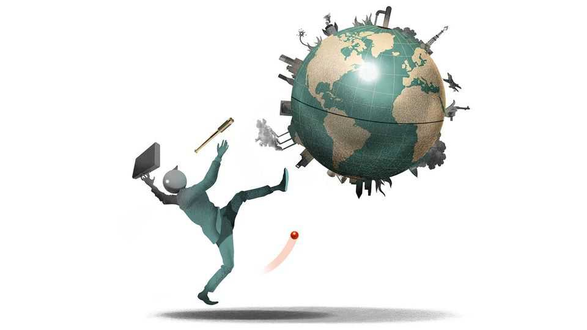
加州医疗工会提议的财富税可能解释了他为何对佛罗里达另一处房产感兴趣。本月扎克伯格在洛杉矶县法院作证，谈论社交媒体对儿童的风险。Meta建设数据中心的宏伟计划，如同其竞争对手一样，也遭遇了来自居民担忧电价问题的匿名市政建筑中的反对。此外还有州级人工智能法规，公司希望通过6500万美元游说资金来影响这些法规。扎克伯格不仅要扮演CEO与政客的双重角色，还需日益承担CEO与市政委员的职责。由越来越大的公司掌控的权力，正由越来越小的政治实体行使，其原因在于政治解体和技术加速。■
在联邦政府尚未出台相关法规的情况下，已有五个州通过了针对私营部门使用人工智能的广泛法律，至少还有16个州正在制定相关法规。各州提交的数百项与人工智能相关的法案在诸多方面存在冲突，从人工智能生成内容的标注方式，到当该技术可能危及全人类时地方当局应如何迅速通报，都存在分歧。自动驾驶汽车制造商也面临同样繁杂的法律体系。在机器人出租车已成为常态的加州，政府已指定两个不同机构负责监管。去年司法部对州际商业健康状况进行调查时，不仅美国最吸引人的行业提出了投诉，一些最不起眼的行业也表达了不满。美国银行家协会指出，纽约和马萨诸塞州的债务催收法规削弱了国家银行监管。■
pistachio 生产者协会对“超加工食品”定义的分歧感到愤怒，全国鸡肉委员会则表示单一市场面临风险。他们大概会这么说。然而，特朗普的放松监管计划频繁遭遇地方层面的反向举措，令人印象深刻。联邦反垄断执法者已减少对并购的审查，而蓝色州则建立自己的反垄断体系，挑战他们不认可的交易。特朗普试图削弱负责消费者金融保护的机构，但其精神在纽约延续，该州如今正试图监管“先买后付”贷款机构。MAGA 世界热衷预测市场如 Polymarket 和 Kalshi；各州则想用本地赌博法规扼杀它们（依赖赌场收入的原住民部落也对这些市场虎视眈眈）。■
有时老板们会逃往气候更宜人的地方。在纽约敲钟上市特拉华州注册的公司，然后将收益花在加州，曾是美国创业者的梦想。但如今“新特拉华”（New Delafornia）的主导地位不再稳固。迈阿密凭借比纽约更低的税率和更宜人的气候，正崛起为金融中心。自埃隆·马斯克（Elon Musk）在2024年其所在州法院拒绝支付薪酬后，已有十余家上市公司（多数迁往内华达州）从特拉华州重新注册。马斯克还将其未上市的公司，包括SpaceX，重新注册；去年夏天，全球最大风投机构安德烈森·霍罗威茨（Andreessen Horowitz）鼓励其投资组合中的初创企业效仿此举。■
如果加州确实推行其激进的税收计划——对亿万富翁征收5%的税——那么大约200位居住在此的富豪或将掀起外流潮。然而，多数在美国多州开展业务的美国企业却陷入日益趋近欧洲的监管体系。加州如同德国般，历来是传统经济引擎；同样地，它坚持将自己的理念强加于其他州，包括不少糟糕的政策。它不仅是坚持在反垄断执法中发挥更大作用的州之一，其体量又使数据隐私法规、薪酬披露规定和气候政策实质上成为全国性政策。这种类比对一些美国企业高管而言或许显得荒谬甚至冒犯，毕竟他们中许多人已深受特朗普对艺术与精致的厌恶影响。
他们认为白宫将很快起诉各州的人工智能相关法规，使其不复存在，正如其12月承诺的那样，国会也将通过一部关于自动驾驶汽车的综合性法案。也许如此。但若历史是任何指南，对州际贸易的低效限制往往能维持较长时间：铁路在1887年接受联邦监管前就运营了数十年，州际银行业务直到1994年才真正被允许。很少有首席执行官真正适合其新职责。应对50个监管机构需要的注意力远多于应对一个。特别是科技公司高管们谈及人工智能未来的方式表明，他们将难以应对一种将他们拉近大众的民粹主义。更少人会享受这种处境。邀请老板与退休将军共进午餐，无论讨论什么话题，他都会清空下午的时间。■
若有人试图让他谈论新州法或激进的检察长，他便会从窗户快绳而下。■ 《经济学人》的订阅者可注册我们的Opinion通讯，汇集了我们的领袖文章、专栏、嘉宾评论及读者来信中的精华内容。
§058 美国的贸易混乱才刚刚开始 金融与经济原题：America’s trade chaos is just beginning · 板块：Finance & economics · 栏目：财经
，美国最高法院推翻了唐纳德·特朗普的标志性政策。总统声称1977年通过的《国际紧急经济权力法》（IEEPA）赋予他可以随意对任何国家征收任意时长关税的权力。大法官们以6比3的投票结果裁定，国会并未在IEEPA中“将立法权委托给行政部门的日常监管权力”，正如首席大法官约翰·罗伯茨在多数意见中所写。若仅从美国关税税率的变化来看，未来的历史学家可能完全忽略这一裁决。■
特朗普在做出决定后数小时内便援引1974年贸易法第122条，对所有进口商品自2月24日起实施10%的关税，为期150天。次日他宣布将税率提高至15%，这是法律允许的最高水平。在最高法院作出裁决前，耶鲁预算实验室估计美国的有效关税率为13.7%。若将IEEPA替换为15%的第122条关税，该比率降至12.2%（见图表1）。相比之下，特朗普2025年1月第二次就任前，该比率仅为2-3%。然而若深入观察这一表面稳定，未来全球商业史的记录者或将2月20日标记为动荡时期的开端，这可能比特朗普去年4月“解放日”引发的混乱更为剧烈。■
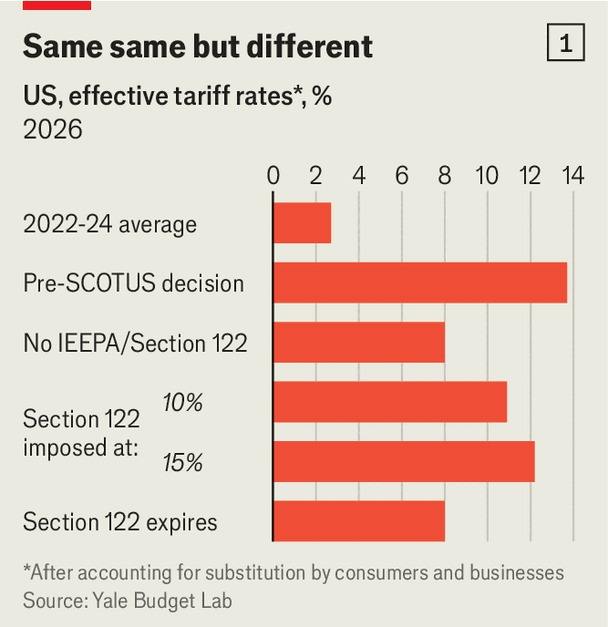
■
这主要是因为，首先，最高法院对如何处理政府非法征收的关税退款问题保持沉默，引发另一场法律纠纷。其次，特朗普政府最新声称或即将声称的权力也将面临法律挑战。在诉讼进行期间，不确定性将持续存在，贸易对抗带来的经济拖累也将持续。政府可能已通过国际紧急经济权力法（IEEPA）关税征收了约1800亿美元。过去一年中，包括固特异（Goodyear，轮胎制造商）和好市多（Costco，零售商）在内的1800家公司已提起诉讼，要求在最高法院推翻相关裁决后获得退款。这些公司如今有权获得这笔资金，相当于美国企业去年利润的约5%，或占GDP的0.6%，并按年利率6-7%的复利计算利息。
尽管账单不断攀升，美国政府仍不会让退税申请人轻松。政府或许希望部分人因将关税转嫁给消费者而感到羞愧，从而放弃索赔。高盛银行估计，截至去年年底，约60%的关税成本已通过商品价格上涨转嫁给消费者。其他人则可能不愿惹怒一位曾利用职权打击商业、法律等领域所谓“敌人”的总统。与美国达成协议、提供让步以换取较低关税率和特朗普宽恕的贸易伙伴也面临类似困境。由于第122条法案必须无差别适用，受到IEEPA影响的贸易伙伴（如中国和巴西）反而受益（见图表2）。而那些谈判获得更好条件的国家（如英国和欧盟）则大为不满。■
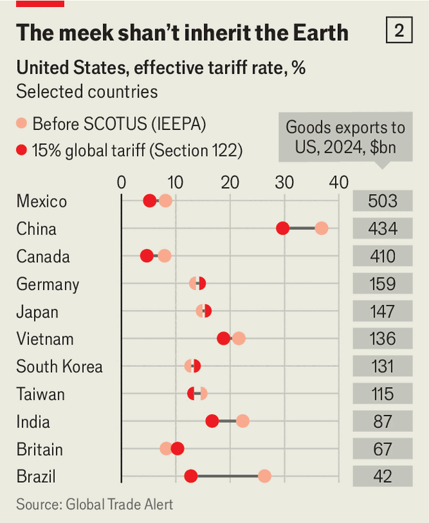
一些人可能保持沉默，另一些人则不会。欧洲委员会在特朗普表示将关税从10%提高至15%后声明称：“协议就是协议。”所有人将等待更多法律博弈。玩具制造商里克·沃尔登伯格（Rick Woldenberg）对白宫的回应极为不满，其公司“学习资源”（Learning Resources）是IEEPA案件的主要原告。他表示：“我很好奇美国政府在周五晚餐到周六早餐之间经历了怎样的流程，才得出10%的关税无法解决他们发现的国家紧急情况的结论。这完全是骗局，”他愤怒地说道。“这相当于1000亿美元的税收，其合法性令人质疑。”与IEEPA类似，第122条也是来自迪斯科时代未经考验的工具。该条款适用于出现“根本性国际支付问题”的情况，例如“重大且严重的”国际收支赤字，或“即将且显著”的美元贬值。■
美元确实在过去一年有所贬值——但部分原因是由于特朗普的关税政策，因此用其贬值来为重新加征关税辩护似乎有些牵强。而且这种贬值幅度本身也处于历史正常范围之内。政府在更模糊的“国际收支赤字”概念上拥有更多操作空间。这一问题在上世纪70年代世界逐步脱离固定汇率制度时曾是更大担忧。不过，法院仍可能倾向于支持行政部门对“危机”定义的判断。贸易伙伴和企业还应留意另一个原因：第122条关税将在150天后到期，除非国会同意延期。而随着11月中期选举临近，这看起来几乎不可能实现。
当这一权威失效时，特朗普将尝试借助其他工具重建它，特别是1974年贸易法第301条（Section 301）和1962年贸易扩展法第232条（Section 232）。这些条款允许针对特定国家和行业的关税，例如他在第一任期对中国的关税，或近期对钢铁和铝进口的关税，并且法律基础更为稳固。这两项条款也要求在征收关税前必须启动正式调查，因此使用起来较为繁琐。如果政府的调查被认定为轻率，将可能引发更多诉讼。特朗普希望凭借对关税的持续施压，说服企业在美国建厂。但这一做法在当前不确定性较高的背景下显得复杂、昂贵且缺乏意义。相比之下，更简单的方式是雇佣贸易律师不断优化海关安排并重新定义商品原产地。■
例如，“首次销售”规则允许进口商按原制造商的定价而非中间商的价格缴纳关税。关税抵免规则允许企业将关税抵消等值的出口商品。商品可在跨境供应链中流转以改变法律上的原产国。普华永道（PwC）的马克·特鲁尚表示，此类策略可使企业关税支出减少10%至50%。所有这些举措对美国经济而言并非理想组合。关税退款将直接流入企业的利润表，而小幅降低的关税相当于减税，合计可能构成相当于国内生产总值（GDP）0.7%的刺激效应。这与特朗普去年签署的《一项美丽伟大的法案》（One Big Beautiful Bill Act）带来的单独退税措施并行。■
不过，部分刺激措施将被持续的不确定性所抵消，这种不确定性让进口商难以预料，也阻止企业进行雇佣和投资。贸易律师们将忙得不可开交，其他人则只会筋疲力尽。■ 如需获取更多关于经济学、金融和市场的深度分析，请订阅我们的周度专属通讯Money Talks。
§059 人工智能生产率增长热潮尚未到来（尚且如此）原题：The AI productivity boom is not here (yet) · 板块：Finance & economics · 栏目：财经
人工智能正以惊人的速度发展。最新模型如今能在几乎无需人类监督的情况下完成复杂且耗时的任务。本月，OpenAI的一款模型帮助推导出理论物理学的新成果。难怪一篇宣称“一场重大变革正在发生”的文章，以及近期一篇类似主题的博客文章，都引发了广泛传播。经济领域是否也正经历类似变革？美国财政部长斯科特·贝森特（Scott Bessent）去年曾预测，人工智能即将“开始啃噬”（bite），意指将带来显著的生产率提升。
凯文·沃什（Kevin Warsh）被唐纳德·特朗普提名为美联储主席，他寄望于AI驱动的生产率增长浪潮来遏制通胀。美国宏观经济数据中出现的一个谜题，乍看之下似乎支持贝森特（Bessent）和沃什（Warsh）的观点。2月20日发布的数据显示，美国经济在2025年以2.2%的强劲增速增长。然而同期就业市场明显放缓，雇主平均每月仅新增约1.5万个就业岗位，相当于年均就业增长仅为0.1%。这种组合表明每位工人的产出显著提升。然而实质性、由AI推动的生产率增长证据却十分薄弱。2025年第四季度实际GDP年化增速仅为1.4%（尽管政府停摆部分责任在内）。而近期产出与就业增长之间的差距也并不罕见。■
自1950年以来，生产率增长至少达到两个百分点的年份约占三分之一。尽管官方数据尚未公布，但基于实际GDP增长和总工时的估算显示，2025年的生产率增长约为1.9%。这将略低于长期平均水平的2%左右，远低于1990年代至2000年代互联网繁荣时期取得的改善（见图表1）。此外，产出与就业增长之间的差距可能由多种因素造成。美国近期的GDP增长很大程度上反映了投资激增，尤其是人工智能基础设施领域。哈佛大学的杰森·福曼估计，2025年上半年GDP增长的约90%来自数据中心及相关资本投资支出（不过这些计算未扣除进口资本品，如芯片）。
调整投资驱动产出的措施也揭示了相似的结论：旧金山联邦储备银行的研究发现，剔除投资影响后，基础生产率增长几乎接近零。劳动力市场动态同样指向这一方向。更严格的移民政策抑制了劳动力增长，通过减少农业和建筑业等低生产率领域的从业者数量，从而提升了平均生产率。临时就业的大幅下降也产生了类似效果。经济学家如何判断人工智能是否推动了生产率提升？总体而言，他们需要关注三个要素：技术的普及程度、使用强度以及其在具体任务中的产出提升幅度。技术普及度正开始上升（见图表2）■
圣路易斯联邦储备银行的Alex Bick及其同事开发的追踪器估计，2025年11月，41%的美国工人在工作中使用了生成式人工智能，较一年前的31%有所上升。其他调查也得出了类似结论。斯坦福大学的Jon Hartley及其团队估算，使用率从2024年底的约30%升至一年后的36%。然而仅看采用率难以衡量人工智能对生产率的影响，使用强度同样关键。Bick发现，仅约13%的适龄劳动力每天使用生成式人工智能。涉及生成式人工智能的工作时长占比仍较小，从2024年底的4.1%升至2025年中仅5.7%。多数使用场景集中于零散任务而非全面自动化。OpenAI数据显示，其模型主要应用于职场写作辅助和信息查询。■
Anthropic的Claude主要用于帮助人们编写计算机代码。当AI被应用于实际场景时，其带来的效益可能相当显著。2023年，麻省理工学院的Shakked Noy和Whitney Zhang发现，使用ChatGPT可将编写任务的完成时间缩短近40%。哈佛商学院的Fabrizio Dell’Acqua与合作者在对波士顿咨询集团顾问的研究中发现，AI驱动的生产力提升在现实专业任务中可达12-25%。伦敦大学学院的Maria del Rio-Chanona及其团队进行的更广泛研究显示，现实场景中的平均生产力增长为15-30%。综合考虑这三个因素，粗略估算显示，AI迄今为止对生产力的影响仍较为有限。■
将使用生成式人工智能增加的工作时长与效率提升幅度结合计算，过去一年的生产力增长预计提升了约0.25至0.5个百分点。但这种估算几乎肯定过于乐观。该计算假设所有节省的时间都被有效利用，且工人既不会偷懒也不会产出低价值产品。早期证据显示现实更为复杂。一些研究表明，使用AI时工人总工作时间反而增加，另一些研究则指出该技术有时会生成低质量的“粗制滥造”内容，需要编辑或验证。所有这些迹象都表明，认为AI正在推动生产力爆发式增长的论点存在更深层次的缺陷。此类改进通常不仅源于工人更频繁地使用新工具，还源于企业围绕该技术重组生产流程。
早期工厂在蒸汽机被电动机取代后仅小幅提升效率；真正突破出现在数十年后，工厂布局重新设计以充分发挥电力优势。近年来，个人电脑普及后数年里生产率增长令人失望，直到企业采用能充分挖掘技术潜力的商业模式才实现提速。美国1990年代生产率复苏主要源自零售业而非硅谷，计算机革新了物流与库存管理。目前AI尚未达到类似阶段。英国央行研究员伊万·约托夫（Ivan Yotzov）等人最新研究显示，高管每周仅用AI约一到两小时，十分之九的高管未观察到劳动生产率的可衡量提升。■
换句话说，组织架构的重构才刚刚开始。AI领域确实可能发生重大变革。目前，它在宏观经济数据中仍难以察觉。■ 如需深入了解经济学、金融和市场领域的重大议题，敬请订阅我们的每周专属订阅简报 Money Talks。
§060 关于AI的病毒式研究报告误判了经济学原题：A viral research note on AI gets its economics wrong · 板块：Finance & economics · 栏目：财经
在2月最后一周股市震荡时，一些人将原因归咎于Citrini研究公司（一家股权分析师机构）发布的一份报告。该报告设想了2028年一个世界，在那里人工智能让大量白领工作变得过时——从美国运通到DoorDash以及软件行业的大部分企业都受到影响。这份报告迅速走红。但其经济学分析存在漏洞。
在西特里尼设想的近未来，产出持续增长，“由永不眠、无需休病假或健康保险的AI代理驱动”，而消费者支出却骤降：工人失业且无收入可支配。“经济评论家们创造了‘幽灵GDP’这一说法：这些产出出现在国家账户中，却从未真正流通过。”经济学家们曾经历过类似情境。19世纪初，金融家大卫·李嘉图与牧师托马斯·马尔萨斯曾就‘普遍过剩’的可能性展开辩论。当时粮食价格下跌，工业产出却大幅上升，但工人明显失业。产出激增似乎伴随着消费能力的缺失，一切商品同时过剩。李嘉图认为这种现象不可能发生，因为它违反了萨伊定律——‘生产创造自身需求’。那么，农民如何购买纺织品？■
他生产食物并进行交换：实际产出是用于购买其他商品的收入。仅可能出现“部分过剩”。某一行业（比如今天的软件业）可能生产过多，导致价格暴跌、工人失业，但这样应使另一行业能购买更多商品。一些人和企业会受损，另一些则会受益，这正是经济变革的本质。然而，整体经济衰退确实会发生。后来的经济学家，如约翰·梅纳德·凯恩斯指出，货币可能成为障碍。生产和消费不必同时进行：企业可以先制造商品、出售后再保留现金。因此，普遍性过剩成为可能。也许这次人工智能公司的所有者会简单地囤积其机器人所创造的现金。但这样会引发通缩，而非导致西特里尼预测的名义GDP激增。■
失业率确实会上升，但GDP会下降。这种未来是否合理？看起来并非如此。事实上，AI公司正迫切希望将资金重新部署用于建设更多数据中心，而非囤积资金，尽管迄今为止尚未见到显著的生产率提升。许多投资者担心AI公司可能面临资金枯竭的风险。而政策制定者仍拥有刺激需求的工具——包括降息、购买债券和发放补贴——来应对需求萎缩。AI技术的爆发式发展不太可能催生一个缺乏消费支出的经济体系。■ 如需获取更多关于经济学、金融和市场的深度分析，请订阅我们的周度专属通讯Money Talks。
§061 保护主义厌恶贸易和移民原题：Protectionists dislike trade and migration. And capital flows? · 板块：Finance & economics · 栏目：财经
全球化在过去十年中遭遇了严峻挑战。关税和出口管制阻碍了商品流动。排外政客打击了人口流动。那么资本流动呢？即便在经济学家之间也存在争议。他们担心，若无约束，资本流动可能放大投机行为，扭曲汇率，并使国家面临本地资产与美元负债之间的错配风险。■
即便在美国——这个进口资本最多的国家，有影响力的思想家们也曾设想对外国购买债券征税以维持美元竞争力。在民族主义盛行的当下，资本是否已不再全球化？一种回答方式是汇总全球各国的外国资产总额。布鲁金斯学会（Brookings Institution）的Gian Maria Milesi-Ferretti及其同事指出，2024年全球各国的外国资产总额达到227万亿美元，相当于全球GDP的204%，相较2007年的201%并未显著增长。按此标准衡量，资本的全球化程度如同贸易一样陷入停滞。但这是经济学家所谓的“实际开放度”指标，反映的是结果而非工具或意图。正如关税之外的因素影响贸易量，资本流动也受多种因素影响，而不仅仅是资本管制。■
贸易壁垒是收紧了还是放松了？衡量贸易壁垒的难度在于其形式多样：关税、配额、关税率配额，以及诸如安全标准等其他形式。资本管制的衡量同样面临类似难题。尽管如此，国际货币基金组织（IMF）的经济学家们仍提出了新的衡量指标。所有指标均基于该基金自1950年起出版的《汇率安排与外汇管制年度报告》。这份报告将交易细分为数十个子类别，询问外国投资者是否能自由购买该国债券、居民是否能开设外币银行账户、出口商是否需将美元收入上缴政府等。
第一项指标是早川保子及其合著者开发的金融账户限制指数（FARI），该指数简单反映面临某些限制的子类别占比。数据显示，1999年至2010年代初，资本管制有所放松，当时欧洲主权债务危机冲击了一些此前开放的经济体。塞浦路斯等国家限制存款提取，哥斯达黎加等新兴市场国家则谴责“热钱”流入。随着紧急措施解除，全球资本管制在2016年至2019年间再次下降，尽管民粹主义民族主义浪潮正席卷全球（见图表1）。近期资本管制出现小幅反弹：自2019年以来，41个国家扩大了限制范围。俄罗斯在入侵乌克兰后收紧管制，阿根廷重新实施“货币紧箍咒”（el cepo）以遏制货币危机。
FARI简单且客观，因此国际货币基金组织可以定期更新并自由发布。另一个由IMF经济学家李文杰开发的指数则采用少量主观判断，以五级评分体系评估资本管制强度。根据FinOpen指数，不丹在2022年（最新可获取数据）拥有全球最封闭的资本账户。完全开放的经济体从富裕的金融避税天堂（安道尔、巴拿马）到利比里亚不等，后者是一个极度贫困的国家，其对待外国资本的方式与其国名相符。两大主要新兴经济体印度和中国，其资本账户开放程度均低于平均水平（见图表2），且相较于其发展水平而言，开放程度也低于预期。仅有四个经济体既比中国更富裕，又比中国更封闭：阿根廷、阿鲁巴、巴哈马和俄罗斯。这些国家均不显眼的经济伙伴。印度和中国也是资本管制调整最为活跃的国家之一。
根据巴巴女士及其同事的研究，自1999年以来，中国已进行超过150次调整，印度则超过300次，仅次于阿根廷。这些调整大多取消了限制。因此，全球两大经济体仍属渐进式全球化国家。它们比多数国家更不开放，但比过去更开放。这可能产生悖论。反映经济规模的金融开放程度指标可能趋于平稳，并非因为经济体变得更封闭，而是因为封闭经济体在全球经济中的比重上升。资本是否变得不那么全球化？实际上可能如此。但事实上并非如此。■ 了解更多关于经济学、金融和市场的专业分析，请订阅我们的周度专属通讯Money Talks。
§062 市场暗流涌动 财经版原题：Markets are churning furiously beneath the surface · 板块：Finance & economics · 栏目：财经
投资者们从除夕夜开始的恍惚中苏醒，或许会质疑自己是否错过了什么。尽管近期地缘政治局势动荡，但标普500指数——衡量美国大型企业股价的指标——几乎与2025年底持平，仅略低于历史高点。然而，美国金融市场深处却暗流涌动。对人工智能将如何颠覆商业模式的恐慌情绪，导致软件公司股价暴跌，较去年近期高点下跌三分之一。
■
2月23日，国际商业机器公司（IBM）股价暴跌13%，因投资者对人工智能（AI）对这家科技老将意味着什么感到模糊担忧。担忧并不仅限于软件公司，投资者还担心AI代理和“氛围编程”将冲击物流、商业房地产等各行各业。2月22日，一家研究机构发布博客文章，设想AI普及后大规模裁员却未提升生产力的未来，文中提及的公司如美国运通（金融领域）和DoorDash（食品配送领域）股价随即下跌。截至目前，失利者的损失已被赢家的收益所抵消。投资者纷纷追捧“HALO股票”（重资产、低淘汰率的股票）：能源和大宗商品公司、稳健的公用事业企业以及必需消费品供应商。而制造AI硬件的科技公司则表现亮眼（见图表1）。■
美光科技（Sandisk）的股价今年已上涨逾一倍。胜者与败者的脆弱平衡未必能持续，因为投资者对人工智能最终如何重塑企业仍知之甚少。衡量动荡程度的方式有几种。其中之一是观察股市的分散性——即个股价格波动的预期差异，通过期权价格来衡量。目前这一指标高于过去十年中98%的时间（见图表2）。这一衡量方式通常会在投资者迅速定价新经济现实时出现剧烈波动。通常情况下，这意味着主要股指的剧烈涨跌，例如2020年3月新冠疫情封锁开始时，或去年4月关税引发的恐慌。投资者的重新评估也体现在债务市场中。■
去年夏天，美国科技公司发行的高风险债券收益率比国债高出约三个百分点，与广义上的“垃圾债券”利差相当，无论发行方所属行业如何。如今投资者对科技借款人要求的补偿已提高，其债券收益率比国债高出五个百分点——与关税恐慌时期相似（见图表3）。但其他市场几乎未见波动。杠杆贷款和私人信贷市场，这些对科技及商业服务企业敞口较大的领域，可能面临更严重的冲击。瑞银（UBS）的马修·米什（Matthew Mish）认为，到2026年底，此类债务的违约率可能分别上升2.5个百分点和4个百分点。若动荡更为严重，违约率的上升幅度将翻倍。私人信贷投资者已开始感到不安。■
2025年底，多家大型基金遭遇资金外流。2月18日，Blue Owl（蓝 Owl）永久限制零售投资者赎回其基金，以争取时间出售资产。多家上市私募投资巨头，如Ares、Blackstone和KKR的股价已大幅下跌。市场似乎短期内难以企稳。新型AI应用势必涌现，投资者需持续更新对哪些商业模式将被颠覆及颠覆程度的判断。若AI的实际影响远低于当前普遍预期，将重挫包括英伟达（Nvidia）在内的全球顶尖企业的股价。动荡的市场反过来可能阻碍AI发展。“若贷款市场损失过快且达到足够高的水平，信贷和金融条件的收紧可能变得严重”，米什指出。■
如果企业难以获得融资，它们在构建人工智能所需基础设施方面将放慢脚步。与此同时，持有广泛股票敞口的投资者可能会遭遇厄运。从人工智能中获利最多的公司最终可能成为未上市企业，例如安德里普或奥普恩AI。此外，没有任何规则规定每个亏损行业都必须由一个成功行业完美对冲。随着投资者重新评估各种商业模式，也不应指望股市表面保持平静。■ 如需获取更多关于经济学、金融和市场的深度分析，请订阅我们的周度会员专属简报《Money Talks》。
§063 为何中国人在食品上花费如此多原题：Why Chinese people spend so much on food · 板块：Finance & economics · 栏目：财经
春节假期期间，中国民众重聚团圆。今年春节假期从2月15日持续至23日，人们乘坐高铁跨越全国奔赴家乡，观看电视上的舞蹈机器人，向年轻亲属发放压岁钱。但最重要的是，他们相聚共食。在福州（福州市）一家咖啡馆里，本地居民与游客品尝着芝士蛋糕，饮用着康普茶。
■
一位顾客点了一份用“燕皮”包裹的馄饨，这种“燕皮”由红薯淀粉和剁碎的猪肉混合制成。另一位顾客于欢（Yu Huan）在上海从事时尚行业工作，他表示：“我真的很喜欢吃，这是让我获得幸福的一种方式。” 今年，国家统计局（NBS）也加入了这场热潮，首次公布了中国消费者在食品上的支出情况。这一数据源自对消费者价格指数的修订。新权重显示，食品（不包括外出就餐、酒类和烟草，这些通常被合并计算）占家庭消费的17.2%。美国的相应比例则不到8%。这些百分比证实了中国人对美食的热爱。但它们也暗示了一个不太令人安慰的事实。
中国在舞蹈机器人和高速列车等技术领域可能远超美国，但在衡量经济发展最古老的指标之一——恩格尔定律上仍存在明显差距。该定律指出，随着收入增加，人们用于基本生存的支出占比会下降。170年前，德国经济学家恩斯特·恩格尔（Ernst Engel）发现这一规律，马萨诸塞大学阿默斯特分校的理查德·安克尔（Richard Anker）称这是“经济学中最持久的关系之一”。该定律可用于预测食品支出，也可反向推断收入水平。在其他条件相同的情况下，恩格尔指出，用于食品支出的占比是“衡量一个群体物质生活水平的最佳指标”。恩格尔的这一指标源自他人精心收集的数据。■
比利时法学家埃德蒙·杜普埃蒂克斯在19世纪50年代统计了本国九个省199户家庭的预算。法国社会学家弗雷德里克·勒·普莱则从欧洲36个家庭中获取了类似数据，通过赞美、小礼物和“有趣的交谈”赢得信任。杜普埃蒂克斯与勒·普莱“已送出珍珠”，恩格尔承认，“却未提供串线”。将数据串联起来的是他发现的恩格尔系数——收入与食品支出的稳定关系。150年后，安克尔教授回顾相关法律时发现，这一关联在200多个国家仍清晰可见。就连中国国家统计局也对此高度重视。该机构去年指出，恩格尔系数是“衡量居民生活水平的重要指标”。多位经济学家比相信中国的官方收入数据更信任这一指标。■
2014年，加州大学伯克利分校的Emi Nakamura和Jón Steinsson，以及波士顿学院的Miao Liu利用恩格尔定律对一国的经济增长与通胀数据提出质疑。他们将2006年的家庭与两年后收入相近的家庭进行了对比，发现后者仍需将预算中更大比例用于食品开支。或许这些家庭的实际生活水平并未达到官方数据所显示的那样。恩格尔定律也令Absolute Strategy Research咨询公司的Adam Wolfe感到担忧。他指出，官方恩格尔系数（包括香烟、酒精、外出就餐等支出）自2014年以来一直停滞不前，尽管中国报告称经济持续增长。这些项目在2025年的消费占比仍为29.3%，与八年前持平。■
沃尔夫先生认为，这种“违反”恩格尔定律的现象表明中国遭遇了“严重的发展挫折”。但恩格尔定律有个例外：外出就餐。当人们在餐馆、咖啡馆或摊位用餐时，他们不仅是在购买食物，还支付了烹饪、洗碗和环境成本。安克尔先生曾亲自进行实地调查以量化这一点。他曾在西安的街头市场购买面条和蒸包，也曾在马萨诸塞州的麦当劳和Outback牛排馆消费。他并未实际食用这些餐点，而是称量了食材，再估算成本。他计算出，中国街头小吃的成本比在家用餐高出30%，麦当劳高出150%，牛排则高出233%。若将餐厅餐饮纳入恩格尔定律的计算，食品支出的比重可能被高估。■
但排除这些数据则可能带来相反的风险。尴尬的是，国家统计局（NBS）本月并未公布中国居民在外就餐的支出金额。它也未提供2025年前更狭窄的食品消费数据，剔除了餐饮支出部分。这使得难以判断外出就餐是否在支撑恩格尔系数。Wind（一家金融数据平台）的数据显示提供了线索：餐饮及其它“餐饮服务”占消费比重从2017年的5%升至2024年的7.4%（最新数据）。此类数据也可通过官方恩格尔系数推算出更狭窄的过去食品支出占比。这一计算表明，2017年食品支出占比曾高达20.7%，远高于国家统计局最新公布的2025年17.2%。■
换句话说，若剔除外出就餐，食品在中国消费中的比重仍持续下降。中国终究未能突破恩格尔定律。在福州，于女士提供了佐证。她来福州并非为了探亲，而是为了品尝美食。她尝试了海鲜火锅、花生汤和当地鱼丸。“食品占我预算的大部分，”她坦白道。但这并非经济上的挫折。她更受胃容量的限制，而非钱包。“作为一个人，我吃不了那么多，”她说，“所以，我在这里住了五天。” ■ 订阅者可注册《经济学人》观点通讯，汇集本刊领导文章、专栏、读者来信及特稿精华。
§064 人工智能工具正为现实世界做准备原题：AI tools are being prepared for the physical world · 板块：Science & technology · 栏目：科技
由谷歌于1月发布的实验性人工智能模型Project Genie堪称技术突破。只需输入提示（如图像或简短文字），即可生成一个供用户探索的互动世界。输入简单指令，即可获得逼真的模拟场景。以乔治·修拉的画作为例，用户可身临其境地漫步于点彩画派风格的周日公园。尽管Project Genie可能让人联想到视频游戏，但开发者声称其意义远超娱乐范畴。 ■
他们称之为“世界模型”，这是人工智能系统理解复杂且不可预测的物理空间的关键工具。该公司认为，一个未来人形机器人前往商店采购食材准备晚餐，或自动驾驶汽车在乡村道路上行驶的场景，都离不开世界模型。这一概念可追溯至1943年苏格兰心理学家肯尼斯·克雷克所著的一本书，他提出生物体在脑海中保存着“微型世界模型”，用于在现实中执行前对假设进行测试。对世界运行规律有所认知，是制定改变世界的计划的必要前提。若缺乏这种认知，任何生物都将被迫陷入纯粹的应激反应——躲避痛苦、寻找食物，仅此而已。■
将这种能力赋予AI系统曾是1990年代颇具前景的研究领域，彼时大型语言模型（LLMs）尚未席卷全球关注。如今，这种关注再度回归。目前有三种主要方法被用于构建世界模型。一种自然的起点是AI视频生成器。生成连贯视频的关键在于模拟一个连贯的世界——若现实法则在帧与帧之间发生变化，输出结果将毫无意义。这类基础的世界模型能够填补其未被输入信息所覆盖的细节：给它一张迷宫的图片，它就能绘制出通路；展示一张手握罐子的照片，它就能精准模拟开启罐子所需的动作。Project Genie正是这一方法的集大成之作。■
其价值在想象将其与另一种人工智能——例如自动售货员——结合时变得显而易见。后者正试图学习如何在现实世界中运作。此类任务所需的数十亿小时训练数据，从现实世界中获取远比从能模拟环境的模型中获取困难得多。如果模拟足够精确，系统便能利用这些数据进行自我训练。但即便最真实的视频也无法捕捉人类能注意到的所有细节。例如，后方坏掉的冷冻柜导致新鲜鱼类腐烂的情景并未被镜头记录，相关气味也未被捕捉。甚至那些未直接可见的物体也超出了其感知范围。例如，生成某一货架的商品后，相邻货架在模型中仍不存在，直至用户进入这些区域。■
这使得模拟复杂环境或让多个用户共存于同一模型变得更加困难。因此，另一种构建世界模型的方法转向创建完整的3D环境，而非传统的2D模拟。斯坦福大学计算机科学家李飞飞（Fei Fei Li）正领导一项名为“空间智能”（spatial intelligence）的探索。在她看来，世界模型必须具备交互性、多模态（能够解析提示）和一致性。基于视频的系统可克服前两个挑战，却难以满足第三点。例如，Genie项目在运行至多60秒后，其模拟就会开始出现边缘失真。李飞飞创办的初创公司World Labs开发出名为Marble的世界模型，能够构建内部逻辑自洽且完整的3D数字世界。这意味着例如多个用户可同时存在于同一虚拟空间中。■
更重要的是，空间并非每次用户环顾四周时都会重新生成，而是从一开始就完整构建出来。World Labs正向建筑师推销其产品，建筑师可借此构想空间并进行虚拟探索，随后将设计发送至3D打印机。前Meta首席AI科学家扬·勒昆（Yann LeCun）认为，世界模型可以以一种更抽象而非字面化的方式构建。在他看来，关注真实空间是种分心之举。毕竟，许多AI将不得不在虚拟迷宫（如人力资源系统或法律文件）中导航，而非物理空间（如商铺）。他相信，赋予AI持续建模两种环境（真实与虚拟）的能力，是使其具备实用价值的重要一步。在他看来，AI可借助大语言模型（LLM）与这类世界模型互动，从而协助其完成现实世界或计算机环境中的任务。■
这种被称为联合嵌入预测架构（Joint-Embedding Predictive Architecture，JEPA）的方法，将使人工智能能够模拟现实世界的复杂特征。现有的世界模型主要关注即将发生的事情，而非可能（或可能不会发生）的遥远未来事件。人类始终在进行前瞻性思考：在决定是否带伞出门前评估天气；在选择搭乘哪班火车时，会考虑因迟到重要会议而带来的风险；等等。关键的是，这些决策可以在不逐一想象每一天每个瞬间的情况下迅速做出。当前的世界模型缺乏这样的快捷方式。吴恩达自2022年起便开始探索JEPA系统的潜力，并于2025年11月离开Meta，全职投入这一问题的研究。■
他的初创公司先进机器智能（Advanced Machine Intelligence）计划将这些想法付诸实践，首先从与健康科技初创公司纳布拉（Nabla）的合作开始。他表示，目标是构建一个系统，该系统能够利用自身的“世界模型”来推算“完成我设定任务的最优行动序列”。但若这些复杂的方法实属多余呢？如果现有的生成式AI系统已能在现实世界中完成有用的任务，那么它们或许早已内含某种世界模型。这是OpenAI联合创始人伊利亚·苏茨凯弗（Ilya Sutskever）及其多位仍在实验室工作的前同事的观点。苏茨凯弗在2023年曾表示，训练大型语言模型无非就是“学习世界模型”。将互联网上所有信息压缩成几百GB的数据，只有当系统“学习”到这些信息背后的底层原理时才有可能实现。■
有迹象表明他可能是对的。2023年，一款基于奥赛罗棋（Othello）移动列表训练的语言模型被证明能够在其神经网络中反映棋盘状态——即便它从未见过奥赛罗棋盘，也未被教授过该游戏规则。研究人员发现，该模型在神经网络中详细反映了棋盘状态，甚至在未见过棋盘或学习过规则的情况下，其表示足够精确，研究人员甚至能识别出神经网络中存储单个棋子颜色的具体部分。这意味着他们可以针对性地调整模型对游戏的感知，这是对大型语言模型（LLM）计算过程前所未有的控制程度。更大的语言模型内部可能包含更复杂的“世界模型”——只要研究人员能找到。Anthropic这家AI实验室正主导其Claude模型的“可解释性”研究，已发现对应从内疚感至金门大桥等各类事物的人工神经元集群。■
调整参数并改变它们，就像奥赛罗（Othello）的例子所示，会导致这些模型后续行为的相应变化。这表明这些系统并非仅仅是拼接词语：它们对现实世界中的物理特征有着一致的理解，并以此来回答问题。这听起来异常像一个内部世界模型应有的表现。但并非所有人都认同这一观点。李博士（Dr Li）认为，大型语言模型（LLMs）不过是“黑暗中的文字工匠”。她指出，能够用语言描述世界并不意味着它们对世界有切实的理解。就像只读过关于一个外国国家的书籍的学生，存在无法通过书籍弥补的知识缺口。无论哪种方法最终证明更有效，有一点可以肯定：人工智能即将进入现实世界。■ 好奇心驱动探索？
要体验我们启发思维的科学报道，请订阅我们的每周专属订阅新闻通讯Simply Science。■
§065 癌症一站式血液检测能否挽救生命原题：Will one-stop blood tests for cancer save lives? · 板块：Science & technology · 栏目：科技
GRAIL是一家美国生物科技公司，其雄心勃勃的目标是开发一种可早期检测50多种癌症的血液测试。然而实现这一目标并不容易。2月19日，该公司宣布其名为Galleri的测试在最新阶段遭遇挫折。在一项为期三年的试验中，共有142,000名50至77岁人群参与，其中一半在常规筛查基础上接受了Galleri测试。研究者希望该测试能发现足够多的早期癌症病例，从而减少晚期诊断数量。但结果并未达到预期。这一消息对支持该技术的倡导者来说是个重大打击。■
但该试验的完整结果预计将于5月公布，或能呈现更细致的图景；例如，加勒里（Galleri）可能在某些人群中的特定癌症筛查中更具优势。与此同时，GRAIL的竞争对手正忙于开发可能比加勒里更敏感的替代血液检测技术。这些早期检测技术能否真正提升生存率，仍存在争议。癌症筛查血液检测的基本原理相对简单。一些检测，如加勒里，分析癌细胞脱落的DNA片段，而另一些则寻找这些细胞产生的蛋白质或代谢物。Exact Sciences公司开发的竞争对手产品Cancerguard结合了多种方法。自2021年上市以来，加勒里已成为这些检测中最广泛使用且研究最多的。■
2025年10月，GRAIL公司的潜力得到充分展现，当时该公司公布了与23000名50岁以上人群进行的试验结果。加利里在接下来的一年中诊断出约40%的癌症（其中一半为早期阶段），并通常能准确识别癌症发生部位。与此同时，它漏诊了60%的癌症病例，同时引发大量不必要的恐慌。约有1/107的参与者被检测出癌症“信号”，其中约五分之二的警报被证实是误报。该公司其他试验结果表明，这些数据可能被更乐观地解读：患者在检测后并未被随访足够长的时间。■
在英国一项涉及6000名患者的试验中，有三分之一被初步判定为假阳性病例的患者，在随访15个月后被确诊患有癌症。这表明该测试可能在癌症尚未发展到常规方法能发现的阶段时就已检测到。但早期检测未必能挽救生命，这也是测试设计者面临的另一难题。关键且仍不明确的是，这些新型多癌检测是否主要发现需要治疗的肿瘤，而非那些生长缓慢、无害且无需干预的肿瘤类型。例如，某些前列腺癌只有在患者活到100岁以上时才会致命。■
在癌症医学领域，发现那些无害病灶的筛查测试（无论是偶然还是常规筛查）始终是令医生头疼的难题。医生往往无法确定哪些病灶属于这一类，因此通常会采取手术、放疗等手段进行治疗以防万一。2025年11月，英国国家医疗服务体系（NHS）筛查测试证据审查专家委员会建议，不再普遍使用前列腺特异性抗原（PSA）检测。该委员会发现，每挽救两名生命，大约会有20名男性被误诊为患有无害肿瘤，其中12人将接受可能导致阳痿或尿失禁等副作用的治疗（更不用说不必要的焦虑）。因此，该检测仅推荐用于高风险人群，如携带BRCA基因突变者。■
另一复杂因素是，某些癌症即使早期发现，其致命性仍可能因不明原因而存在差异。英国国家医疗服务体系（NHS）于2001年至2011年开展的一项针对卵巢癌的血液检测试验（CA125）便体现了这一点。尽管该血液检测能发现更多早期病例，但癌症本身的致命性使得检测未能挽救生命。根据GRAIL公司本月发布的研究结果，某些癌症类型在试验后期呈现出“积极趋势”。若这一趋势持续，使用Galleri检测与不同癌症相关的利弊权衡可能各不相同。这使得该检测的实施需谨慎决策。■
此外，还存在其他难题：患有致命癌症的患者可能无法从早期诊断中获益，但这类知识却能帮助研究人员加深对早期癌症的理解。但这并非故事的终点。“GRAIL的技术目前略显过时，”牛津大学肿瘤学系分子诊断研究负责人安娜·舒赫表示。Galleri通过检测血液中DNA片段，寻找化学标记是否被添加，从而改变基因的开关状态，这一过程称为甲基化。Galleri的检测方法会破坏大部分DNA，限制了从样本中获取的信息量。不过，过去三年中多个学术团队报告的科学进展，可能很快带来更先进、更强大的检测方法，舒赫博士表示。■
除了采用更温和的手段识别甲基化外，一些新方法通过扫描整个基因组寻找DNA代码中的癌变迹象。新型检测手段还分析DNA片段的物理特征模式，这些模式可能揭示癌症存在的线索。借助人工智能工具辅助数据分析的多管齐下方法展现出前景。若能转化为可靠检测手段，或将帮助判断哪些癌症需要立即干预，哪些则无需紧急处理。■
§066 石器时代人类留下的痕迹出乎意料地复杂原题：Marks left by Stone Age humans were surprisingly complex · 板块：Science & technology · 栏目：科技
位于现今德国西南部施瓦本侏罗山的洞穴系统，为考古学家提供了窥探首批解剖学上现代欧洲人生活的窗口。43,000至34,000年前，这些洞穴的居住者创造了丰富多样的文物：专门化的工具与珠宝；具象艺术；用骨头和象牙雕刻的骨笛；以及微型的猛犸象等巨型动物真实与想象中的雕像。
这些文物上装饰着考古学家称为“符号”的几何标记，如点、线、十字和星形，其含义和用途至今仍是个谜。萨尔大学语言学家克里斯蒂安·本茨（Christian Bentz）与柏林人类学与早期历史博物馆考古学家伊娃·杜特基维奇（Ewa Dutkiewicz）旨在为这一问题带来一些清晰度。他们在《美国国家科学院院刊》（PNAS）发表的论文中揭示，这些古代刻痕并非随意为之，而是以有意且系统的方式被应用，其复杂程度足以传递信息。更值得注意的是，论文作者指出，这些符号的信息密度与5000年前文字出现前的标记系统相当。为得出这一结论，研究人员对从施瓦本洞穴出土的260件文物上记录的符号序列进行了数字化分析。■
他们随后结合语言学与机器学习工具，提取出符号的统计指纹。这种指纹不仅捕捉了符号重复频率等基础特征，还记录了某些符号模式出现的可靠性。为与其他标记系统进行比较，研究人员还利用这些工具对包含89种现代语言、16种文字系统的数据库进行了分析，并纳入了三个时期楔形文字前身的实例。楔形文字前身起源于美索不达米亚，约公元前3300年诞生。楔形文字在人类历史上具有特殊地位，因其最终演变为楔形文字——被语言学家定义为以标记表示语音的最早书写形式。本茨博士与杜基维奇博士发现，洞穴中的符号序列与现代书写系统毫无相似之处。■
与后者不同，这些符号展现出高度重复性与低信息密度。因此，这些符号序列很可能并非人类语言的体现。但研究出现了转折。研究人员还发现，这些符号的统计特征与早期楔形文字有显著重合。更值得注意的是，它们之间的相似度，远高于后者与现代书写系统之间的相似度。研究结果表明，人类创造的标记复杂度在数万年间基本保持不变。随后，在短短几个世纪内，首个真正的书写系统诞生。关于这些刻痕的用途，已有多种假说被提出：有人认为它们是计数工具或日历，也有人认为它们记录了猎物迁徙轨迹。■
最新研究无法单独解答这一问题，但提供了重要线索。例如，狮子和人类的雕像上出现了点状图案，但工具上则没有。象牙雕像的信息密度最高。在破解4万年前的谜题时，每个细节都至关重要。■ 好奇世界？想获取我们拓展思维的科学报道，请订阅我们的周度会员专属简报Simply Science。
§067 你该纤维最大化吗原题：Should you be fibremaxxing? · 板块：Science & technology · 栏目：科技
蛋白质让路吧：在TikTok上被称为“纤维最大化”的多吃纤维（纤维）可能成为2026年最热的新饮食趋势。从冷冻披萨面团到不健康的软饮料，纤维似乎无处不在。这些额外的克数值得追求吗？纤维是一种存在于植物细胞壁中的碳水化合物。它有多种类型，大多数不易被消化。这带来了好处：纤维在胃和肠道中保持完整，阻止消化酶接触到容易被快速分解的食物，如糖和脂肪，从而防止过多的营养被身体吸收。此外，一些纤维是水溶性的，在肠道中会形成浓稠的凝胶。■
这种凝胶能捕捉部分有害物质——例如胆汁中的动脉阻塞型胆固醇——确保更多有害物质随粪便排出体外而非进入血液。不可溶纤维同样具有重要作用，它能增加粪便体积、缓解便秘。在结肠中，各类有益肠道菌群会将纤维转化为短链脂肪酸（SCFAs）等分子。部分SCFAs可为构成结肠内壁的细胞提供能量，这些细胞是肠道病原体与血液之间的屏障。最新研究显示，SCFAs还能帮助身体调节代谢和食欲，甚至抑制免疫系统的过度反应。总体效果是带来广泛健康益处。■
多项研究显示，人们摄入的膳食纤维越多，每天最多25-30克，患癌症、糖尿病和心脏病的风险就越低。但膳食纤维摄入量超过这一水平后是否仍能带来健康益处，目前尚不明确。不过，过度关注膳食纤维摄入可能带来风险——人们可能通过失衡的饮食获取这30克纤维。例如，两片面包所含的膳食纤维量，可能与一份西兰花或菠菜相当（约2.5克），这仅仅是因为小麦是膳食纤维含量最高的作物之一。半条全麦面包就能接近每日推荐的膳食纤维摄入量。然而，面包中缺乏西兰花和菠菜中含有的许多维生素、矿物质和抗氧化剂，同时所含的可溶性纤维也更少。更合理的做法是通过多种植物性食物增加膳食纤维摄入。
世界卫生组织（WHO）于2023年发表的一项研究综述发现，每日摄入更多水果和蔬菜的健康益处在达到800克后趋于稳定（官方建议更现实的目标为每日五份，约合400克）。摄入多样化饮食的人群每日可轻松达到30克膳食纤维，同时获得丰富的维生素、矿物质和蛋白质。关于膳食纤维长期健康效益的研究基于天然存在于全食物中的纤维。目前尚无相关数据支持提取或合成型纤维（如菊粉（从菊苣根中提取）或纤维素（从木浆或棉花中提取））的健康影响，这类纤维常被添加至加工食品中，因此存在更大风险。
如果你一生中大部分时间每日摄入的膳食纤维不足10克，营养师吉安娜·迪玛丽亚（Giana DiMaria，纽约医学学院营养师）建议你循序渐进。她建议每隔几天增加3-5克的摄入量，初期可从已部分分解的膳食纤维开始（如平滑果昔或煮熟蔬菜中的纤维），这类纤维更易被人体消化。即使对于常吃膳食纤维的人而言，多喝水也是必不可少的：它有助于缓解腹胀和便秘。■ After a free, evidence-based guide to health and wellness? Sign up to our weekly Well Informed newsletter.
§068 文化原题：The biggest band you’ve never heard of · 板块：Culture · 栏目：文化
谁去年销量第二高的专辑？（正确猜测谁获得销量冠军无需奖励——冠军是泰勒·斯威夫特。）你可能会想到流行音乐巨头如Lady Gaga或贾斯汀·比伯。乡村音乐爱好者或许会想到摩根·沃尔伦。拉丁音乐爱好者则可能提名超级碗中场表演明星坏兔子（Bad Bunny）。所有答案都错了。正确答案是Stray Kids（韩国男子团体）。你可能会感到困惑，因为Stray Kids听起来像一个服装品牌或课后社团。■
你可能连他们的一首热门歌曲都叫不上来，更别说哼唱他们的节奏感十足的电子舞曲了。但全球有数百万粉丝能叫出他们的名字。Stray Kids（韩国男子团体）已成长为真正的超级明星。该组合在YouTube上的视频播放量超过105亿次，TikTok上的点赞数接近20亿次。粉丝们在Spotify上花去了约2100万小时——相当于2400年——来欣赏名为“God’s Menu”的单曲。11月，他们的第八张专辑或EP（扩展播放）《DO IT》登上Billboard 200排行榜榜首。这一成就甚至比另一支知名度更高的K-pop团体BTS（防弹少年团）都更难企及。Stray Kids最近的体育场巡演“dominATE”名副其实，收入接近2亿美元。一部演唱会电影于2月上旬在影院上映，仅在周末就成为全球票房最高的电影。■
这个组合并非一夜成名。这八名成员早在2017年加入组合前，就已在K-pop高强度培训体系中苦练唱跳和说唱技巧。2017年，一档真人秀节目记录了Stray Kids从一群青涩紧张的新人——演出时成员常掉落麦克风、歌词也常出错——蜕变为成熟娱乐机器的过程。这档节目堪称精明的营销策略；他们的出道单曲《Hellevator》正是在节目播出时同步发布的。但组合真正走向全球爆红是在2020年，凭借歌曲《God’s Menu》的发布，这首歌曲融合了警笛声、重低音节拍和攻击性唱腔（成员全程模仿枪声：“DU DU DU DU DU DU”）。音乐视频中炫目舞步与犀利剪辑引发病毒式传播。
Stray Kids的成功并非偶然。他们之所以取得成功，主要有两个原因。首先是一种大胆原创的音乐风格。从出道之初，Stray Kids就拒绝追随K-pop同行们偏爱的欢快曲风，转而选择更具冲击力的音乐形式。（有人称其为“噪音音乐”，但这种说法低估了其朗朗上口的旋律和流畅的桥段。）这种充满活力的陷阱流行风格起初让他们显得格格不入，但随着时间推移，却赢得了大量粉丝。据音乐数据公司Chartmetric统计，Stray Kids的粉丝中约75%为女性。他们表示：“我们靠自己的力量走到了今天，我们做着自己想做的事。”这一切都是精心设计的结果。2017年，组合的队长Bang Chan亲自从JYP Entertainment的练习生中挑选了每位成员。通常情况下，音乐制作人会组建乐队，但这种方式往往导致团体缺乏默契。■
但Bang Chan挑选的成员都符合他张扬的风格。例如，说唱歌手Felix拥有低沉沙哑的嗓音，为歌曲赋予独特的质感。与其他K-pop团体由唱片公司分配曲目导致专辑风格参差不齐不同，Stray Kids大部分音乐都是自己创作的。三人以团体3RACHA名义负责音乐制作，其创作方式遵循曲目中反复出现的“旋律符号”，成员Changbin曾表示。即使存在语言障碍，粉丝也能重复这些主题旋律。观看《dominATE》时，你会看到大批女性随节奏高喊“LA-LA-LA-LA”或“MANIAC”。他们成功另一原因在于与粉丝的关系。尽管音乐风格粗粝，但他们的公众形象却截然不同——成员们化着妆、涂着指甲油。■
他们身着设计师服饰。（他们的演唱会造型几乎引发了全球亮片和亮片的短缺。）伯克利音乐学院的雷·薛尔（Ray Seol）认为，Stray Kids展现了一种更为进步的男性气质。“这是韩国式的男性气质，与西方方式截然不同，”薛尔说。“粉丝们就爱看这种东西。”成员们也营造出一种真实感。（K-pop粉丝对感到“虚假”或受唱片公司指使的互动尤为敏感。）该组合经常通过直播与粉丝在线交流，特别在生日和其他重要场合会进行专属直播；Stray Kids还会带粉丝参观后台，分享尚未完成的歌曲。这种亲近感让粉丝觉得他们与偶像建立了直接的联系。■
Stray Kids成员谈论自己的感受，尤其是焦虑情绪。在《dominATE》电影中，每位成员都对着镜头讲述各自的不安全感。辉珍表示，他花了很长时间才接受脆弱是可接受的，意识到“受伤的草叶更香”。这种敏感特质在他们的音乐中得以体现。歌词表达了年轻听众初入社会时的种种忧虑。（其粉丝群体中大多数年龄在13至24岁之间）《My Pace》探讨了与他人比较的危险，《Grow Up》则安慰听众“你们做得很好”：“连成年人也会犯错。”来自伦敦的青少年粉丝妮可·奥希奥马-保罗表示，她过去“不太愿意展示情绪”，担心显得软弱。但Stray Kids教会她“这是我们的本质。我们是人类。”■
Stray Kids（韩国男子团体）体现了文化中长期存在的代际分歧。自流行音乐诞生以来，父母们就对子女在卧室里跟着什么音乐摇摆感到困惑。随着流媒体时代的到来，这种困惑被进一步放大，因为听众可以随时随地访问任何人的作品。Stray Kids的成就规模充分展现了21世纪媒体格局的巨变。在过去的几十年里，电视节目、广播电台和报纸曾是音乐产业的主导力量：它们决定哪些艺人值得曝光和听众的关注。这些平台能够推动艺人事业腾飞，也能使其陷入低谷。如今这种局面已不复存在，“消费者已成为新的广播者”，Spotify前首席经济学家威尔·佩奇（Will Page）如此说道。■
Stray Kids在传统媒体上获得的关注相对有限，但他们依然在首尔、悉尼和圣保罗等地赢得了大量粉丝。“我们制定规则”，乐队在专辑《MEGAVERSE》中宣称，“我们的音乐回响在银河系中。” ■ 如需了解最新书籍、电影、电视剧、专辑及争议事件，请订阅我们的周度专属简报Plot Twist
§069 《逃离纳粹德国后的生活：一个家庭的故事》文化版原题：Life after escaping from Nazi Germany: a family’s story · 板块：Culture · 栏目：文化
二十年前，2006年，迈克尔·莫里茨爵士在管理的风险投资公司Sequoia Capital（曾资助谷歌、YouTube等硅谷巨头）的会议上晕倒。他患有血液癌症，由“一个错误基因”引发，这种基因在阿什肯纳兹犹太男性（即具有中欧和东欧血统的犹太人）中比在一般人群中更为常见。医生曾断言他活不过70岁。但他活了下来，像许多拥有更多过去而非未来的人都开始探索自己的过往。■
这本著作名为《Ausländer》（Outsider），是一部观察细致、文笔生动的家族历史与流离失所的回忆录。书中以一张家族树图开篇，对阿什肯纳兹犹太读者而言会倍感熟悉，但许多分支在20世纪40年代初戛然而止。迈克尔爵士幸运地逃脱了纳粹德国的迫害：他的外祖父母及父母阿尔弗雷德和多丽丝逃离了纳粹德国与大屠杀的恐怖，最终定居英国。他于1954年出生于卡迪夫。作者以小说家般的敏锐与耐心，深入挖掘父母晚年的性格特征。阿尔弗雷德与多丽丝本是性格迥异的组合，彼此毫无共同点，却因时代际遇与历史洪流被迫结合。她热爱艺术与音乐，却也性情暴烈、尖锐刻薄。当孙女问她最爱哪个年代时，她怒斥道：“你问哪个年代？所有年代都糟糕透顶。” ■
阿尔弗雷德是一位性格内敛的学者，热衷于解谜、揉面团和自己缝制领结。他擅长遵循规则，获得牛津大学默顿学院奖学金后，成为教授并担任学术院长。“我父亲第一次考试不及格”，爵士迈克尔调侃道，“是因答不出最喜欢的甲壳虫乐队成员。”但阿尔弗雷德的晋升之路并不平坦。他与27,000名其他意大利和德国16岁以上男性一同被作为“敌国侨民”拘禁在马恩岛。一位导师在推荐他加入英国武装部队时，尖酸刻薄地称赞他“毫无引发种族偏见的特质”。■
他们从不认为自己是“幸存者”，这个称呼他们留给他人——比如一位从奥斯维辛集中营步行至巴勒斯坦托管地的表亲，或是在奥斯维辛至马尔塔亨集中营的煤车上生下女儿的朋友。他们“曾认为自己是曾经的逃亡者，后来又认为自己是英国人”。但和所有人一样，他们带着自己的过去，也将这些过去传递给了子女。正如迈克尔爵士所解释的：“我越深入探究父母的过往，就越感觉在探寻那些被无意识地一代代传递下来的遗传性绝望的源头。”然而迈克尔爵士似乎更倾向于感到格格不入，而非陷入绝望。他既不觉得自己是威尔士人、英国人，也不觉得自己是美国人——尽管自1976年以来他一直居住在加州，且说话带着一种克制的跨大西洋口音。■
他理解贫困学生的处境（并已创立基金会帮助他们），但他知道若在“意大利定制西装、手工衬衫、麂皮乐福鞋，还有一辆专车等候”的场合说出这些，会显得虚伪。他深感自己与犹太民族有强烈认同，但50年来从未加入过犹太会堂。唐纳德·特朗普的声望促使他申请德国国籍，其两个儿子也获得了德国国籍。迈克尔爵士对悲剧如何跨越世代影响进行了深入探讨。《Ausländer》（异乡人）加入了一长串由纳粹受害者后代创作的著作名单，包括阿特·斯皮格尔曼的开创性图文小说《鼠族》（Maus），丹尼尔·金克斯坦的《希特勒、斯大林、爸妈和我》（Hitler, Stalin, Mum and Dad），以及阿丽安娜·内曼的《当时间停止》（When Time Stopped）。随着幸存者逐渐离世——据报告估计，到2035年70%的幸存者将去世——对纳粹主义的禁忌逐渐减弱，这类作品持续维系着大屠杀的记忆。■
他们警示世人，反犹太主义将把世界引向何方。 ■ 如想了解更多关于最新书籍、电影、电视剧、专辑及争议事件，请订阅我们的每周专属读者通讯《Plot Twist》。
§070 为何读者观众痴迷汉尼拔·莱克特文化原题：Why readers and viewers hunger for Hannibal Lecter · 板块：Culture · 栏目：文化
最令人着迷的反派角色往往展现出一种令人不安的双重性：他们既吸引人又令人恐惧。自1981年《红龙》（Red Dragon）这部心理恐怖小说中汉尼拔·莱克特登场以来，读者便被这个角色深深吸引。此后，这位从精神科医生转变为食人魔的角色又出现在三部小说、五部电影和一部电视剧中。在新出版的书中，布莱恩·拉弗蒂试图解释这位反英雄为何如此令人着迷：究竟是什么特质让莱克特如此诱人？拉弗蒂的书中提供了多种解释，但并非全部都令人信服。
■
汉尼拔·莱克特的恐怖之处不在于他如何纵容自己的黑暗欲望，而在于他会让你直面自己内心深处的阴暗面。（很少有人看过《沉默的羔羊》后意识到自己内心潜藏着未被满足的食人冲动。）“汉尼拔·莱克特就是他所呈现的那个样子，”首次在银幕上饰演莱克特的布莱恩·考克斯表示。（这在很多人身上都存在。）“我们内心都藏着暴力倾向，”安东尼·霍普金斯爵士——莱克特最著名的扮演者指出：这个角色迫使观众“承认我们内心也存在这些部分”。（任何恐怖片反派都可以说同样的话。）更引人深思的是，汉尼拔·莱克特在1980年代和1990年代成名，那时公众对连环杀手的兴趣日益浓厚，但在此之前，播客和互联网尚未为犯罪迷提供足以支撑一生的素材。■
莱克特还优雅、迷人且机智，他定会是令人愉快的晚餐伴侣，至少直到他决定你大腿的肉比盘子里的鸡腿更诱人为止。另外两个因素促成了莱克特的持久魅力。其一是安东尼·霍普金斯（Sir Anthony）。1991年，他凭借在《沉默的羔羊》中的表演斩获奥斯卡最佳男主角奖。影片中，莱克特被关在地牢中，被FBI请去协助抓捕另一名连环杀手。此时的安东尼·霍普金斯依然从容不迫、目光如炬，他的言辞精准，口音优雅，效果同样令人不寒而栗又着迷。另一个因素是稀缺性。在《红龙》和《沉默的羔羊》中，莱克特只是配角。（安东尼·霍普金斯的奥斯卡获奖表演仅需16分钟的戏份。）这使他显得神秘莫测，而他缺乏背景故事也加深了这种神秘感。他坚持认为“对我而言，什么都没发生，是我自己发生了。”■
你无法将我简化为一系列影响。”莱克特在观众和读者的想象中绽放。但好莱坞的哲学是“越多越好”。后续的书籍、电影和电视剧让莱克特成为主角，并解释了他的血腥出身。曝光让他失去了神秘感。他变成了一位带着常见问题的美食家：一段困扰的过去。打哈欠吧。换台，传递炸耳垂。■ 如需了解最新书籍、电影、电视剧、专辑及争议事件，请订阅我们的周度专属通讯《Plot Twist》
§071 最新舞蹈风潮原题：The latest choreography craze? Line dancing · 板块：Culture · 栏目：文化
纽约寒冷的周三夜晚，积雪被压成大堆堆在人行道上。但在布鲁克林的西部主题酒吧沙漠5号（Desert 5 Spot），一群二十多岁的年轻人正掀起热浪。两位教练斯皮特火（Spitfire）和糖足（Sugarfoot）带领众人跳起名为“德州时光”（Texas Time）的线舞，配乐是美国流行歌手查普尔·罗恩（Chappell Roan）的热门单曲《好运，宝贝！》（Good Luck, Babe!），参与者踩着牛仔靴旋转、跳跃、摆动。酒吧娱乐总监查斯·曼哈顿（Chase Manhattan）在音乐声中喊道：“六点开门时总有人排着队等入场。” ■
直线舞已不再局限于遥远的牛仔们。当Desert 5 Spot一年前开始举办直线舞活动时，曼哈顿先生回忆称当时仅有寥寥数人到场，如今门票却常常售罄。另一组织SCUFF的每日直线舞课程也始终爆满。纽约几乎每晚都有这样的聚会。自2020年以来，美国人对直线舞的搜索量持续攀升，去年达到峰值。肖恩·莫纳根（Sean Monaghan）表示，十年前人们普遍认为直线舞是“土气、呆板、粗俗且愚蠢”的，他于2021年在洛杉矶创办了面向酷儿群体的直线舞活动Stud Country。如今人们却将其视为“性感”的象征。流行歌手如萨布丽娜·卡彭特（Sabrina Carpenter）已将直线舞融入音乐视频。这种转变背后的原因是什么？原因之一是美国乡村音乐正重新受到追捧。■
包括拉夫·劳伦（Ralph Lauren）、克里斯蒂安·洛巴廷（Christian Louboutin）、路易威登（Louis Vuitton）和普拉达（Prada）在内的品牌纷纷推出受牛仔风格启发的服饰与配饰。影视领域也掀起了新西部题材的复兴浪潮，乡村音乐近年来因碧昂丝（Beyoncé）等人的专辑而再度走红。据分析公司Luminate数据，2025年乡村音乐在美国的流媒体播放量达到1225亿次，仅次于流行、摇滚、嘻哈和节奏蓝调（R&B）。排舞（Line dancing）在社交媒体上同样风靡，数百万条视频展示了不同年龄层的观众跳着欢快的踢踏舞步。多位首次参加“沙漠五号营地”（Desert 5 Spot）活动的参与者表示，他们是在Instagram和TikTok上发现这一活动的。这种节奏更快、时长更短的舞蹈形式，也正契合短视频平台的传播特性。■
麦克金尼·卡茨（Mackenzie Katz）最近在曼哈顿又推出了一场直线舞活动，她表示：“你能在不到30秒内看到某个舞步或舞段被重复两次。”直线舞独特的礼仪方式在其他方面也与年轻人的习惯不谋而合。多数活动禁止在舞池内饮酒，以防止派对参与者滑倒。这种看似反直觉的政策，对酒吧而言或许令人费解——沙漠五号点（Desert 5 Spot）为此收取入场费，以弥补可能的损失——但对Z世代顾客却颇具吸引力。根据盖洛普（Gallup）去年的调查，18至34岁美国人群中有50%表示去年饮酒，较2023年的59%有所下降。“我们很多顾客要么完全不饮酒，要么饮酒量很少，”斯皮特菲（Spitfire）表示。年轻人来到直线舞酒吧，追求的是一种不同的兴奋感。■
24岁的Bylie是Desert 5 Spot的常客，她独自前来，寻求人群中的归属感。在社交疏离的年代，舞者们似乎对整齐划一的拖鞋声和步伐感到着迷。在Stud Country，蒙纳根先生表示：“人们尖叫呼喊，氛围瞬间变得热烈。”“你与周围人群之间会产生一种奇妙的联结。”踩线从未如此有趣。■ 想了解更多关于最新书籍、电影、电视剧、专辑和争议事件，请订阅我们的每周专属读者通讯Plot Twist。
§072 三十年后，精灵宝可梦仍是现象级热门 文化原题：Thirty years on, Pokémon is still a monster hit · 板块：Culture · 栏目：文化
这些怪物无处不在。一群毛茸茸的Eevee在草地上嬉戏；一只Diglett将鼹鼠般的头探出地面；咧嘴笑的黄色Pikachu爬上树。前往2月5日于东京开幕的首个永久性宝可梦主题乐园PokéPark Kanto，可捕捉超过600只宝可梦（即“口袋怪物”）。粉丝们欣喜若狂：乐园开园前三个月的门票瞬间售罄。这种热情体现了宝可梦三十余年来持续的文化影响力。当首批宝可梦视频游戏于1996年2月在日本发布时，鲜有高管预料它会成为全球热潮。 ■
然而，“精灵热”迅速蔓延：如今宝可梦公司已售出近5亿部电子游戏和超过750亿张集换式卡牌，并向全球约190个国家播出动画系列。根据吉尼斯世界纪录，宝可梦是全球票房最高的媒体IP，总营收达1500亿美元——超过《星球大战》或漫威宇宙。增强现实应用“精灵宝可梦”拥有约3000万月活跃用户。顶尖玩家在年度宝可梦世界锦标赛中一较高下，收藏家不惜重金收购集换式卡牌。2月16日，一张稀有皮卡丘卡牌以创纪录的1600万美元成交。宝可梦由日本设计师田尻智（Tajiri Satoshi）创造，他童年时痴迷于收集昆虫，但城市化进程迅速吞噬了附近的田野和池塘。
田中希望宝可梦能让孩子们在数字世界中探索并收集生物，即便现实世界正在消失。（他成功了：2002年的一项研究发现，英国8岁儿童对宝可梦的了解程度超过了对常见野生动物的了解。）在首部宝可梦动画中，小智（或日本称作小霞）和他最好的朋友皮卡丘——一只能发电、捕捉、战斗并驯服怪物的鼠类生物。该系列融合了两种日本文化特质，加州大学欧文分校文化人类学家 Mizuko Ito 指出。一种是 kawaii（可爱），宝可梦通过它们大眼无辜的特质展现；另一种是 otaku（御宅文化），粉丝们热衷于记录生物的外貌与特征。
宝可梦（Pokémon）被罗兰·凯茨（Roland Kelts，东京流行文化专家）视为一把“罗塞塔石碑”，它为西方观众打开了理解日本叙事的大门。该系列作品为后续的成功案例如数码兽（Digimon）以及如今蓬勃发展的动漫产业铺平了道路。日本“Cool Japan”文化出口计划的官员自2010年该计划启动以来，便一直试图效仿这一系列的成功。宝可梦之所以广受欢迎，有多个原因。其中之一是它为粉丝构建了一个丰富而沉浸式的虚拟世界。该系列拥有超过100款电子游戏、1000集动画剧集，以及数以千计的电影、集换式卡牌和各类毛绒玩具等周边商品。■
宝可梦角色迅速赢得了孩子们的喜爱：1999年首部宝可梦电影《Mewtwo Strikes Back》在美国上映时，学生们甚至假装生病逃学去看电影，这种现象被称为“宝可流感”（Pokéflu）。第二点是宝可梦同样吸引成年人。大多数珍稀卡牌收藏者和《宝可梦GO》玩家都是成年人。环保人士则看到现实世界的丰富性在这一系列作品中得到体现，那些奇幻生物象征着真实动物。伦敦自然历史博物馆的“宝可生态”快闪展（Pokécology）探讨了宝可梦如何“与环境互动并适应从深林到幽暗洞穴等不同栖息地”。这场展览将持续至4月，门票已售罄。其他成年人则单纯觉得它们可爱。小巧毛茸茸的宝可梦是周围最无害的怪物之一。
在东京的宝可梦中心巨无霸，三十多岁的澳大利亚游客汉娜（Hannah）紧握着一个毛绒玩具，表示该系列“可爱又怀旧”。东京上智大学的帕特里克·加尔布雷思（Patrick Galbraith）表示，宝可梦“能唤起一种平静与舒适感”。它们还能成为玩家驯养训练的可爱数码宠物。这正是宝可梦的魅力所在：正如加尔布雷思所言，它“适合所有年龄、所有性别”。你可以认真对待它，也可以尽情享受它的荒诞；可以和孩子一起玩，也可以和朋友一起玩；青睐纯真无邪的杰奇格利（Jigglypuff），也可以钟情凶猛的火稚鸡（Charmeleon）。正如涌向宝可梦乐园的粉丝们所展示的，宝可梦成功地“捕捉了所有”。■ 如需了解最新书籍、电影、电视剧、专辑及争议事件，请订阅我们的周度专属通讯《情节反转》（Plot Twist）
§073 菲利普·高利耶（Philippe Gaulier）拒绝容忍无聊的人原题：Philippe Gaulier refused to tolerate boring people · 板块：Obituary · 栏目：讣告
他缓步走向教室，调整着眼镜，思索着今天要教什么。他从不确信自己会教什么。决定自己的穿着比预测学生行为更容易——一件鲜艳的外套、一条宽松的裤子、一顶破旧的帽子、满脸杂乱的胡须——他告诉学生要穿着让自己感到滑稽的服装：比如奥贝利克斯（Obélix）、红衣主教或奶牛。但他们会让他发笑吗？几乎不可能。他坐在空荡荡的礼堂后方，神情冷峻。他只需一秒就能判断每个想当小丑的学生。关键在于眼神，那抹灵光。■
缺乏或拥有。为增加悬念，他会轻拍膝盖上的手鼓。随后便传来判决，用他带有法式口音的英语低吼：“无聊！”“可怕！”“像吸尘器！”“像煮过头的意大利面！”“这他妈太糟糕了！”甚至可以掏出一个塑料粪便挥舞以加强语气。或者，就像有学生突然从幕布后笑着冲出来，尚未开口，他便喊道：“Suivant！”“下一个！”其他喜剧大师称这种教学法为“否定之路”，通过一连串侮辱来学习。菲利普·高莱尔更倾向于称之为折磨。（他轻视所有戏剧教师，除了自己的导师雅克·勒科克和贝尔托·布莱希特。康定斯基，真是个蠢货！）但这种折磨原则非常有效。他喜欢说些可怕的话，这来自他的母亲。而侮辱能帮助你进步。如果你被告知自己优秀，就会停止努力。■
但若你屡屡失败，就必须深入挖掘潜力以求进步。面对危机反而让你变得更强。哭泣是件好事，即使反复失败也无妨。每个人都有过失败的时候。最大的罪过、不可饶恕的过错，是变得平庸无趣。就像一位药剂师（他的父亲是药剂师，一个极其无聊的人），或一位理发师。那些享受无聊的人不应试图成为小丑。他们应该整天分发药丸，或建议他整理胡子。他的学生被允许表现得糟糕。但用无聊折磨无辜者，这是绝对不行的。怀揣这一坚定信念，他在巴黎近郊的埃坦普斯创办了学校，1980年建立，此后在各地经营了42年，最终成为世界闻名的学府。萨夏·巴隆·科恩、罗伯托·贝尼尼、海伦娜·博纳姆·卡特和艾玛·汤普森都曾前来学习，希拉里·克林顿也曾专程前来采访他。每年约有90名学生就读。
试镜很简单：只需“姓名？支票？”（每学期2300欧元，为期两年，他从未向法国政府申请过一分钱。）若他不喜欢某人，或对方不够礼貌，便将其赶出。就是这样，这就是全部。他教授小丑艺术的两个核心方面：le jeu（游戏）和le buffon（丑角）。在le jeu课程中，学生们重新学习如何做孩子，从谨慎地寻找玩伴（complicité）到尽情嬉戏打闹。他们玩音乐椅子、外婆的脚步声、捉迷藏。他们互相亲吻，彼此凝视眼睛，敞开心扉，不笑。（五秒后，任何人都会显得滑稽。）整整一天，他们佩戴红鼻子寻找内心的傻瓜。自负被送进屠宰场；相反，学生们必须在内心深处发现自己的独特、秘密的荒谬。但他从不询问那究竟是什么。
这是一段秘而不宣的往事，如同他公寓里那些散落的笔记本，记录着他的梦境。在《游戏》（In le jeu）中，小丑是无辜的，是令人惊叹的傻瓜。他们试图模仿成人，希望因此获得爱戴。而“buffons”则截然不同，他们通过嘲笑其他演员取乐，并巧妙地让无知的观众嘲笑自己。他本人列出的无限制嘲弄对象包括教师、警察、军队、政客、德国人、资产阶级、种族主义者、法西斯分子和天主教会。德国人是因为在他1943年出生时，他们正占领着巴黎。资产阶级是因为他的父亲——一位医生兼卑贱的资产阶级——以维希政权的叛徒、最恶劣的法西斯合作者贝当将军（Pétain）之名给他取名菲利普（Philippe）。教师则是因为他的体操教练曾让男孩们像士兵一样列队行进，直到八岁那年，他一拳将教练打倒，被开除。■
军队因为他在服兵役期间因不戴正派贝雷帽而频繁被关押。所有立法者和执法者也因他是彻头彻尾的无政府主义者，一个五月风暴时期的典型人物，他最快乐的时光都花在搭建街头路障和向警察投掷石块上。他的学校也开设了更多传统戏剧课程：中性面具、古希腊悲剧、莎士比亚与契诃夫。悲剧曾是他最初的热爱，但每次表演时观众却总是哄笑。这种失败、再次失败、渐进改善（正如萨姆·比克特所写）持续了两年，直到他进入巴黎勒科戏剧学校后才找到自己的真正职业——小丑表演，并继续任教十年之久。当然，他并不总是喜欢勒科所推崇的哑剧动作与技巧。他自己的方法（如果有的话）是轻盈、愉悦与游戏精神。■
他还认为演员们应该更肆无忌惮地表演，尽情享受舞台艺术；毕竟戏剧本就不是真实生活。离开勒科克后，他带着双人剧《Les Assiettes》巡演了十年，每晚都要在舞台上砸碎200只盘子。他感到自己获得了自由，开始打破一切。数十家剧团（最著名的是特里亚特·德·科米蒂特剧院）都受到他创办的学校启发，而他的大多数学生最终都对他心怀敬仰。他从未料到这一点，也毫不在意。他教授戏剧，至于学生们如何运用它，他们可以自行决定。但他希望也给他们带来了美与快乐。美，因为任何被生活愉悦所俘获的人都是美丽的；快乐，因为当自我裂开时，光明与自由便随之而来。这就是他追求的目标。如果他的演员们登台时没有孩童般轻盈的状态，没有负担，渴望探索世界，那便是失败。■
接着，人们喊道：“无聊！”“可怕！”随着他庄重鼓点的节奏，“立即告别！退款！” ■
§074 最高法院的关税裁决限制了特朗普的权力原题：The Supreme Court tariffs ruling reins in Donald Trump · 板块：其它 · 栏目：其它
| 关税困住特朗普
尽管特朗普仍有重建贸易壁垒的方法，道格拉斯·艾伦写道
美国最高法院推翻特朗普政府“解放日关税（Liberation Day tariffs）”的裁决是个好消息。通过否定任何总统单方面宣布国家紧急状态的任意裁量权，这一裁决阻止了特朗普随意加征关税的能力。但那些希望此举能阻止政府未来威胁或实施关税的人将大失所望。此案堪称鼓舞人心的“大卫与歌利亚”故事。■
一家鲜为人知的小型葡萄酒进口商VOS Selections（维奥斯精选）于去年四月起诉特朗普总统，指控其加征关税。其他公司如Learning Resources Inc.（学习资源公司）也采取了类似行动。特朗普政府为证明这些关税的合法性，援引了1977年通过的《国际紧急经济权力法案》（IEEPA）。一个微不足道的进口商如何能成功推翻美国总统颁布的政策？如果总统宣布紧急状态，法院通常会对此表示尊重，为何总统不能以关税作为回应？但VOS及其少数支持者提出了有力论据：授权总统“监管”进口的法律并未赋予其对进口商品征税的权力。该法律赋予总统对如伊朗、朝鲜等所谓“流氓国家”实施金融及其他制裁的权力。■
文中从未提及“关税”一词。VOS在国际贸易法院获得一致裁决，该法院负责审理与海关及贸易法规相关的民事案件，并在联邦上诉法院再次胜诉。如今，最高法院的最终裁决为其胜利画上句点。最高法院以6比3的裁决明确裁定：‘IEEPA并未授权总统征收关税。’大法官约翰·罗伯茨代表法院指出，宪法制定者‘并未将任何征税权赋予行政部门’。■
法院驳回了政府关于该法案为过去一年关税的混乱波动提供正当性的论点，指出：“当国会将关税权力委托给行政部门时，是明确授权并受严格限制的。”然而，裁决在建议政府如何处理向进口商返还数十亿美元关税收入这一棘手问题上显得力不从心。裁决还未能明确特朗普政府此前依据IEEPA关税与他国达成的所有“协议”的命运。这一历史性裁决的重要性不仅限于当前贸易政策的影响。若法院未限制特朗普的行动，总统对进口关税的权力将完全不受国会立法约束，也脱离任何国会意见的牵制。■
如果政府当初胜出，这一届政府及未来政府都可以宣布紧急状态（哪怕再荒谬），并征收重税。正如VOS及其他几家公司提交的诉状中所言，总统只需宣布一项“不可审查的”紧急状态，就能“随时对美国民众征收关税，无论税率多高，针对哪些国家和产品，持续多久都行”。在口头辩论中，有人设想了一个假设案例：民主党政府宣布气候紧急状态，并根据自身判断对进口电动车或柴油卡车征收高额关税。这将意味着一位总统可以无需国会批准，直接制定政策，代表人民的议员们无从干预。这将是宪法的一次激进重构。法院的裁决避免了这一灾难性结局。■
这意味着解放日关税已成为历史。但请先别急着开香槟庆祝法国的VOS进口产品。尽管IEEPA的广泛自由裁量权和任意性可能已不复存在，但其他工具仍可被使用。总统在其他法律框架下仍有充足权力重建关税壁垒，只是难度更大且漏洞更多。部分法律允许对所有国家的所有商品征收统一关税；例如1974年贸易法第122条，允许总统为平衡国际收支目的，对商品征收最高15%的关税，持续期最长150天。这些关税本应具有非歧视性。还有一些则更精准地针对从事不公平贸易行为的特定国家。■
特朗普任内首次任期便以第301条条款对中国加征关税，该条款亦可被用于针对其他新认定的不公平贸易国。部分条款旨在阻止任何国家特定商品的进口，例如1962年贸易扩展法案第232条以国家安全为由实施的措施。此类条款已用于钢铁、铝、半导体等产品，特朗普政府正计划进一步扩大此类措施。要求总统援引这些法律条款将削弱其即兴关税威胁的可信度。这些条款给关税政策制造一些阻碍——在正式实施前需完成案件提交、报告撰写及调查结论发布等程序——但关税威胁仍具现实性。所有这些现象揭示了战后美国贸易法的一个意外缺陷：国会过度授权总统。■
国会早在很久以前便将权力授予总统，前提是总统会以国家利益为重，从而抵消立法机构中因地方性利益主导而产生的保护主义倾向。总统应是成熟而明智的决策者，不仅考虑国会过度关注的国内企业与进口商品之间的竞争利益，还要兼顾消费者和出口商的利益——这些群体的权益在国会制定贸易政策时往往被忽视。这一假设已被证明是错误的。未来当理性主导时，国会或许会考虑削减总统对进口商品征收任意关税的酌情权力。■
它可能引入国会的制约措施或对总统权力设定时限，以防止未来滥用关税威胁和实施的滥用行为。此类限制必须嵌入一项更大的立法提案中，总统才有可能签署，因为任何单独的法案若旨在限制总统权力，都将引发总统的否决权，而推翻该否决权将非常困难。目前，让我们感谢最高法院的法官们，他们看到了此案的更广泛影响，并裁定支持一家陷入某人关税执念旋涡中的小公司。■ Douglas Irwin 是达特茅斯学院的约翰·弗朗斯经济学教授。